| 100円ショップ店員が異世界トリップした結果。 (HJ文庫) | |
| 宮元戦車 | |
| (2015) | |
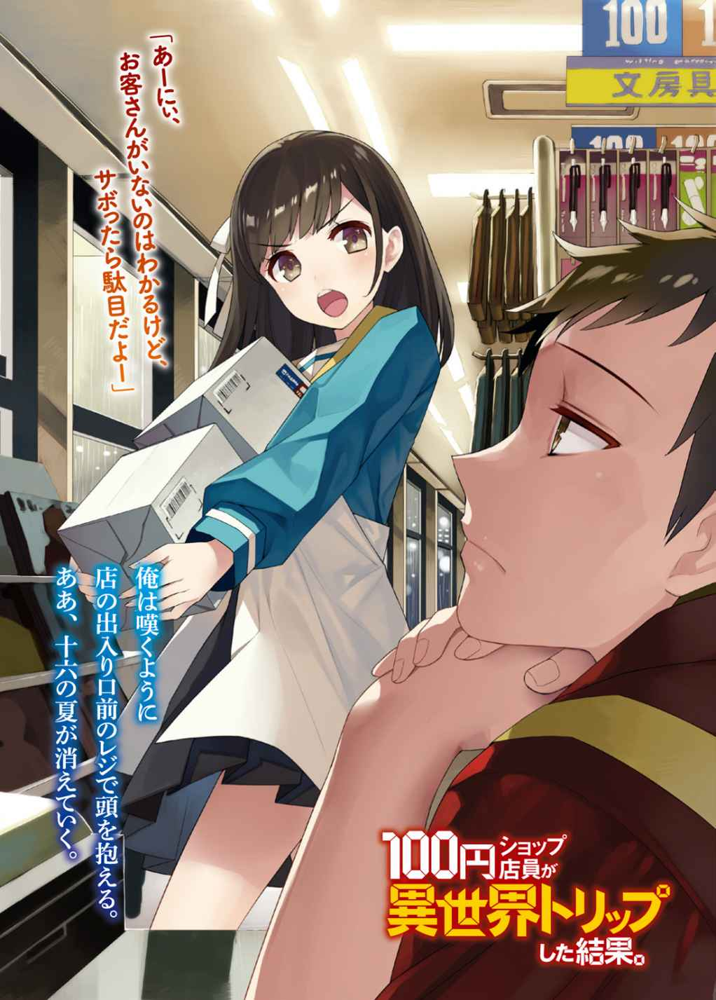
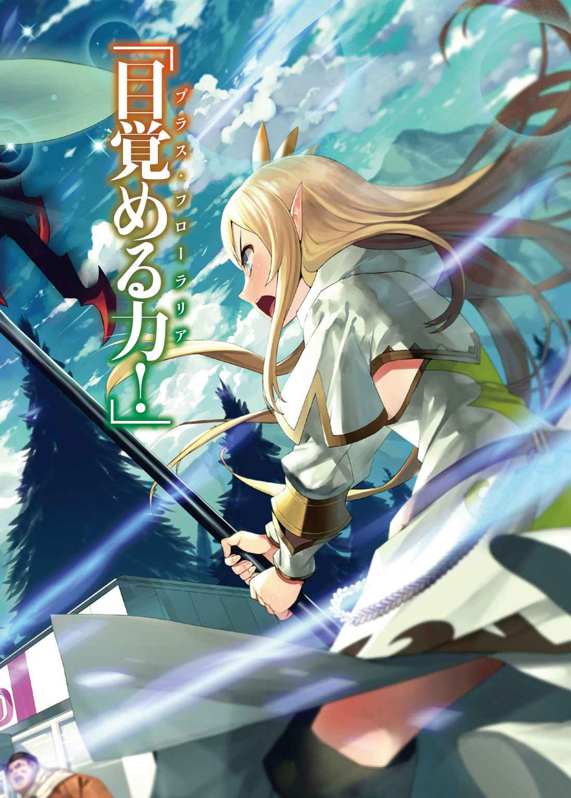
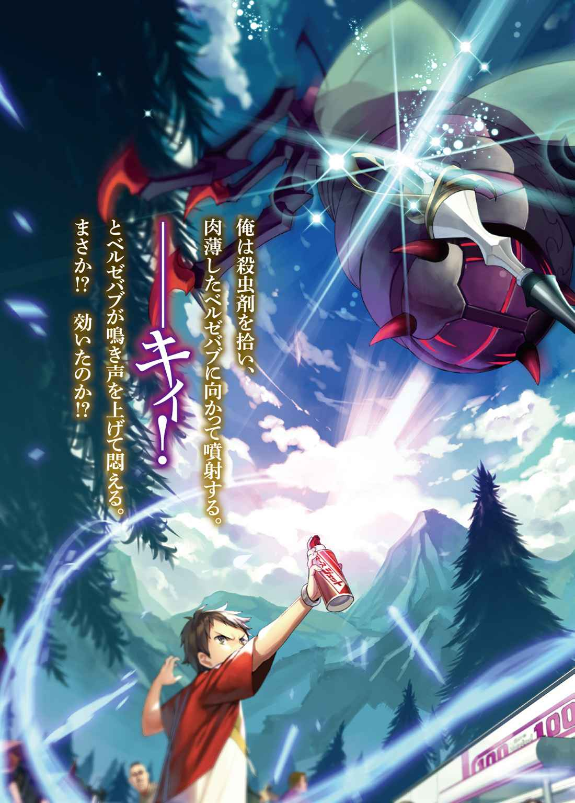
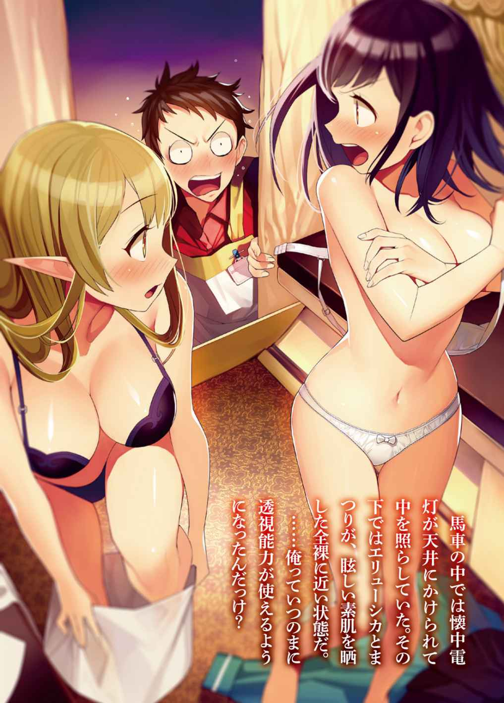
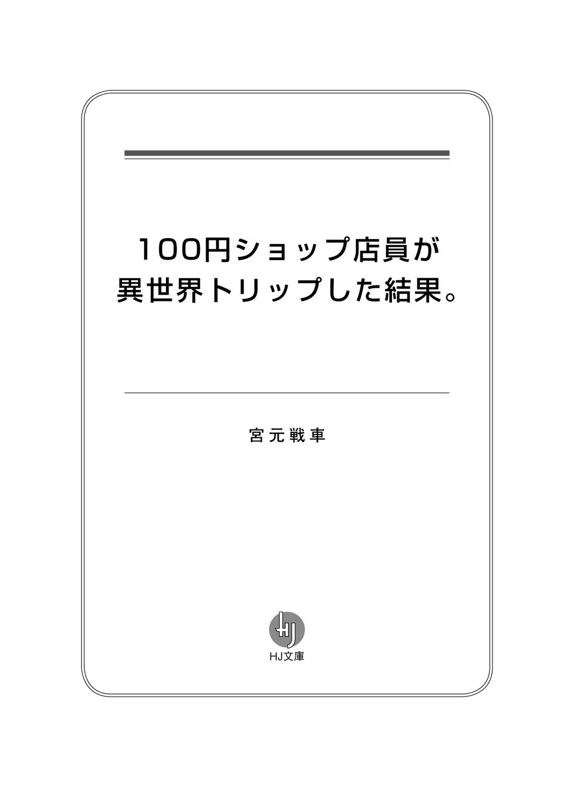
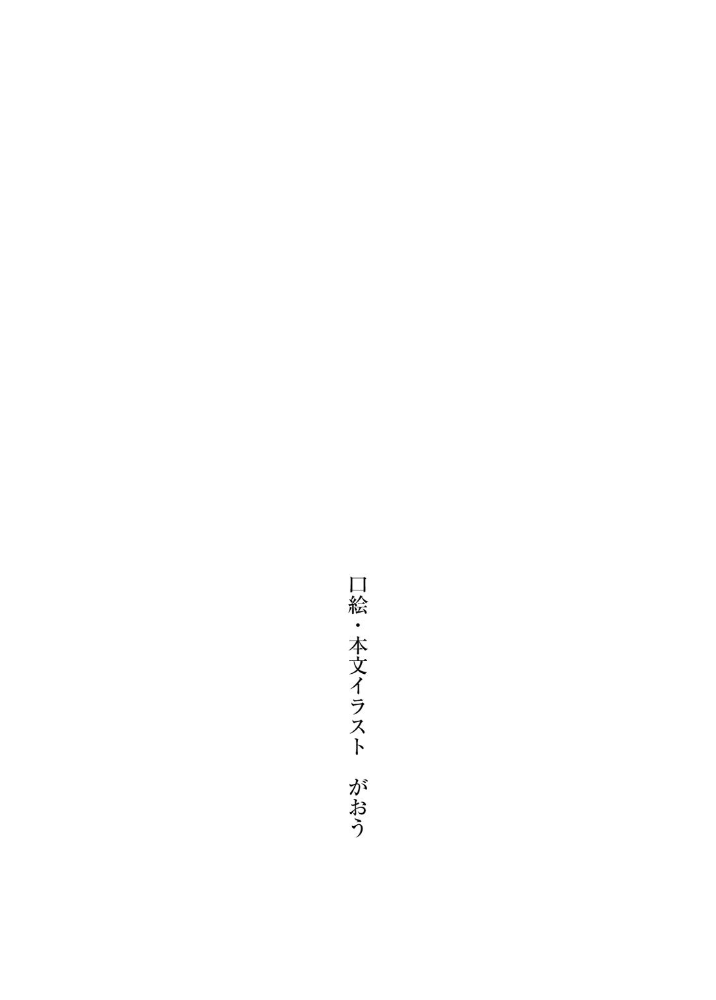
学生の夏。友達やちょっと気になるあの子と海でバカンス。そして、一夏の恋 。
......そんな青春の夏休みが始まるはずだったのに、どうして俺 は夜勤のバイトをしているんだ！
俺は嘆 くように店の出入り口前のレジで頭を抱 える。
ああ、十六の夏が消えていく。
俺が今いるのは女の子との出会いなどとは無 縁 な、二十四時間営業の１００円ショップのチェーン店――「１００ ！」だ。
この店は俺の親がフランチャイズのオーナーとして経営している。そのため、夜のシフトでどうしても人が埋 まらない場合は、身内である俺や妹が入ることになっていた。
店自体は一階建ての平屋だ。教室二つ分ほどの広さしかないが、品 揃 えはかなり豊富だ。お菓 子 やインスタント食品、文 房 具 、事務用品やちょっとした家具、キッチンや掃 除 、洗 濯 用品、衣料品やおもちゃ、工具、果物や野菜なども並べられている。
駅前に店を構えているため、普 段 であれば、たとえ夜でも残業上がりのサラリーマンなどでそれなりに賑 わっている。
しかし、今日は台風が来ており、雨が窓を激しく叩 いている。そのせいで店内にはレジ打ちの俺と、商品の検品作業をしているもう一人の店員しかいない。
「すごい雨だな」
俺は窓ガラスに映った、「１００ ！」のエプロン姿でうなだれる自分を見てため息を吐 く。バイトが終わる時間帯に雨が止 むことはないだろう。
帰るのが面 倒 だ。
「あーにぃ。......ねぇ、あーにぃ」
背後から少女の声が聞こえる。
あーにぃとは、譲 原 秋 海 という俺の名前と、兄が合体して略された呼び名だ。その名前で俺を呼ぶのは一人しかしない。
その声の方向に目を向ける。幼い顔つきで目がぱっちりしており、ほっそりとした華 奢 ななで肩 、俺と同じ「１００ ！」と書かれた黄色と白のエプロンを学生服の上に着た女の子、俺の一つ下の――妹である譲原まつりが仁 王 立ちしていた。
「なんだ。......まつりか」
「もう、なんだじゃないでしょー。倉庫から殺 虫 剤 を持ってきて補 充 してよー。夏だから、虫が多くてよく売れるんだよー」
まつりはレジの奥 にある扉 を指で指し示す。扉の向こうには二畳 ほどの広さの倉庫とトイレがある。
「まつり、そんな頑 張 って働かなくても、どうせこの天気のせいでお客さんは来ないよ」
俺が言い終わった瞬 間 、稲 光 が店内を照らし、轟 音 がまた鳴 り響 く。
「お客さんがいないのはわかるけど、サボったら駄 目 だよー」
まつりが頬 を膨 らませて注意する。まつりは１００円アイテムを集めるという変わった趣 味 がある。本人曰 く、「１００ ！」の仕事は天職だと感じており、サボったりするのが許せないらしい。
１００円でありながら、確かな品質。俺も、うちの商品は値段の割には使えるという自信がある。しかし、すごいと人に自 慢 したところで馬 鹿 にされるのがオチだと思っている自分もいる。
「もー。あーにぃは、やる気を出 せばすごいのに」
「別にすごくないって」
まつりは俺を過大評価している。
「えー、すごいよ。だって、お店に来たお客さんたちは、欲 しい物を探す前にあーにぃが持ってきてくれるから助かるっていつも言っているよ」
別に大したことじゃない。
子供の頃 から店の手伝いをしているため、お客さんを観察していると求めている商品が大体わかるようになってきた。このお陰 で挙 動 不 審 な万引き犯も捕 まえたことがある。
「だから、頑張ろうよっ」
まつりが脇 を締 めて両手で握 り拳 を作り、内 股 でやや膝 を落とした姿勢で微笑 む。
まつりはよくこんなポーズで応 援 することが多い。俺はまつりのポーズと呼んでいるが、空手の三戦という型らしい。なぜそんな型で応援するのかはわからない。
「......わかったよ。持ってくればいいんだろ」
「わー、さすがはあーにぃ！ えらい！ 兄ハイスコア更 新 間 違 いなしだよ」
そう言って、まつりは両手を叩いて喜ぶ。
また勝手に変なスコアつけているのか。
「はいはい」
俺は両手を叩いて喜ぶまつりを適当にあしらいながら倉庫に向かう。中に入ると、大量の段ボール箱が乱雑に積み重なっており、今にも倒 れそうになっていた。
近いうちに片付けないといけないな。
確か殺虫剤が入った段ボール箱には精密なハエの絵が描 かれていたはずだ。
積まれた段ボール箱をかき分けていくとそれが見つかる。開いて中を見ると、そこには殺虫剤が十本となぜかカエルのおもちゃが入っていた。
なんだこれ。他の店員が間違えて入れたのかな。
俺はそれをズボンのポケットに入れる。
後で売り場に戻 しておくか。
俺は殺虫剤を三本持って倉庫から出て、日用雑貨コーナーの棚 に向かう。空いたスペースに俺は殺虫剤を並べようとする。
ん？ 何かあるな。
そのとき、棚の奥に何か置かれていることに気づいた。
俺はその何かを手に取る。それは黒光りして変な文章が刻まれた腕 輪 だった。まるでアフリカかどこかの部族が身につけているような腕輪だ。
なんでこんなものが、こんなところにあるのだろうか。
「まつりー！ ちょっといいかー！」
俺は店内にいるまつりを大声で呼ぶ。
「どうしたのー？」
俺の呼び声を聞いてまつりが検品作業を中断してやってきた。
俺は腕輪をまつりに見せる。
「これ、『１００ ！』の商品だっけ？」
まつりは腕輪を見てすぐ首を横に振 る。
「ううん。違 うよ。そんな変わった腕輪を置いてたらすぐわかるよー。お客さんの落とし物じゃないかな」
「そうだな。誰 が置いていったんだろう？」
「きっと『アマゾン奥 地 三千キロから来た！ 伝説の先住民登場！』みたいな人かな」
「そんな探検隊が発見するようなやつが何しにここまで来るんだよ！」
「ハンコとか買いに来るんじゃないかな。......あーにぃ。先住民用の『ネイティブ・アメリカン』とか『プレデター』って刻まれたハンコを仕入れたほうがいいかな」
「星すら違うやつ混じっているぞ！」
......ちょっと天然ぼけぎみだが、「１００ ！」の商品に詳 しいまつりがそう言うのならば、間違いないだろう。
「お客さんが取りに来るかもしれないから、落とし物箱にいれておいて」
レジの下にはお客さんの落とし物をしまうプラスチック製の箱があり、落とし主が来るまでしばらくその中に入れる決まりになっている。
「ああ、わかったよ」
「じゃあ、まつりはちょっと倉庫の奥にいるからねー」
倉庫の奥......ああ、トイレか。
「１００ ！」のトイレはレジ裏の倉庫の奥にあり、使用の際はそのように告げることになっていた。
それにしても、どうやったら棚に腕輪を忘れるんだ？
触 って見たところ、メッキなどではなく金属のようだ。とても安物とは思えない。それになぜか妙 に心を惹 かれてしまう。
......少しだけならつけてもいいよな。
俺は腕輪を右手首に装着する。サイズは思った以上にピッタリだった。
......いい腕輪だ。
腕輪の文字はなんて書いてあるのだろうか。
まるで幾 何 学 模様のような文字を黙 って見つめる。すると、徐 々 に読めるような気がしてきた。
「異世界の迷える勇者よ......」
思わず口に出した言葉に俺は驚 く。
異世界に勇者？ いやいや、そんなわけがないよな。やはり読める気がしただけだろう。
どうやら、疲 れているらしい。
腕 時 計 を見ると夜の九時を示していた。
そろそろ休 憩 時間だからちょうど一休みできるな。
そのとき、窓が一 瞬 明るくなり、今まで聞いたことがないほど大きな雷 が鳴り響く。
「うわ！」
驚いた俺は声を上げる。同時に、天 井 の蛍 光 灯 から光がぶつんと消えた。
「な、なんだ!? 停電か？」
俺は手 探 りでレジの後ろに行き、蛍光灯のスイッチを押 す。しかし、全く反応しない。
外を見れば、大雨が窓を激しく叩いているのは相変わらずだが、周囲の建物の光は全 て消えており、暗 闇 が広がっている。
困ったな。完全に停電したようだ。
俺はポケットから携 帯 を取り出してインターネットで停電情報を確 認 しようと――。
『扉に繋 がりし永久の旅人』
「ん？」
どこからか女性の声が聞こえてきた。まるで脳内に直接語りかけるような不思議な響きだ。
俺は辺りを見回すが、暗闇のせいで全く見えない。
まつりのイタズラだろうか。
「まつり？」
声をかけた瞬間――、雷 光 により店内が一瞬、明るくなる。そして、一拍 遅 れでどぉんと、稲 妻 が落ちる音が遠くから聞こえてきた。
一瞬、見えた店内には誰もいなかった。
まさか幽 霊 ？ いやいや、幽霊なんているわけがない。おばけなんてないさ！ おばけなんて嘘 さ！
俺は強がって笑い飛ばそうとするが――、
『楔 の石を聖 櫃 として。魔 力 の群体を生 贄 に。漆 黒 の星々を越 えて。三千の世界を越 えて。異 界 鎖 よ聞き届けたまえ』
再び声が聞こえた。声の質からすると若い女性のようだが。
『エリューシカ・サイードの名において』
気がつけば、腕輪の文様が光っている。
「な、なんだよ！ これ！」
慌 てて腕輪を外そうと引っ張るが、全く外れない。腕輪に刻まれた文字の光はやがて立体映像のように空中に浮 かび、俺の周りを取り囲む。それはまるでファンタジー世界の魔 法 陣 のように神秘的だ。
やがて、魔法陣は店内の壁 をすり抜 けて外にはみ出るほど大きく広がる。
『繋がる世界 ！』
声と同時に飛行機が離 陸 するときのような違 和 感 がした。
「と、飛んでいるのか」
足 下 が揺 れて思わず尻 餅 をついてしまう。
やがて、店の窓からは大量の白光が入ってくる。俺の悲鳴は意識と共に光の奔 流 に呑 み込 まれ、真っ白に染まった。
おねえさまはとてもあたまがいいの。くにのことをいつもかんがえているの。
わたしのじまん。
おねえさまをたすけたい。
そうしたら、きっとほめてくれるわ。
まほうがつかえたらいいのに。
ヴァーミアン暦 ２５４８年・魚の月・28 日。
＊
まるで意識が天に昇 っているような浮 遊 感 が優 しく俺の体を包 んでいた。
何かとても大きな出来事があったような――。
不意に衝 撃 が俺を襲 った。
「うわぁぁぁぁぁ！」
一瞬で現実に引 き戻された俺は慌てて飛び起きる。どうやら、レジの前で気絶してしまったみたいだ。
店内は衝撃の影 響 でしばらく揺れていたが、徐々に収まっていく。
い、一体、何が起きたんだ!?
辺りを見 渡 すと、先ほどの衝撃で店内にある全ての棚から商品が落ちて床 に散乱しており、まるで強 盗 に荒 らされたように酷 い有様となっていた。
とりあえず蛍光灯のスイッチを押すが、反応しない。どうやら停電は直っていないようだ。
入り口の自動ドアのガラスから外を見れば、陽 の光が差していた。
まさか、気を失っている間に朝になったのか？ ......いや、それだと交代の店員が来ないのはおかしい。
おかしい点はそれだけじゃない。店の前にあった駅舎が消えて空き地になっていた。
その周囲には煙 突 がついたレンガ造りの建物が立ち並び、遠くにはなだらかな丘 が広がって、その上には大きな白 亜 の城が見えた。道路は石 畳 だ。
街に人 影 はなく、静まり返っている。
な、なんだこれ！ ここはどこだ!? い、いや、落ち着け。
俺は店内で腕輪を拾って、つい好 奇 心 からつけてみた。そうしたら何か声が聞こえて腕輪が光った。そしたら、魔法陣のようなものが出て店を包み、変な鎖が店を繋いで浮き上 がったと思ったら大きな衝撃音と揺れを感じた。
......この腕輪が原因か？
力 尽 くで腕輪を外そうとするが、全く外れない。まるで呪 いの装備だ。
頭を抱えて考え込む。しかし、いくら考えてもこんな現象は聞いたことがない。
「......これって夢かな？」
俺は自分の頬をつねるが、やはり痛いだけで何も起きない。
途 方 に暮れているとどこからか視線を感じた。再び外に目を向けると、先ほどは気づかなかったが、ガラス張りの自動ドアの向こう側から、誰かがこちらを見つめている。
それは白いローブを着て杖 を持った金 髪 の少女だった。
少女は両手で杖を持ち、店の周りを観察しているようだ。しばらくすると、少女は意を決したようにドアに向かって突 き進 んでくる。ドアは停電しているため、近づいても開かないはずだ。
まさかすり抜けて――。
「きゃぁっ!! 」
ごんっという音と共に少女はガラスに額をぶつけて仰 け反 る。
......普 通 はそうだよな。
少女は泣きそうになりながら額を押さえる。
「......結界？ でも、魔力は感じませんでした。ということは、それほど強い力を持つ結界ではないのかも......」
少女がぶつぶつと呟 く。やがて、顔を上げるとドアに向けて杖を振り上げる。
まさか、ドアを壊 そうとしているのか!?
「ちょ、ちょっと！ やめてくれ！」
俺は慌てて入り口ドアに駆 け寄 って叫 ぶ。すると、声に気づいた少女は俺を見て驚いた顔をする。
よかった。寸前で思 い止 まってくれたようだ。
近くで見て気づいたが、この女の子、すごく綺 麗 だな。
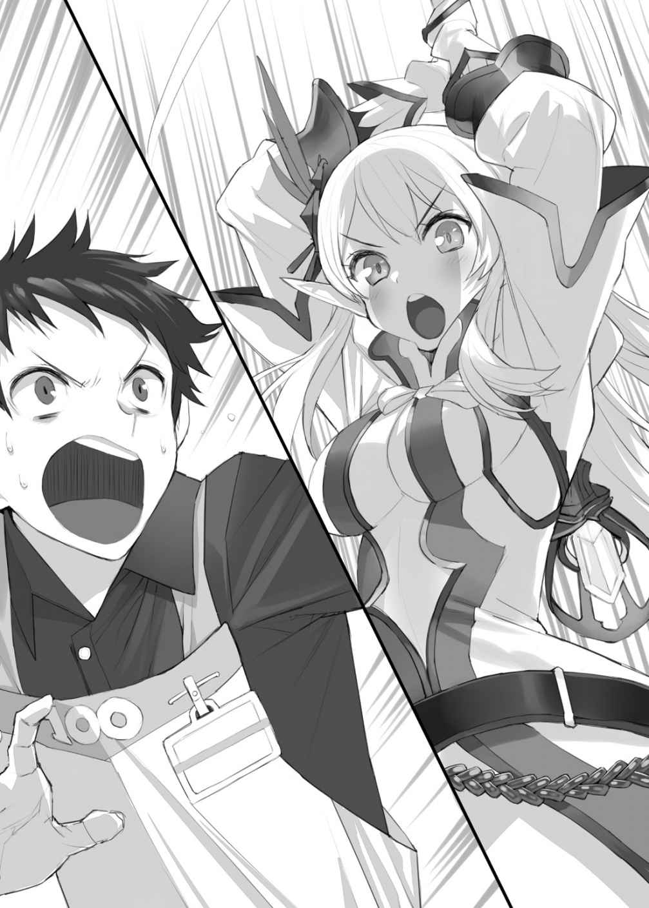
羽のような装 飾 がついた髪飾り、腰 まで届く金髪、人形のように整った顔立ち、深い海のように青い瞳 、細かい装飾が施 された白いローブ、輝 く石が埋め込まれた杖。まるでファンタジー世界からそのまま抜け出した魔 法 使 いのようだ。年 齢 はおそらく俺と同じくらいで十代後半だろう。彼 女 が天使だとしたら、間違いなく天使長クラスだ。もしも、この子が彼女だったら、彼女料金として月に三万円払 ってもいい。弁当はオプションでも払う。
あ、しまった。どう見てもこの女性は外国人だから、日本語が通じるわけがないよな。
「ガラス、ブロークン、ノー」
俺の英語力ではこれが限界だ。
少女とコンタクトを取るべく、ボディランゲージを始めるが、彼女の目は俺の腕 ばかりを追っていた。
参ったな。通じてないのかな。
「その腕輪は......勇者様！」
少女の声が聞こえて向き直る。
ホワッツ？ ユウシャサマなんて外国語あったかな。......って、違う。今のは明らかに日本語だった！
「あ、ああ、なんだ。日本語が通じるのか。いやー、よかった」
俺は自動ドアを手でこじ開けて、店の外に出る。
「ニホンゴ......？」
俺の言葉の意味がわからないというように少女は首を傾 げる。
「......え。いやいや、冗 談 、だよな？」
「冗談って......どういう意味で言っているのでしょうか」
しばらく俺と少女は見つめあう。少女の表情は至って真 面 目 だ。
「そ、そういえば、腕輪のこと見ていたけど、この腕輪のことを知ってるのか？」
「はい。それは楔の腕輪といいまして勇者の証 です」
「は？ え、どういうこと？」
「つまり、その腕輪は私が開発したもので、こちらの世界から勇者様の世界に送り込んだ魔法のアイテムです。腕輪は条件を満たす者の近くに現れます。それを装着すると、こちらに知らせて召 喚 する際の目印となるものです。更 に補助機能もあり、召喚の際にこの腕輪が作り出した結界を通 り抜けた者は、こちらの世界の言葉を聞いたり喋 ったりすることができます！」
少女は興奮気味に話す。
魔法？ 確かにさっきの杖から放たれた光とかはトリックにしては大 掛 かりすぎるけど。
「その腕輪をつけているあなたこそが勇者様なのです！ さぁ、一 緒 に魔 王 を倒しましょう！」
「いやいや、魔王って。そんな馬鹿な」
魔王と聞いて、俺は筋骨隆 々 で 髑髏 の仮面をかぶった恐 ろしい容姿を想像する。
少女の真意が掴 めない。俺は注意深く目の前の女性を観察する。
衣服は高級そうなものを纏 っている。裕 福 な生まれなのだろう。そんな人物が初めて会った人に向かってこんな突 拍 子 もないことを言い出すものだろうか。
――まさか、魔王を倒すと本気で言っているのか？
「あ、そうでした。まずは自己紹 介 が先ですよね。私はエルフ族で代々魔法使いを生 業 とするサイード家の長女エリューシカ・サイードと申します。エリューシカとお呼び下さい」
そう名乗った女性が優 雅 に頭を下げる。
エルフ？
髪 で隠 れているが、僅 かに覗 いている耳は尖 っているようにも見える。
「お、おおお、俺は緑 が丘 高校の二年です。譲 原 家の長男で譲原秋 海 です」
エルフという単語に動 揺 しながら、俺はエリューシカと同じように一礼する。
「ユズハラアキウミ――とても勇者様にふさわしい名前です」
エリューシカは頭を上げて、俺を見つめる。
「いやいや、もうそんな冗談はいいからさ。ここはどこなんだ？」
「冗談なんて言っていません。ここはルーフ王国です。地理で言えば、デュアルテイル国とエルゴ国の間にあります。えっと、少し待って下さい。確か......地図が......ありました」
エリューシカは腰に下げた小さなバッグから古びた紙を取り出す。
紙を広げると、そこには地球とは思えない地形の世界地図が描かれていた。大陸は国境のような線で区切られており、見たことがない文字が書かれている。
「ここはヴァーミアンと呼ばれる世界で、ここがルーフ王国です。人口十万人ほどで王都ルーフを首都とする小国です」
エリューシカが世界地図の中で一 際 大きな大陸の中央にある小さな国を示す。
「そして、あの場所に見えるのは王が住まう城――ルーフ城です」
エリューシカが少し遠くの丘の上にそびえ立つ城を指で示す。
「......嘘だろ。どうなっているんだ。わけがわからない」
呆 然 と俺は呟く。
「わからなくて、当然です。ここは勇者様にとって異世界なのですから」
は？ 異世界。
「いやいや、ありえないだろ！ 何言っているんだよ？ 確かに今までいたところとは全然違うけど、いくらなんでも異世界だなんて」
そう言った次の瞬間、急に視界が薄 暗 くなる。見上げれば、小型の飛行機くらいの大きさをした巨 大 なドラゴンが空を飛んでいた。思わず俺は口をぽかんと開けてゲームでしか見たことがない空想の生物であるドラゴンを見つめる。やがて、ドラゴンは雲の向こうに消えていった。
「......今、飛んでたよな!? 外国ってドラゴンが普通に飛ぶんだっけ!? 」
「あれは飛 竜 ですね。主に長 距 離 の移動や運 搬 などに使われるモンスターですね」
「モンスター......。は、ははは。そんな馬鹿な。モンスターなんているわけないだろ。あれだってきっとなんかの見 間 違 い――！」
否定していると、そこに街と反対方向の森の中から、二メートルくらいの熊 やトカゲ、犬などの大軍が二足歩行で近づいてくる。
な、なんだ、あれ！
「エ、エリューシカさん......」
先頭に立つ熊がエリューシカに話しかける。その熊はよく見れば、全身傷だらけだった。
「バンクさん！ その傷は一体、どうしたんですか!? 」
「魔王の討 伐 軍 として出 陣 したのですが、魔王軍のモンスターに返 り討 ちにあってしまいましてな。がはははは」
く、熊と会話している。はっきり言ってかなり怖 い。被 り物 だろうか？ いや、でも随 分 とリアルだ。感情の機 微 すら感じられる。
「そんな、ルーフ王国軍の数は魔王軍に劣 っています。正面から立ち向かうなんて無 茶 ですよ！」
「確かに。圧 倒 的 に兵力が足りませんな」
「今、薬草を使いますから！」
エリューシカがバッグから小さな葉っぱを取り出して、バンクという名前らしい熊の傷口に当てる。
「――目覚め る力 」
エリューシカが杖の先 端 に付いた石を葉っぱに近づけると、淡 く光り傷口に浸 透 していく。傷は驚くほど早く小さくなり、消えてしまう。
「お、ありがとうですぞ、エリューシカさん」
バンクが頭を下げて礼を言う。
「隊長！ よかった！」
トカゲやら犬やらがバンクを取り囲む。
「では、他の方々の治 療 を――」
エリューシカが他の犬やトカゲの兵士に向き直る。
「いえ、我々はほぼ無傷です」
「そうです。隊長がかばってくれましたから！」
それを他の兵士たちが止める。
「バンクさん、あんまり無茶しちゃ駄目ですよ」
エリューシカはバンクに向かって注意する。
「申し訳ない。次からは気をつけますぞ！ がははは！」
笑い事じゃない気がするんだが。
「ところで、さっき何をしたんだ？」
「薬草を使う際、その治 癒 力 を上げるため、物の効力を高める魔法をかけました」
「すごく便利そうな魔法だな。どんな物でも効力を高めることができるのか？」
「できますよ」
「すごいな。魔法使いってなんでもできそうだな」
「いえ、物の効力を高めるといっても、元となる物自体がなければどうにもならないので、なんでもできるというわけでは決してありません」
そうなのか。
しかし、制約があるとはいえ、怪 我 を治した光景を見てしまうと魔法を受け入れざるをえない。
「そもそも魔法ってどうやって使うんだ？」
「この世界、ヴァーミアンのあらゆる物には魔力が含 まれています。魔力を一定量集めることで魔法が使えるのですが、通常の自然界に含まれる魔力は微 量 で、溜 めるのは大変です。そこで、効率的に魔力を得るため、ドラゴンなどのモンスターから採取される魔力石を使うことが多いです」
「魔力石？」
「モンスターは生き物ではなく、魔力が凝 り固 まったものだといわれています。そのため、死ぬと体は失われて魔力の塊 だけが残ります。それが魔力石です」
エリューシカが俺に杖の先端にある透 明 な石を見せる。これが魔力石というやつか。
最初に見たときはルビーのような赤色だったのに、今は透明な水 晶 のような石になっている。
「魔力石はサイズによって魔力が異なります。今、杖につけているのは、一番小さなコモンタイプです。先ほどの目覚め る力 を一回使ってしまうとすぐ空になってしまいます」
そう言いつつ、エリューシカはバッグから新しい魔力石を取り出すと、杖から魔力石を外してそれを取り付ける。
「このコモンタイプが一 般 的 な魔力石です。これより少し大きなサイズのアンコモンタイプ、更に大きく強力なレア魔力石もあります」
なんかカードゲームみたいだな。
俺がエリューシカの話を聞いていると、バンクが訝 しげに話しかけてくる。
「ところで、以前からこのような建物がありましたかな？」
バンクの目の前にあるのは、周囲から明らかに浮いているコンクリートの建物、「１００ ！」だ。さっきから気になっていたのだろう。
俺も振り返って店の様子を見る。店の外 壁 には目立った損傷はない。
よかった。もしもひびでも入っていたら、親 父 たちが頭を抱え込んでしまうだろう。
ここが異世界だとして、どうやら、飛ばされたのは「１００ ！」だけのようだ。
「先ほどここで勇者召喚の魔法を使ったのですが、少し計算違いがあって、勇者様の周囲の建物まで召喚されてしまったようです」
「なんと！ 王女様の依 頼 で楔の腕輪と召喚魔法を開発していたことは知っていましたが、まさか本当に成功するとは！ では、このお方が！」
「はい、こちらが勇者のユズハラアキウミ様です」
「い、いや、勇者じゃないから！ ただの店員だから！」
バンクは店員という言葉に反応して一瞬だけ懐 疑 的 な視線を向ける。しかし、すぐに豪 快 な笑 顔 に変わる。
「ふむ。しかし、エリューシカさんが呼び出した勇者だと言うならば間違いないでしょう。おっと、自己紹介がまだでしたな。私はルーフ王国軍防衛部隊長を務めているバンクと申します」
「ルーフ王国軍防衛部隊？」
「王都でも屈 指 の強さを誇 る部隊です。バンクさんはその隊長なんです。ルーフ王国軍防衛部隊といえば貴族と同じくらい高い地位なんですよ。獣 人 族 でこれほどまで高い地位についているのはバンクさんが優 秀 だという証なんです」
「とりあえず、私の部下を使って街の人々に事情を説明しておきましょう。彼 らが先ほどから不安そうにしているようであります」
バンクが少し離 れた建物に目をやる。
「そうですね。お願いできますか？」
「わかったであります。これより近 隣 の住民に説明するであります！ その後、王女様に今回の遠 征 を報告しなければ！ はっはっは！ 気が重いですな！」
豪快な性格なのだろう、バンクは笑い出す。
「よし、では、総員駆け足 ！」
バンクの号令で部下が近くの家に一軒 一軒回って説明を始める。部下たちの説明で納 得 したのか、しばらくすると住民たちが少しずつ家から出てくるようになった。その中には、バンクのような熊や二足歩行で服を着た猫 やトカゲもいる。
俺はしばらく呆然としたまま、その光景を見つめ続ける。
「獣人族や竜人族が珍 しいのですか？」
またしても聞き慣れない単語が聞こえた。
「珍しいというか初めて見た」
でっかい竜は飛び、熊は喋り、そして、目の前にエルフがいる。まさにファンタジー世界だ。
「......ここ、やっぱり異世界なのか？」
「はい。このヴァーミアンには人間族、エルフ族、ドワーフ族、獣人族など様々な種族がいます。戦争や災害などは起きず、概 ね平和に暮らしておりました。ですが、半年前、このルーフにモンスターを統 べる魔王が現れました」
「それを俺 がやっつけるってことだよな？」
「はい、そうですよ。勇者様ならできますよ」
「いやいや、絶対無理！ あんな強そうな熊ですら倒せないんだろ!? 俺が倒せるわけないじゃないか！」
俺は首を振ってエリューシカの発言を全面否定する。
「大 丈 夫 です。絶対に倒せます！ 楔の腕輪を異世界に送り込む際の条件に『魔王 倒せる 勇者』で検 索 しましたから！」
思わず自分の耳を疑ってしまうほど衝 撃 的 な言葉だった。
「俺、どっかの検索サイトみたいな形で召喚されたのかよ!? もっとマシな勇者呼べよ！」
俺の抗 議 にエリューシカは申し訳なさそうな顔をする。
「最初は全く召喚されなくて......『魔王 倒せる 勇者 なんとか』で検索したらようやく召喚されたんです」
「なんとかで召喚されちゃったのかよ！ 絶対、間違いだから！」
「伝説や文 献 を基に作り上げた楔の腕輪に選ばれたのですから、絶対に大丈夫です！ これで王女様も喜びます！ 早く王女様に報告しに行かないと！」
興奮しているエリューシカに水を差すようで悪いが、こういうことはきちんと言わなければいけない。
「あのさ。勝手に連れてこられても困るんだ。早く元の世界に戻してくれ」
俺は不安を隠さずに率 直 に伝える。
一度くらいは異世界に行ったら魔王を倒してハーレムでウハウハ！ みたいなことを考えたこともある。多少、今もドキドキしている。だが、実際、なんの力もないのに異世界に来て魔王なんか倒せるはずがない。
「そう、ですか」
エリューシカが泣きそうな顔で俯 く。
......う。心が痛い。せっかく苦労して勇者を呼び出したんだもんな。同情はするけど。
「でも、申し訳ありません。それはできないんです」
顔を上げたエリューシカは首を振って否定する。
「え？ なんで!? 」
俺は感情的になってエリューシカに詰 め寄る。
「召喚には大量の魔力を必要とします。でも、勇者様を召喚した際に国が保有していた魔力石をほとんど使ってしまいした。なので、残る方法は国宝の神 力 石 を使うしかないのですが、それは魔王に奪 われてしまいました」
「え!? 神力石って？」
「神力石は魔力石の中でもとくに珍しく、一際強い魔力を内包するレジェンドランクの魔力石のことで、伝説級のモンスターから採取されるといいます」
「伝説級って......そんなモンスターもいるのか」
「はい。三千年前の神話の時代から生息すると言われるモンスターのことで、個体数が少ない上、倒すのも非常に難しいので、そこから採取される神力石はとても貴重なものとして高値で取引されています。おそらく今は世界に十もないと思います」
「な、何か、他にその石を手に入れる方法はないのか？」
嫌 な予感がする。
子供の頃、まつりが『海ってフリードリンクだから、飲み放題だよ。それに海の底にある海洋深層水ってすごく体にいいんだよ』と言って、石を抱 きしめて海の中にダイブしたとき、慌てて追いかけて止めたくらいの嫌な予感レベルだ。
「すみません。やはり魔王から取り返すしかありません」
エリューシカは申し訳なさそうに長い睫 を伏 せて告げる。
「......はぁ、魔王を倒 すなんて無理だ」
ため息を吐 きながら断言する。
魔王を倒すしか元の世界に帰る手段がないなんて......。
「大丈夫です。勇者様は楔の腕輪に選ばれたのですから、きっと魔王を倒せます」
悩 む俺を見て、エリューシカが励 ますように手を取り見つめる。
「えっと、そ、そうか、な。あはは、確かにそう思うってばよ」
エリューシカのやわらかい手の感 触 のせいで、俺はつい変な言葉が出てしまった。
「はい。絶対に――あ、す、すみません！ つい興奮してしまって」
俺の手を握 ったまま詰め寄っていたことに気づいたエリューシカは、顔を赤らめて慌てて離れる。
「そ、そういえば、勇者様がいた建物が先ほどから気になっていたんですが」
「えっ？ ここはただの１００円ショップなんだけど」
俺は自らの「１００ ！」と書かれたユニフォームを指で指す。
「ヒャクエンショップ？ どのようなお店なのですか？」
口で説明するよりも直接見せたほうが早いな。
「良かったら商品を見てみるか？」
俺は店内に戻 るとエリューシカを手招きする。
「是 非 、お願いします。異世界の物に興味がありますので」
「暗くて物が散らばっているから、足下に気をつけてくれよ」
「わかりました！」
俺の後に続いて店内に入ったエリューシカは目を輝かせる。
「わぁ、すごい......。こんな変わったものは今まで見たことがないです」
散らばった店内をエリューシカはキョロキョロと見渡し、珍しいものを見つけては感心したように両手を合わせて声を上げる。
「これとかどういったことに使うのでしょうか。見当もつきません。あ、こっちも！」
散らばった店内でまるで子供のようにはしゃぎ回るエリューシカ。
あんなに歩き回って大丈夫だろうか。
「――あっ！」
エリューシカが店内に落ちていたペットボトルを踏 みつけて転びかける。
「あぶない！」
俺は咄 嗟 に手を伸 ばしてエリューシカを後ろから抱きとめる。
その瞬 間 、手のひらに柔 らかい感触が伝わる。
「ひゃん！」
エリューシカが可愛 らしい悲鳴を上げる。
この感触はなんだろうか。とても柔らかい肉まんのようだ。それでいてどこか安心感がある。
無意識に俺はもみもみとそれを揉 む。
「あ......、んっ。ゆ、勇者様」
......ま、まさか！
「ゆ、勇者様......。あの、手が......」
エリューシカが頬 を赤らめる。
「わ、私の胸を......も、揉んでいます」
「あ、ご、ごめん！」
慌てて俺はエリューシカの胸から手を離して距 離 を取る。
「わ、わざとじゃないんだ！ 許してくれ！ だから、訴 えないでくれ！」
「わ、わかっています。勇者様は私を助けようとしてくれたんですから」
エリューシカは顔を赤らめながらも、俺を心から信じているような瞳で見つめてくる。
「ありがとうございました、勇者様」
「ここここ、こちらこそ、ありがとうございます」
動揺した俺はついお礼を返してしまう。
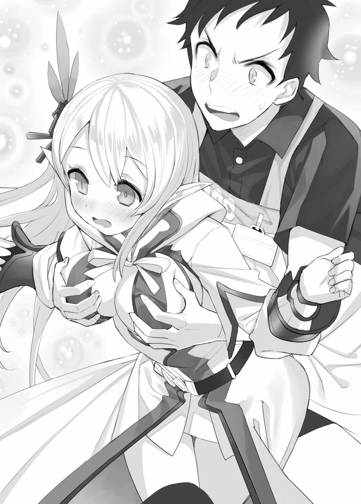
危なかった。これが元の世界だったら、刑 務 所 で笑顔が消えて心が壊れてしまう生活を送ることになってしまうだろう。
沈 黙 で場の動きが止まる。
う、気まずい。
「こ、このショップにはいろいろなものがあるんですね。勇者様のお店ですか？」
気まずい沈黙を破るように、エリューシカは気を取り直して店の話を振 ってくる。
「いや、俺の両親の店でさ。俺はここで店員として働いているんだ。全部１００円だけど、色々なものがあるんだ」
「先ほどからヒャクエンという言葉をよく聞きますが、『ヒャクエン』とはなんですか？」
「俺の世界で使われている通貨の単位が『円』なんだ」
俺は棚 に置かれた商品の食パンを持ってくる。
「大体、１００円でこの食パン買えるくらいかな」
「勇者様の世界にもパンがあるのですね。こちらでは１００ゴランで同じぐらいの大きさのパンが買えます」
そう言ってエリューシカがバッグから銅の硬 貨 を見せる。
「それなら、大体、１００円と１００ゴランは同じくらいの価値なんだろうな」
「だとしたら、すごいことです！ １００ゴランでこんなにすごいものが買えるなんて」
俺の答えにエリューシカは驚 く。
「俺の住んでた世界ではこれぐらい普通だよ」
店内を見渡していたエリューシカは、床に落ちていたペンチを恐る恐る手に取り凝 視 する。
「......すごい武器。これは罪人の爪 を剥 ぐ器具に似ていますね」
「いや、そういう使い方するもんじゃないから！」
......想像するだけで背筋が寒くなる。
「そ、そうですよね。......じゃあ、これはなんですか？」
エリューシカが床に落ちていた１００円ライターを手に取る。
「ああ、それはライターってやつで簡単に火を熾 せる道具だ」
「え、これだけでですか？」
エリューシカが目を見開いて驚く。
「そうそう」
ライターに火を点 すと、エリューシカの表情がパッと明るくなる。
「わぁ、すごい！ 勇者様！」
「だ、だろう？」
この反応から鑑 みるに、この世界は中世ヨーロッパと同じくらいの文明レベルだろう。
「これはなんでしょうか？」
エリューシカはお菓 子 の棚 に並べられていた袋 するめを手に取る。
「これはするめっていうんだ。イカっていう生き物を乾 燥 させた食べ物で、一種の非常食みたいなものだ」
「へー、なるほど」
エリューシカは興 味 津 々 で袋するめを見つめる。そのとき、エリューシカのお腹 からくぅーという音が鳴る。
「エリューシカ、もしかして、お腹すいてる？」
「い、いえ、違 います！ そんなことはありません！」
再びエリューシカのお腹からくぅーという音が聞こえた。
「本当に？」
「......すみません。ちょっとだけ小腹がすきました」
俺の追及に真っ赤になったエリューシカが身を縮めて謝罪する。
「ちょっとそれ貸してくれないか？」
エリューシカから袋するめを受け取り、封 を切って一口大ほどのするめを取り出す。
「このするめはこのまま食べても美 味 いけど、ライターの火で炙 ると」
俺はライターに再び火を点 して、その火でするめを炙る。
※小さい子供は絶対に真 似 をしないでください。
しばらく待つと、するめが焼ける匂 いが鼻を突く。ほどよく焦 げ目 がついたところで火を消す。
「ほら、俺がたまに食べる炙りするめ」
俺はエリューシカに炙りするめを渡 す。
「あ、ありがとうございます」
エリューシカは戸 惑 いながらもするめを受け取る。
よく考えたら女子受けしない見た目のするめを渡すのは駄 目 だったのかも。
後 悔 している俺を気にすることなく、エリューシカが炙りするめを勢いよく口に含み、もごもごと噛 み始める。すると、エリューシカの顔にみるみる喜色が表れていく。
「......美 味 しい」
信じられないというようにエリューシカが呟く。
「だろ!? 」
うちの商品の組み合わせでこんなに褒 められると嬉 しくなる。
「噛めば噛むほど味が出て......じんわり口の中に広がるようです。ほのかに包 み込 むような海の匂いも素 晴 らしいです。そう、たとえるならば、ブリオランの海。生命の神秘が凝 縮 された味の宝物庫です！」
エリューシカが頬を紅潮させて目をとろんと蕩 けさせながら、悩ましげな表情で口を動かす。
......異世界のもので例えられてもよくわからないな。
「しゅごく幸せ......」
とうとう言葉まで崩 壊 してしまった。
「......はっ！」
俺の視線に気づいたエリューシカが表情を引きしめる。ほんのわずかに頬が赤くなっているところが可愛らしい。
「こんな美味しいものが１００ゴランなんて、しゃすがは勇者様です！」
エリューシカがするめを噛みながら話を元に戻す。
「たかが、するめ焼いたくらいでそんなこと言われても」
「いえ、こんな美味しいもの私たちの世界で見たことがありません。きっと、ここにある道具を使えば魔王を倒せます！」
エリューシカが力説する。
「いや、でもなー」
エリューシカから視線を外して、店内を見 渡 す。ここにある物で魔王を倒せるとは到 底 思えない。
「お願いします、勇者様！ どうかこの国を救って下さい！」
エリューシカが必死に頭を下げてくる。女子にこんなに何かを頼 まれたことなんて一度も無い。それに「１００ ！」の物をここまで気に入ってくれた女子を無 下 にすることはできない。
「か、考えておく」
優 柔 不 断 な俺は答えを先延ばしにするという必 殺 技 でかわした。
「はい！ 勇者様。共に頑 張 りましょう！」
考えておくと言ったのに、彼女の中では俺はもう勇者に決まっているらしい。
「......と、ところでするめをもう少し頂けませんか？」
さっきのするめが気に入ったらしく、エリューシカが恥 ずかしそうに求める。
「あ、ああ。......はい、これ」
俺は再びするめをライターの火で炙り、エリューシカに渡そうとする。
そのとき、店の外からカーンカーンという警 鐘 が鳴 り響 く。それからすぐに複数の悲鳴が聞こえてきた。
「な、なんだ!? 」
「勇者様、この警鐘は魔王軍のモンスターが来た知らせです！」
ま、魔王軍!? 街までモンスターが来るのか!?
「表に出てみましょう！」
エリューシカがそう言って、俺の手を取る。
「あ、ああ」
本当は怖いから見に行きたくないが、一人になるのはそれ以上に不安だ。
エリューシカと一緒に店の外に出る。道路は西洋甲 冑 を着た兵士や獣人の戦士などで溢 れていた。
どの兵士も両 刃 の剣 を抜 いており、表情は歴戦の猛 者 のように厳しい。
「あそこです、勇者様！」
エリューシカが指した方向を見れば、五匹 くらいの黒い何かがこちらに飛んでくる。
近隣の家の住民たちは慌 てて扉 に鍵 を閉める。
「あれは――！」
エリューシカが緊 迫 した声で呟 く。黒い何かをよく見れば、全長二メートル、黒光りする胴 体 、高速で動く前 翅 、細い六本の足、大きな複眼。元の世界にいるハエをそのまま大きくしたような生き物だ。
巨大ハエたちは兵士たちに襲 いかかってくる。近くの戦士たちは剣や槍 などの武器を使って応戦するが、巨大ハエたちは大きい割に動きが素 早 く、攻 撃 は空を切るばかりである。
「そ、そんな、王都にいる兵士たちの練度は低くないはずなのに」
エリューシカの言うとおり、兵士たちは筋骨隆々の体つきで戦い方にも迷いがない。元の世界で言えば、ＳＷＡＴなどの特 殊 部隊に相当するのではないだろうか。
それでも、空を縦 横 無 尽 に飛び回るハエ型のモンスターに手も足も出ず、徐 々 に兵士が倒されていく。
数 匹 の巨大ハエは兵士や戦士たちを倒しながら、こちらに近づいてくる。
げ、まずい！
「逃 げ――」
何か声を出 そうとした瞬間、いつの間にか別の方向から接近してきた巨大ハエの体当たりを食 らう。俺の体は地面を転がり、視界が回転する。
そのまま「１００ ！」の壁 に俺は背中から叩 きつけられる。体中に奔 る痛みで頭が真っ白になる。
「――げ、はぁっ」
俺の肺から空気が零 れる。
「勇者様！」
慌ててエリューシカが駆 け寄 ってくる。
「だ、大丈夫だ。そ、それよりも、早く店の中へ逃げよう」
俺は痛みを堪 えて立ち上がる。幸いにも俺を襲った巨大ハエは近くの兵士と戦っており、こちらへの追 撃 はなかった。怯 えながらもエリューシカの手を引いて「１００ ！」に避 難 する。
「あれが......モンスターか？」
店内の奥 に配置された日用品の棚の裏に隠れて一息ついた俺はエリューシカに問う。
ハエのモンスターに襲われるなんて、まるで出来の悪いパニック映画だ。
「え......は、はい。ベルゼバブ。魔 王 の配下のモンスターです」
ベルゼバブ......？ 確か『ハエの王』とも言われる悪 魔 の名前だった気がする。
兵士たちも倒せないのに、あんなのどうすればいいんだ。
そのとき、ガシャンとガラスが割れる音が聞こえた。
......ということは！
音が聞こえた方向を隠れた棚からそっと覗けば、ドアからベルゼバブが店内に侵 入 して、棚のお菓 子 を食い漁 っていた。
俺たちを狙 ってきたわけではないらしい。かといって、このまま店が荒 らされるのも困る。
「勇者様はここで待っていて下さい。ここは私が」
エリューシカが杖 を構える。
「それは危なくな......いや、でも、俺を異世界に呼ぶくらいすごい魔 法 を使ったんだから、何かすごい魔法でモンスターを攻撃できるとか？」
「申し訳ありません。私は補助魔法が専門なので攻 撃 魔法は使えません。で、でも、やるだけやってみます！」
勇ましい言葉とは裏腹にエリューシカの手は震 えていた。
「いや、エリューシカは隠 れててくれ。俺がやってみる」
震える足を抑えつつ、俺はエリューシカの前に立つ。怖がっている女の子を戦わせるわけにはいかない。
俺は少しでも身軽になるため、「１００ ！」のエプロンを外し、ポロシャツとズボンの姿になる。
「で、でも、勇者様」
エリューシカは抗議するが、俺は親指を立てて笑みを浮 かべる。
「任せてくれ。見たところ、あのモンスターの動きは広い場所では有利だが、この狭 い店内なら動きが制限されてスピードが落ちるはず」
「すごい。そこまで見て、ここに敵をおびき寄せたんですね！」
別にそういうわけじゃなかったんだが。まぁ、いいか。
俺は匍 匐 前進で店内を進み、日用雑貨の棚からフローリングワイパー、針金、果物ナイフを持ってくる。フローリングワイパーの柄 に果物ナイフを針金でくくりつける。耐 久 性 はないが、これで即 席 の槍が出来た。
俺は静かにベルゼバブの背後に回り込んで近づく。
「うおりゃあ！」
お菓子に夢中になっているそいつの背中を槍で突 く。だが、気配に気づかれて咄嗟に背中の羽で刃 をはじき飛ばされる。
まずい。
そう思ったときにはベルゼバブは俺に向き直り突 進 してきた。
咄嗟に避 けようとしたが思ったよりも速く、まともに当たってしまった。
「ぐぅ！」
棚にぶちあたり、殺 虫 剤 や蚊 取 り線 香 などをまき散らしながら俺は地面に倒れる。
た、立たないとっ！ や、槍は......。
気がつけば、握っていた槍は無くなっていた。吹 き飛 ばされたときに落としたらしい。
「勇者様！ 危ないです！」
エリューシカの叫 び声 が聞こえてきて、俺は顔を上げる。眼前にベルゼバブが襲いかかってきた。
「うお！」
慌てて両 腕 を伸ばして赤い眼 を掴 んで体当たりを受け止める。しかし、受け止めきれず、背中が地面に張り付き、馬乗りされた状態になる。
「んぐぐぐぐ！」
指の隙 間 から捕 食 するために口だけが激しく動いているのが見えた。
まずい！ まずい！
ベルゼバブの力は強く、徐々に俺の腕 が曲がり、押し込まれていく。
どうすればいいんだ。元の世界ならハエなんて殺虫剤を吹き付 ければ一 撃 で倒せるのに。
そう思っていると、俺の腕に何か筒 状 の物が当たる。それはハエの絵が描 かれた殺虫剤だ。
見るからにベルゼバブとそっくりだ。もしかして、こいつに効くのだろうか。いや、いちばちか試 してみるしかない！ でも、とてもじゃないけど、殺虫剤を取る余 裕 が――。
「えい！」
そのとき、エリューシカが手元にあったペンチをベルゼバブに向かって投げつける。ペンチが直 撃 したベルゼバブは一 瞬 、動きが止まる。
今だ！
俺は殺虫剤を拾い、肉 薄 したベルゼバブに向かって噴 射 する。
――キィ！ とベルゼバブが鳴き声を上げて悶 える。
まさか!? 効いたのか!?
しかし、苦しげな声を上げるだけでイマイチ効果が薄 い。
続けざまに殺虫剤を噴射し続けるが、これもいつまで持つかわからない。
くそ！ 足止めにしかならないか！ 他に何か手はないか!?
辺りを見渡せば、エリューシカの杖が目に入る。
エリューシカの魔法......。
『薬草を使う際、その治癒力を上げるため、物の効力を高める魔法をかけました』
不意にエリューシカの言葉が頭をよぎる。
そういえば、エリューシカはものの効力を高める魔法を使っていた。それなら――。
俺はエリューシカに向かって殺虫剤の缶 を突き出し、叫ぶ。
「エリューシカ！ 俺が持っているこれを魔法で強化してくれ！」
「え、そ、それをですか？」
「いいから早く！ これはベルゼバブみたいなやつをやっつける効果があるんだ！」
「は、はい！」
エリューシカは駆け寄ってくると、俺が持っている殺虫剤に杖の先 端 にある魔 力 石 を当てる。
「――目覚め る力 」
魔力石が光 り輝 くと同時に手に持った殺虫剤の噴射力が強くなり、すごい勢いで噴 出 される。
「す、すごいな」
ベルゼバブは断 末 魔 の叫びを上げて動かなくなる。同時に殺虫剤の勢いも弱まる。どうやら、魔法の効力が切れたようだ。
十秒くらい警 戒 しているとやがて、ベルゼバブは砂となって手のひらサイズの光る石を残す。それはエリューシカの杖にある魔力石と同じものに見える。
え、嘘 だろ。倒した？ ははは、ありえない！ モンスターを退治できた！
「や、やった！ 勝った！」
俺は拳 を握って天に突き上 げて喜びを表現する。
よかった。異世界のハエ型モンスターにも殺虫剤が効いたようだ。
「イエー！ サンキュー『１００ ！』」
俺は１００円ショップの店員であることを誇りながら、殺虫剤を突き上げる。
「勇者様！ さすがです！ えっと、さんきゅーワン・オー・オー！」
エリューシカが俺に抱きついてくる。
「え、え、あ、ちょ、ちょっと!? 」
女子に抱きつかれたことがない俺はパニックになり硬 直 する。
「さすが勇者様です！ 私は信じていました！」
エリューシカがキラキラした目で俺を真下から見つめる。
まずい。こ、こんな可愛い子に見つめられるなんて初めてだ！
「それにしても、魔法で補助したとはいえ、ベルゼバブを倒すなんて勇者様の道具はすごいですね！」
「いや、この殺虫剤が運良く効いただけなんだけどな」
俺は殺虫剤をエリューシカに見せる。
「サッチュウザイ？」
殺虫剤を見たエリューシカは不思議そうな顔をする。
「えっと、俺の世界の......虫を殺すための毒だよ。よかったら、エリューシカも使ってみてくれ」
エリューシカは俺から殺虫剤を受け取ると、興味深そうにそれを顔に近づけていじる。
「すごいです。こんな金属の筒 に毒が入っているなんて――うきゃ」
迂 闊 にボタンを押してしまったエリューシカの顔に殺虫剤が吹き付けられる。
「げほ！ げほ！ あわわわ、あわあわわ。ど、毒が！ 毒が！」
咳 き込みながらエリューシカは慌てて殺虫剤を放 り投 げる。
「勇者様！ このまま死んでしまう不幸をお許しください！ せめて最期は勇者様の胸の中で......」
エリューシカが目を閉じて俺にもたれかかる。
「落ち着け、エリューシカ。ちょっとぐらいなら大丈夫だ」
「え。そ、そうなんですか？ よ、よかったです」
俺の言葉にエリューシカは自身の体を触 診 する。やがて異常がないことを確 認 すると、恥ずかしかったのか頬を赤く染める。
エリューシカが放り投げた殺虫剤を拾う。
「とにかく、この殺虫剤を使えばあのベルゼバブは倒せるみたいだな」
そのとき、外から街の人の悲鳴が聞こえてくる。
「勇者様！ 街の人々を助けに行きましょう！」
「ああ、このままモンスターを退治しよう！」
弱点さえわかれば、こっちのものだ！
俺たちは揃 って店外へと飛び出す。外はベルゼバブの襲 撃 により、阿 鼻 叫 喚 の巷 と化していた。
「エリューシカ！ 補助魔法を頼む！」
エリューシカに殺虫剤を差し出す。エリューシカはバッグから新しい魔力石を取り出して、杖の魔力石と交 換 する。
「わかりました。――目覚め る力 」
杖から光が発せられて殺虫剤は強化される。
これで完 璧 だ！
「食らえ！」
兵士に襲いかかっていたベルゼバブに背後から近づいて殺虫剤を噴射する。ベルゼバブは大きく羽をばたつかせて地面を転がり回るが、すぐに動かなくなる。
「す、すごい」
やがて前回と同じように魔力石となったベルゼバブを見て、エリューシカが呆 然 と呟く。
「エリューシカ！ 下がっていてくれ！ またやつらが来る」
仲間の死に反応したのか、残り三匹のベルゼバブがこちらに突進してくる。俺は先頭のベルゼバブに殺虫剤を吹き付ける。殺虫剤を吹き付けられたベルゼバブは途 端 に失速して俺の横を通り過ぎて地面に転がり回る。
次に回りこんで背後から突進してきたもう一匹にも殺虫剤を噴射する。それだけで苦しそうに上空を飛び上がるが、すぐに力 尽 き地面に墜 落 して動かなくなる。
残り一匹だ。
しかし、最後のベルゼバブは身を翻 し、あっさりと引き下がっていく。少し拍 子 抜 けしてしまったが、わざわざ追う必要はないだろう。
「や、やりました！ 勇者様！ すごいです！ さすがは勇者様です！」
エリューシカが飛び跳 ねて喜ぶ。
「ふぅ......」
ベルゼバブを倒した気の緩 みから地面に座 り込む。
「あ、勇者様。後ろを見て下さい」
振り向 けば、猫 やトカゲなどの獣 人 の兵士たちが集まってきた。どの兵士たちも顔や腕に傷を負い、血で赤黒く染まった包帯を巻いていた。
「う、うわ、な、なんだ！」
どの兵士も希望に溢れた瞳 で俺を見つめていた。俺は慌てて立ち上がり、兵士に向き直る。
「ありがとうございます！」「ベルゼバブをやっつけるなんて」「俺 たちが全く敵 わなかったのに、一体、何者なんだ」
これほど注目されたことは俺の人生で一度たりともない。
「彼 が異世界から来た勇者様です！ 彼ならば魔王も必ず倒してくれます！」
エリューシカの言葉に兵士たちは熱 狂 的 な歓 声 を上げる。その中にはむせび泣く人すらいた。
「そ、それはこの殺虫剤のお陰 です。これがあれば、あのモンスターを退治することができます」
「それはすごい！ そんなすごい武器があるなんて」
俺の言葉に兵士たちはどよめき、一 斉 に詰めかけてくる。
「１００ ！」の殺虫剤がこんなに喜ばれるなんて......。
「エリューシカ、あのベルゼバブってこの周辺によく出るモンスターなのか？」
「はい。もともと、かなり昔に封 印 されていたのですが、魔王が現れてから街をよく襲うようになりました。おそらく魔王がなんらかの方法を使って封印を解き、意のままに操 っているのでしょう」
そういうことなら、ここを守る兵士たちに渡しておいた方がいいかもしれない。
「ちょ、ちょっと待って下さい。殺虫剤はまだ在庫がありますから、それを使って下さい！ 今、持ってきますから」
兵士たちに背を向けて駆け足 で店内に戻る。
「お手伝いします！ 勇者様！」
俺の後ろからエリューシカが付いてきた。
「ありがとう！」
俺は日用品の棚の近くに落ちていた二本の殺虫剤を拾う。これで俺が持っている分も合わせて合計で三本。
確か、倉庫には七本残っていたはずだ。
俺はエリューシカを引き連れて倉庫に入る。
倉庫の中は召 喚 された際の衝 撃 のせいで段ボール箱が散乱していた。
えっと、殺虫剤は......。
「......のれ」
思わず俺とエリューシカは目を合わせて足を止める。トイレのドアから声が漏 れてきたのだ。
「勇者様！ こ、この声は!? 」
人間の声みたいだ。
「エリューシカはここで待っていてくれ」
「は、はい。わかりました」
......そういえば、ここに飛ばされる前、まつりがトイレに行っていたような気が。
俺は三本の殺虫剤を床 に置き、扉の前に立つ。段ボール箱のせいでトイレのドアが開けられなかったようだ。
「......のれ」
やはりこの声は。
「おのれ。人間ども......」
間 違 いない。この状 況 でこんな悪の組織の首領 みたいなこと言うのは、俺の知る限りまつりくらいだ。
「ま、まつり？」
でも、念のため恐 る恐る声を掛 けると、
「うぅー。あーにぃ？」
トイレの扉からまつりの声が聞こえる。
「だ、大 丈 夫 か!? 」
俺が慌てて段ボール箱を脇 に寄せてスペースを確保すると、すぐにドアが開き、エプロン姿のまつりが出てくる。
「新しいいじめかと思ったよー」
まつりは疲 れこそ見えるものの、怪 我 はないようだ。
いじめられたからって人間そのものを恨 むなよ。
「よかった。怪我はなさそうだな」
「もう、あーにぃったら、救出が遅 い！ 地 震 があったなら兄はすぐに妹を助けに来るものだぞ！ ぷんぷん！」
まつりが頬を膨 らませて怒 る。
「ごめんごめん。こっちも色々あったからさ」
まつりには言い訳をしたが、本当は異世界に来たショックで忘れてた。
「勇者様？ だ、大丈夫ですか？」
すぐに戻らなかったことを心配したエリューシカが恐る恐る覗 き込んでくる。
「そちらの方は？」
「ああ、こいつは俺の妹なんだ。どうやら、一 緒 に召喚されたらしい」
「え!? 勇者様の妹様まで巻き込んでしまったのですか！ も、申し訳ありません」
エリューシカがまつりに深く頭を下げる。
「え、あーにぃ。この人誰 ？」
そういえば、まつりにはどう説明したらいいものか。
「申 し遅 れました。私はこの国の魔 法 使 いでエルフ族のエリューシカと申します」
「あーにぃ......譲原秋海の妹の譲原まつりです。気軽にまつりって呼んでね、魔法使いのエリューシカちゃん......って、まほうつかい？」
まつりが顔に疑 問 符 を張り付かせて小首を傾 げる。
「ここは異世界――ヴァーミアンです。あなたと勇者様を異世界より召喚させていただきました」
俺のときと同じようにエリューシカは唐 突 に説明する。
急にそんなこと言われても普 通 は混乱するだろう。
すると、突 然 、まつりは目を見開き、
「ここ異世界なんだー。すごいねー。まつりね、一度でいいからネズミの国とか行ってみたかったの。あの辺りって海も近いよね？ お寿 司 とかお刺 身 とか美味しいのかなぁ」
「まつりにとっての異世界って千 葉 県 レベルなのか!? 」
「えへへー。そんな褒められてもー」
まつりは照れたように頭を掻 く。
「褒めてないから！」
最初、俺は異世界だなんて全く信じられなかったのに、まつりの柔 軟 性 はなんなんだ。
「ここ、異世界なんだけど本当にわかってるのか!? 」
「冗 談 冗談。わかってるよー。異世界なんだよねー。大変だよねー。あの辺りって治安悪いもんねー」
全然、わかってないじゃないか。
「でも、ここが異世界でもあーにぃがいるでしょ。まつりはあーにぃがいれば安心だから、それでいいからー」
あまりにも当たり前に言い放つため、俺は呆 気 にとられてしまう。
全く、まつりは......。俺がいるからってのんびりしすぎだろ。
「そうだ、まつり。殺虫剤の在庫はまだあるか？」
まつりに聞けば、在庫の数もわかるはずだ。
「うーんと、確か全部で十本くらいだったはずだよ」
ということは、あの段ボール箱に入っていた殺虫剤で全部か。
確か、この辺りに......あった。
俺は目当ての段ボール箱を見つけて開く。中には在庫の殺虫剤が七本残っていた。
「すごいです。こんなにサッチュウザイがあるなんて」
「何に使うの？」
「実はモンスターが現れてさ。そいつに殺虫剤を使ったら倒 すことができたんだ。それを見た兵士たちが殺虫剤を欲 しがってたから、配ろうと思うんだ」
自分用に一本は残しておきたいが、残りの九本は配れるだろう。
「え、あーにぃ。あのネズミはモンスターじゃないよ。確かに人語を喋 ったりするけど、退治したら怖 いお兄さんに怒られちゃうよ」
「その発想がびっくりだよ！ そうじゃなくて、外には人を襲うハエ型の巨 大 モンスターがいるんだ。でも、店の殺虫剤で弱らせることができるからそれをみんなにも渡そうと思うんだ」
「そーなんだー。でも、あーにぃ。まつりたちは『１００ ！』の店員なんだから、売らないと駄目だよ」
「え、こんなときでも商売するのか？」
「こんなときだからだよ。お金がないと生活できないよ」
確かに。現状、いつまでここにいるかわからない状況だ。
「殺虫剤が補 充 できない以上、通常価格の販 売 じゃなくて、オークション形式で売った方がいいよ。目指せ、売り上げナンバーワン！ いずれは『１００ ！』文明を栄えさせるよ」
まつりが拳を握 って力説する。
「どんな文明だよ」
俺は殺虫剤が入った段ボール箱を持ち上げる。そして、まつりとエリューシカを連れて外に出る。
「おー！ 勇者様！ 早くお願いします！」
すると、一斉に兵士たちが駆け寄ってくる。あっという間に店の前には人 集 りが出来た。
「あ、えっと......」
俺が戸惑っているとまつりが前に出る。
「落ち着いてくださいー。この殺虫剤はそんじょそこらの殺虫剤じゃないんですよー。なんとコスメランキングでグランプリを獲 得 したくらいすごい代 物 なんです！」
......殺虫剤とコスメは関係ないだろ。
「グランプリ!? そんなすごい物だったんですね、勇者様」
「いや、普通の殺虫剤だ。でも、俺たちが住んでいた日本はとにかくランキングで売り上げが左右されるからな。だから、なんでも一位とかいえばある程度は売れるんだ」
エリューシカの問いに俺は小声で返す。
「使い方は簡単ですよー。なんとこのボタンを押すだけで薬品が噴出します」
まつりが殺虫剤のボタンを押してスプレーを噴射させ、実演してみせる。
「今だけ！ 今だけの限定だよ！ これを使えば消しゴムやリモコンを盗 むモンスターや満員電車で触 手 を使って痴 漢 するモンスターくらい簡単に弱っちゃいますよー！」
「モンスターしょぼいな！」
「さぁ、早くしないと売り切れちゃうよー！ ......なお、効果には個人差があります」
まつりがぽつりと小声で付け足す。
「効果には個人差って。詐 欺 の常 套 文句みたいな気がする」
「善悪の判断は後世の人々に委 ねるよ！」
勝手に委ねるなよ。
「いくらなんだ！ 早く売ってくれ！」
「給料が出たばかりなんだ。金ならあるぞ!! 」
「えー、殺虫剤はここにある九本だけ。一番高く買ってくれる方にお売りしますよー」
まつりが兵士たちの前で仕切り出す。
「３０００ゴラン」
「５０００ゴラン！」
「１万ゴランだ！」
「５万ゴラン」
「10 万ゴラン！」
すると、その場にいた兵士たちが一斉に買値を提示してきた。
「10 万ゴランっていくらなの？」
「１ゴランが１円だから10 万円だ」
本来１００円のものが10 万円!?
いくらなんでも高 騰 し過ぎだ。
「やった！ それじゃあ、10 万ゴランで誰もいませんか？ なら、10 万ゴランで落札ですー」
俺の心配をよそに、まつりは落札した兵士から硬 貨 が入った手のひらサイズの革 袋 を受け取る。
「これでお金合ってるの？」
まつりは革袋を開いて中身をエリューシカに見せる。
「１万ゴラン硬貨が九枚と１０００ゴラン硬貨が十枚入っていますね。はい、合ってます」
革袋の中を覗くと、金色と銀色の硬貨が入っていた。どうやら金色が１万ゴランで銀色が１０００ゴランのようだ。
「じゃあ、はい、これが殺虫剤です。それと１００円ショップ『１００ ！』異世界店をよろしくねー」
まつりが殺虫剤を落札した兵士に手 渡 す。ついでに宣伝までするところはちゃっかりしている。
「では、次の殺虫剤ですよー。次は１万ゴランからです」
いきなり強気だな。
場の雰 囲 気 を見て、ここはいけると判断したらしい。
「３万ゴラン」
「５万ゴラン！」
「おい！ 押すな！」
「うるせー！」
まつりの読み通りか、場の熱 狂 は徐々にエスカレートしていき、喧 嘩 をするような怒 声 まで聞こえてくる。
「す、すみません、ちょっと落ち着いて！ いたた！ ちょっと踏 まないでくれ！」
俺は慌てて兵士たちに冷静になるよう叫ぶ。
元々たかが１００円の商品だ。しかも、ベルゼバブに効果があるといっても、よく考えると単体では弱らせるくらいで、エリューシカの強化魔法があってこそ撃 退 できたはずだ。
しかし、場の空気というものは恐ろしい。我を失ってまつりに肉薄しようとする兵士たちを、俺は両手を広げて押しとどめる。
「あーにぃ、ちょっと手伝って！」
俺の後ろからまつりが怒声に負けないように声を張り上げる。
「いや、ちょっと待ってくれ！ お客さんが！ いだだだ！」
こっちは兵士を押さえるだけで精 一 杯 だ。
「まつり様、私もお手伝いましょうか!? 」
そこに見かねたエリューシカが手伝いを申し出る。
「エリューシカが!? で、でも」
難色を示す俺とは対 照 的 に、まつりは素 直 に喜びの声を上げる。
「え、いいの？ ありがとう！ 助かるよー。じゃあ、お代を確認してもらっていいかなー」
「はい。お任せ下さい！」
まつりの言葉にエリューシカは応じる。
「７万７０００ゴラン」「８万ゴラン！」「９万８０００ゴランだ！」
９万８０００ゴランという兵士が出ると途端に場が静まり、兵士たちの動きも止まる。
兵士を押さえ込 む必要がなくなった俺は余裕が出来て安 堵 する。
「９万８０００ゴランが出ましたー！ 他に誰もいませんか？ なら、９万８０００ゴランで落札ですー」
まつりの言葉に誰も声を上げない。
「じゃあ、９万８０００ゴランですよー。はい、どうもー。エリューシカちゃん、確認お願いー」
「......はい。えっと、おつりは２０００ゴランです」
エリューシカは２０００ゴラン分と思 しき二枚の硬貨を兵士に渡 す。
「......では、商品を......きゃあ！」
エリューシカの悲鳴が聞こえた。見れば、手渡そうとした殺虫剤が地面を転がっていた。
「す、すみません！ い、今、拾います！」
エリューシカは慌 てて拾おうとするが、殺虫剤は転がり続ける。
「ま、待ってください」
殺虫剤を追いかけてエリューシカはその場から離 れてしまう。
「きゃあ！」
やっと追いついたのだが、そこでつまずいてしまったエリューシカは殺虫剤を踏んで転んでしまう。
「エリューシカ！ 大丈夫か!? 」
「エリューシカちゃん！」
「だ、大丈夫です。で、でも、殺虫剤が！」
エリューシカの足 下 を見れば、殺虫剤の噴 出 口 が完全に破損していた。
「す、すみません、勇者様！ まつり様」
エリューシカが地面に頭をつけるような勢いで頭を下げる。
「いや、いいって。これくらいなら直せるから気にしないでいいよ。それよりも怪我はないか？」
「わ、私は大丈夫です」
「よかったねー」
俺とまつりはエリューシカに安心させるように笑いかける。
「おーい、早く売ってくれー」
「あ、呼ばれてる。さぁ、お喋りはそこまでにして。どんどん売っちゃうよー。はーい。いらっしゃいーいらっしゃい！」
そう言って、まつりが意 気 揚 々 と兵士たちの元に戻 り、商売を再開する。
「......すごいやる気だな」
ここまで高く売れるなら、確かにやる気も出てくるけどさ。
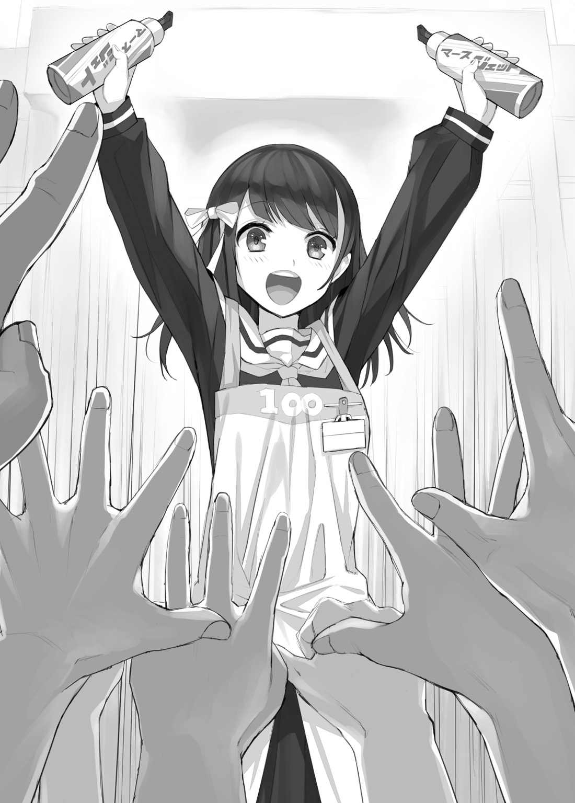
よし、俺も負けてられないな。
値段は高騰し過ぎだと思うが、それだけこの街の住人にとってベルゼバブを退治したということが衝撃だったのだろう。それに、ベルゼバブに効果があることは嘘でない。
そう考えればこの盛り上がりも納 得 できる。
「ベルゼバブに効く殺虫剤はこちらですよ！ いらっしゃいませ！」
俺はまつりに負けないように声を張り上げる。
最初はトラブルに見 舞 われたが、その後は滞 りなく殺虫剤を売ることができた。
「結構、儲かったな」
「やったね、あーにぃ」
結局、九本の殺虫剤すべてが10 万ゴラン近い値段で取引成立してしまっていた。高値で売れたことを喜ぶ俺とまつりだが、エリューシカは浮かない顔をしていた。
「あの、勇者様。先ほどは本当に申し訳ありません」
エリューシカが頭を下げる。どうやら、さっき殺虫剤を落としたことを気に病 んでいるようだ。
「いいさ。気にするなよ。誰だって初めてはそんなもんさ！ 自分のペースでやればいいよ」
「そうだよ。まつりたちの世界では『焼け石の上に三年』ということわざがあってね」
「ただの拷 問 だそれ！」
正確には「石の上に三年」だ。
「......『泣 きっ面 に鞭 』、『年寄りに冷や水』ということわざがあってね」
「全部違 う！」
「......勇者様の世界は恐ろしいですね」
ますます誤解されているぞ。
「だいぶ間違ってるけど、まつりが言いたいのは要するに頑 張 ろうって意味だと思う。お店で働くのは初めてなんだからあまり気にするなよ」
俺はエリューシカに向かって親指を立てる。
「え、どうして初めてだとわかったんですか？」
エリューシカは目を見開いて驚 きの声を上げる。
「その爪を見ればわかるよ」
綺 麗 に切 り揃えられて魔 術 的 な意味がありそうな装 飾 が施 された爪 だ。そんな爪で手作業をする人はあまりいない。手だけで判断しても販 売 員 みたいことをしたことがないのだろうというのがよくわかる。
「す、すごいです！ 爪を見ただけでわかってしまうなんて！」
エリューシカが感激したように俺を見つめる。
「いや、なに。たいしたことはないよ」
「１００ ！」で勤めていた経験が生きただけだ。
俺たちが話していると、なぜか街の人々が次々と集まってきた。
「街を守って下さったのは勇者様だとか！」
「しかも、兵士たちにあんな素 晴 らしいものを売って下さるなんて」
「変な研究ばかりしていると思っていたのに。さすがはサイード家のご令 嬢 だ」
口々に感謝する街の人々に俺たちは照れ笑いを浮 かべる。
「は、ははは。い、いや、当然ですよ」
「１００ ！」の商品がこんなに求められたことは今までなかった。まして、感謝されるなんて。
最初は魔 王 を倒すなんて無理だと思った。だけど、ベルゼバブのように魔王にも弱点があるなら、倒せるかもしれない。
なんだか自信が湧 いてきた。
「えへへー。自 慢 のお兄ちゃんだもん。子供の頃 から何でも出来たんだよ。もう本当に同じ血が流れているかわからないよ。確実に産地偽 装 だよ！」
「それいい意味じゃないよな！」
同じメイドイン譲原家だろうが。
「でも、これからどうしようー？」
「そうだなー」
俺とまつりが困っていると、街の人々が俺たちを取り囲む。
「良かったら、うちに来ませんか？ うちの孫 娘 はなかなかの器量でしてね」
「いやいや、うちに是 非 」
「こちらにも！」
どうやら、俺たち――というよりも俺に泊 まって欲しいようだ。
「うちの娘はかなりの美人ですよ。胸なんか、もう、カドゥケウス並み！」
おっさんが下 卑 た笑 みを浮かべつつ、自身の胸に両手で曲線を描 く。
なんだよ、その胸。異世界の単語で言われてもいまいちピンとこない。
「うちの娘なんて尻 が安産型！ もうぽこぽこ産めますよ」
白 髪 の老人が俺に耳打ちをする。
「え、いや、そんな子供を産めるなんて言われても困るから」
清い心の持ち主である俺は簡単に顔がやかんのように熱くなる。興味がないとは言わないが。
「ま、待って下さい！ これからすぐに私と勇者様たちは王女様に謁 見 する予定ですから、誰かの家に泊まれません！ 駄 目 ！ 絶対！」
エリューシカが頭の上で腕 をクロスさせて街の人々に宣言するように声を張り上げる。
「王女様のところに？ ......ひょっとして、聖 剣 に挑 まれるのですか？」
街の人々の中で一 際 高 齢 の老人が納得したように言う。
「聖剣？」
なんだか凄 そうな単語が出てきたな。
「聖剣というのは王室で管理されている伝説の武器のひとつです。一説によると、神話の時代にロード・ドラゴンから世界を救った英 雄 ダイナソーが使ったもので、どういう訳か今はとある村の大きな岩に突 き刺 さっています。なんでもその剣を抜 いた者は、伝説の勇者を継 ぐ存在になれるとも、新たな災 厄 を引き起こすとも言われています」
勇者か災厄か。評価が両 極 端 だな。強すぎる力は災厄を生むってことか？
「これまで多くの兵 が剣を抜こうと挑みましたが、成功した者は誰もいません。でも、勇者様ならば、きっとそれを抜いて魔王を倒すことができます！」
エリューシカが丁 寧 に教えてくれる。
「では、行きましょう」
エリューシカが俺の手を取る。
「ちょ、ちょっと待ってくれ。俺みたいな一 般 市民がそう簡単に王女様に会えるわけないじゃないか」
「大丈夫です。こう見えても私は宮 廷 魔 法 使 いです。それに私の実家であるサイード家はルーフ王家と懇 意 にしているので、謁見が自由に許されています」
「いや、でも」
王女様と会うなんて気 後 れしてしまう。とはいえ、こうしていても仕方ないし。
街の中央に立つ中世に出てくるような白 亜 の城を見つめる。
「......わかった」
覚 悟 を決めて俺は了 承 する。
「では、馬車を呼びますね。ちょっと待っていてください」
そう言ってエリューシカが街のほうに駆 け足で急ぐ。
「でも、あーにぃ、店はどうするの？」
「さすがに誰か残ってないとまずいよな」
「ふむ。それなら、この場所の警備は私たちにお任せください」
そこに剣や槍 を持ち武装したバンクと配下の兵士たちがやってきた。
「え、でも、いいんですか？」
「もちろんです。このまま何もしないというわけにはいきませんからな」
俺の問いにバンクは鷹 揚 に頷 く。
「それは助かります」
「......すごい、熊 野 プーがいるー」
まつりはバンクの腕の毛皮を無造作に掴 む。
「お、おい！ まつり！ やめろって！」
「すごい出来だねー。うーむ。これはキャストも力入っているねー」
「ははは！ 獣人を怖がる者も多いというのに、さすがは勇者様の同行者ですな！」
「そうだ！ 蜂 蜜 が店にあるから、それあげるねー。ちょっと待っててー」
まつりはきびすを返して店の中に入っていく。
「ハチミツとはなんでありますか？ 勇者殿 」
「えっと、蜂の蜜を集めたもので、蜂っていうのは――」
まつりがその手に小さな瓶 を握り締 めて戻ってきた。
「別に蜂蜜は蜂蜜でしょ。はい、どうぞ。これを舐 めるのが好きなんだよね」
まつりが蜂蜜と書かれた瓶を開けてバンクに手渡す。
「ほう、これがハチミツでありますか。変わった色と匂 いですな」
バンクが瓶の中に手を突っ込む。
「じゃあ、少し頂きますぞ。......こう見えてもエリューシカさんに負 けず劣 らず食通でしてな。......ちょっとやそっと――ンマァァァァイ！」
バンクが蜂蜜を舐めた瞬 間 、震 えながら叫 ぶ。
黒毛で覆 われた手で蜂蜜を何度もすくって舐めるバンク。
「蜂蜜を気に入ってくれたみたい。よかったー」
「気に入ったというより、なんか依 存 症 っぽいんだけど」
一心不乱に蜂蜜を舐めるバンクを見ていると、余計なものを与 えてしまったんじゃないかと不安になる。
すると、幌 が付いた四人乗りくらいの馬車が街のほうからやってくる。御 者 は俺たちの前で馬車を止めた。
「勇者様、お待たせしました。これを使ってお城に向かいましょう」
馬車の中からエリューシカが顔を覗かせる。
「ば、馬車に乗るなんて初めてだ」
恐る恐る馬車の中に入る。そこは木の椅 子 が二対並べられているだけの簡素なつくりだった。
俺が椅子に座ると、続いて「１００ ！」のいろんな商品を抱 えたまつりもやってくる。
「な、なんでそんなものを持ってくるんだよ！」
「えへへ。殺 虫 剤 があんなにいっぱい売れたから、きっと他の物も城の人に色々と売れると思って」
どうやら商売欲が出たようだ。
「売れなかったらまつりたちがあとで食べるから、食べ物系をもっと持っていこうっと。もうすぐお昼だもんね。あーにぃ、もうちょっと奥 に詰 めてよ。他にもいっぱい入れるから」
まつりは床の上に抱えた物を置くとまた店の中に入っていく。
一体、どれだけ売るつもりなんだ。
兵士は手を額に当てて敬礼すると、店の前で門番のように立つ。
帰るための手段は魔王を倒すこと。ベルゼバブが倒せたんだから、魔王だって倒せる可能性はあるはずだ。
しばらくは１００円ショップ店員兼 勇者でいることになりそうだ。
おねえさまはさいきん、おとうさまとふたりでなにかをなやんでいるみたい。
へいしがたりないとか、たこくにせめられるといっていたわ。
かわいそうなおねえさま。
「ねぇ、おねえさま。あとでおとうさまとわたしのへやにきて。すごいものをみせてあげるわ」
でも、だいじょうぶ。
わたしがかいけつするの。
そうしたら、きっとほめてくれるわ。
ヴァーミアン暦 ２５４８年・双 子 の月・４日。
＊
一時間ほどかけて城に続く丘 の道を進む。近づくにつれて白亜の城は重圧感を増していき、その存在感に圧倒されてしまう。
堀 に囲まれた大きな城門、遠くまで見わたすことが出来る複数の尖 塔 、砲 丸 すらも防いでしまうような城 壁 。王の居城というよりも戦 闘 の拠 点 となる要 塞 に近い様相だ。
馬車は五メートルほどの高さをした城門の前に止まる。
「着きました、勇者様」
俺 とまつりは、荷物を大きめのレジ袋 四つに詰めて馬車から降り、思わず城を見上げる。
「すごいな......。中世の要塞って感じだな」
「そうだねー。すごいねー。ネズミの国のお城ってこんな感じなんだねー」
まつりも俺と同じように感 嘆 の声を上げる。
「ネズミの国の城ってこんなに物々しくないだろ」
俺がまつりに突っ込みを入れる。これから王女と謁見だというのに、俺はポロシャツ姿、まつりは学生服の上にエプロンをつけた姿のままだ。ほかにちゃんとした着 替 えもないのだから仕方がないのだが。
「勇者様、こちらです」
城門の横にいた兵士といつのまにか話をしていたエリューシカが俺たちに向かって手招きをする。
「あ、ああ」
「おじゃましまーす」
俺は恐る恐る、まつりはまるで友達の家に入るときのように物 怖 じせず城門をくぐり抜ける。心なしか、兵士が俺を見る目が輝 いて見える。エリューシカは兵士になんて説明したのだろうか。
城門の先には更 に石 畳 の道が続いており、その先には大きな城と荘 厳 な玄 関 、それを守る二人の兵士が見えた。
俺たちが玄関に着くと、二人いた兵士の内の一人が扉 を開けてくれる。
「ここからは私が案内いたします」
扉を開けた兵士が手を額に当てて敬礼する。それに対してエリューシカも敬礼を返す。
幅 が六メートルくらいの広い通路を案内役の兵士、エリューシカ、俺、まつりの順で縦一列となり、ひたすら歩く。所々で斧 を持った兵士や、馬ごと斬 るような大 太 刀 を持った獣 人 と遭 遇 するため、ここが異世界であることを意識してしまう。
城の中は通路が無数に枝分かれしており、案内役の兵士がいなければ、間違いなく迷っていただろう。
「随 分 と中は大きいねー。まるで迷 路 みたい」
まつりが自分の身長よりもかなり高い天 井 を見上げて呟 く。
「ルーフは小国で、常に他国やモンスターの脅 威 に晒 されてきました。ですので、このお城は賊 を惑 わせるような造りになっています」
なるほど。国王にたどり着くのを遅らせる目的なのか。
「意外と文官みたいなのは少ないんだな」
さっきから見ていると兵士ばかりで、武装していない人があまり見当たらない。
「本来ならば、お城の中はもっと官 僚 が大勢いるんですよ、でも、戦争の影 響 で国王が病気療 養 になり、多くはいっしょに安全な場所に退 避 してしまいました」
そういうことか。でも、いくら病気だからって逃 げていいのだろうか？ 兵士たちはかなり士気が下がっていそうだな。
やがて、四メートルほどの大きな扉が見えてくると、エリューシカが立ち止まって振 り返 る。
「この先に王女様がいらっしゃいます。王女様は他国に関しては比 較 的 、寛 容 な考えをお持ちです。ですが、今は戦時中なので疑 り深 くなっています。言動には気をつけてくださいね」
「ああ、わかった。向こうからすれば、俺たちは怪 しい異 邦 人 だからな」
俺の言葉にエリューシカはホッとしたような表情を見せる。
「宮廷魔法使いエリューシカ様の謁見です！」
案内役の兵士が声を張り上げる。すると、扉がゆっくりと内側から開かれる。
扉の中には体育館くらいの巨大な空間が広がっていた。
天井は通路と比べものにならないほど高く、三階建てのビルほどの高さがある。上の方には採光用の窓が備え付けられており、電気がなくてもそれなりに明るい。真っ白い大理石の床 には赤い絨 毯 が真 っ直 ぐ延 びていた。
ここが謁見の間というやつだろう。
赤い絨毯の両 脇 には合わせて二十人ほどの真っ白な西洋甲 冑 を着た近衛 兵 たちが整列しており、俺たちに厳しい視線を向ける。どうやら、近衛兵だけあって今までの兵士とは違い、俺たちを警 戒 しているようだ。
案内役の兵士を置いて、エリューシカは絨毯の上を進む。俺とまつりも慌てて追いかける。
「宮廷魔法使いエリューシカ・サイード！ 参りました！」
赤い絨毯の中 程 まで進むと、エリューシカが跪 き、声を張り上げる。
絨毯の奥は他の場所よりも一段高くなっており、大男がゆったり座 れるくらいの巨大な玉座が置かれて、両側に二人の兵士がいた。
その玉座は肘 掛 けや背もたれ、椅子に至るまで全 て黄金の装飾が施されており、見るものを萎 縮 させる。
そこに座っているのはひとりの美しい女性だった。
「よく来たのぉ、エリューシカ。勇者召 喚 の任、ご苦労であった」
――妖 艶 な声だ。
バラのような装飾が施された大きめのドレス、栗 色 の長い髪 、豊満な胸、見る人を惹 きつける大きな赤い瞳 、頭の上には煌 びやかなティアラ。まさにファンタジー世界のお姫 様 、そのままだ。パッと見た感じは俺よりも五つ以上は年上に見える。
「あーにぃ、まつりたちは日本人として土下座とかしたほうがいいのかな？」
まつりがこそこそと近づき俺の耳元で囁 く。
「いや、みんなと同じでいいんじゃないか？」
俺はまつりに囁き返すと、手に持ったビニール袋 を脇 に置いてエリューシカと同じように跪く。
「妾 がルーフの王女リアン・ビークアイデン・フォン・ルーフじゃ。現在は戦争のせいで病に伏 した父の代理で国を治めておる」
王女様――リアン王女が鷹揚に名を告げる。
「ふわー。格好 いい名前ー」
まつりはリアン王女の名前に小さな声で感嘆を示す。
「王女様、こちらが勇者のユズハラアキウミ様です。そのお隣 の方はその妹様のユズハラマツリ様です」
誇 らしそうにエリューシカが俺とまつりを紹 介 する。
「は、初めまして。譲 原 秋 海 です」
「こんにちはー。譲原・ジェネラル・まつりです」
「なんか将軍みたいになってる！ なんで対 抗 しちゃったの!? 」
「ごめんね。譲原家の先祖の血が王家の血筋に対抗して目覚めちゃったよ。それでついエンペラータイムになっちゃったよー」
「そんな血統じゃないから！」
「ユズハラ・アキウミにユズハラ・ジェネラル・マツリ。ふむ、聞いたことがない響 きの名前じゃのぉ。文字はどう書くのじゃ。おい、お前たち、インクと羊皮紙を――」
俺の提案にリアン王女は手を叩 き、兵士を呼ぼうとする。
「あ、それなら大 丈 夫 です。手帳はいつも持っているようにしていますから」
「何を言う。そなたは何も持って――」
俺はポケットから手のひらサイズのシステム手帳とペンを取り出す。
仕事上、俺もまつりもメモを取ることが多いため常に携 帯 している。
譲......原......秋......海......。さらさらと手帳に名前を書き込む。なぜか異様に場がざわめく。顔を上げると兵士たちが俺を見て何かを囁き合っていた。
......一体、どうしたんだ？
まつりも同じように手帳を取り出 してさらさらと自分の名前を書き込む。
「できたよー」
「これが俺たちの名前です」
まつりと俺はシステム手帳のページをリアン王女に見せる。
「まさか、その細い棒でお主はこの文字を書いたのか？」
リアン王女は興 味 津 々 な様子で聞いてくる。
細い......ああ、ボールペンのことだな。
インクとか言っていたくらいだからな。こういうボールペンを見るのも初めてなのだろう。
「はい、そうです」
「なんじゃと！」
リアン王女は身を乗り出して驚く。
「これはね、ボールペンとシステム手帳なんだよー」
俺が言う前にまつりがリアン王女の質問に答える。
「ボールペン？ それがペンなのか？」
「ディス！ イズ！ ア！ ペン！」
まつりが胸を張る。その英語を初めて日常で使っている場面を見た。
「むむ、もう我 慢 できん！」
リアン王女が耐 えきれずに席を立ち、こちらに向かってくる。一 瞬 で場がざわめき立つ。
「落ち着け。ちょっと見るだけじゃ！」
リアン王女の一 喝 に場が静まる。
「ユズハラアキウミとやら、それを妾に見せてくれ」
「はい。どうぞ」
差し出されたペンをリアン王女は受け取って、まじまじと観察する。
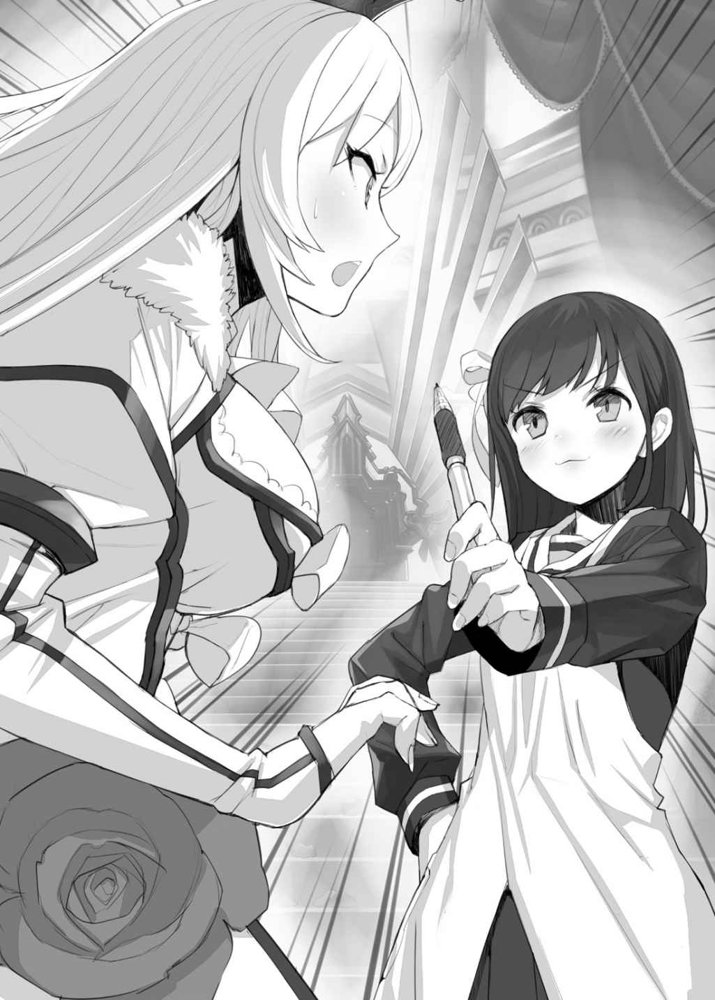
「すごいのぉ。これは驚いたのぉ」
よく見れば、リアン王女だけではなく、周りの兵士たちも物 珍 しそうにしている。
それにしても近くで見れば見るほど美人だ。
「なんじゃ？」
黙 って見とれていると、視線に気づいたリアン王女が俺に問う。
「す、すみません。なんでもありません」
慌てて俺は視線を外す。
「こっちだとペンって珍しいの？」
まつりがエリューシカに聞く。
「い、いえ、ペン自体はあるのですが、私たちの世界ではインクに浸 して使うものが普 通 です」
「良かったら、王女様、このペンをお譲 りしましょうか？」
「よ、よいのか!? 」
まつりの提案にリアン王女が食 らいつく。
「今回、ご紹介するのは『１００ ！』のボールペンよ。たっぷりインクが入っているからすっごく長持ちするの」
まるで外国の通 販 番組のような露 骨 な持ち上げだ。
「ワーオ、本当かい？ マツリ」
俺もまつりの台詞 にノってやると、まつりは目を輝かせる。
「ええ、そうよ、オータム・シー。普通に使っていれば、補 充 なしで三ヶ月は使えるわ。これが今なら10 万ゴランのところをなんと５万ゴラン！ 今だけ！ 今だけです！」
高っ！ というか、俺のだから売るなよ。でも、日本円にすれば５万だからな。さすがに売れな――。
「物 凄 く安いではないか！ まさか、10 万ゴランを５万ゴランまでまけるとは！ よし、買った！」
......売れてる。王族だから５万なんて安いものなのか？
リアン王女は上 機 嫌 でボールペンを眺 める。
「こんな素晴らしいものを持っているとはのぉ。やはり、その者たちが異世界からやってきたということか？ 楔 の腕 輪 による実験が成功したということじゃな？」
エリューシカの言っていたとおり、リアン王女が召喚を命令したようだ。
「はい。ただ計算違いで勇者様がいらっしゃった道具屋の建物ごと呼び寄せてしまいました。まつり様はその建物内に偶 然 おられたのです」
「ほう。それは面 白 いのぉ」
リアン王女は興味深そうに身を乗り出す。
「異世界の道具屋なら、強力なモンスターを倒 せる道具もあるのじゃろう？」
「はい。すでに勇者様は不思議な道具を使ってベルゼバブを倒しました」
「ほう！ あのベルゼバブをか!? あのモンスターは一匹 で小さな村を滅 ぼすことができるとさえ言われる手ごわいモンスターじゃぞ！ むむ、なるほど。先ほどのボールペンといい、ベルゼバブを退治したことといい、さすがはエリューシカ！ よくぞ勇者を召喚してくれたぞ」
リアン王女がエリューシカを手放しで褒 める。
「ありがとうございます。それで魔王を倒すために聖剣ダイソー・ドに挑む許可を頂きたいのですが」
エリューシカは顔に喜色を浮かべる。
「ダイ・ソード......か」
なんとなく格好いい名前だな。
「勇者様、正確に言えば、ダイソー・ドです」
......なんか一気に１００円ショップみたいな感じになった。
「魔王を......倒す」
ふと、リアン王女が遠い目をして、つぶやく。
『魔王』という言葉を聞いて、何か思い出したのだろうか？ ぼんやりと髪の毛 をいじりはじめる。
「......どうかしましたか？」
「あ、いや。......あやつを倒すにはあの剣の力が要 じゃからのぉ」
リアン王女は我に返ったように答える。
『魔王』という語を『あやつ』と言 い換 え、『倒す』と言うのに少し間があった。
何だろう？
「そんなにすごい力があるんですか？」
俺の質問にリアン王女は頷く。
「うむ。真 偽 は定かではないが、あまりにも強力すぎて誰 もまともに扱 うことができず、封 印 されたとも言われておる」
「岩を壊 して剣だけを取り出せないの？」
「その岩は一 切 の魔 力 や打 撃 を受け付けないのじゃ。これまでも名うての戦士や魔 法 使 いが色々な方法で抜こうとしたが、全く抜けなかったのじゃ」
まつりの素 朴 な疑問にリアン王女がため息を吐 いて答える。
魔法を使っても抜けないのに俺が抜けるものなのか？ 全然、自信ないんだけど。
「しかし、見たことがない道具を扱うお主たちなら、剣を抜くことも出来るかもしれん」
「ところで、王女様。魔王ってどういう格好してるの？ たとえば、中年で小太りとか。二十代～四十代くらいで黒いパーカーを羽織っているとか。全身黒タイツとか」
「まつり、それ、なんか犯人像みたいになってないか！」
でも、まつりが言うように魔王の情報が全くない。
魔王は無数のモンスターを操 り、このルーフに攻 めてくる。現状、情報はそれくらいだ。
「現状、あやつのことは誰も知らない。半年前、モンスターの使者がやってきて国王に宣戦布告したらしいのじゃ」
リアン王女は話を終えると自分の髪の毛の先に触 れる。
癖 だろうか。「１００ ！」のバイト経験から培 った俺の人間観察力が、微 妙 な違 和 感 を告げる。
「あの、失礼ですが本当ですか？」
俺は再びリアン王女に問う。
「当たり前じゃ」
リアン王女が断言する。その瞳をまっすぐにこちらに合わせてくる。
あくまで経験則だが、嘘 をつくとき男性は視線をそらすが、女性は目を合わせる傾 向 が高い。
リアン王女は少し落ち着かない様子で、再び毛先をいじっている。
ちょっと怪しいな。
とはいえ、ここで嘘を糾 弾 しても証 拠 がない以上何も出来ない。むしろ、追い出されてしまうかもしれない。
「すみませんでした」
頭を下げて謝罪する。
「件 の剣はここより、山を二つ越 えた先のポルカ村にある」
なんだか話を急 かしているような気がする。それよりも――。
「や、山二つ......」
俺は呆 然 と呟く。自動車も整備された道もない世界だ。徒歩で進んだ場合は何日か掛 かるかもしれない。しかも、モンスターがいるこの世界で山を越えるなんて。
「大 丈 夫 じゃ。安全な移動手段を用意しておる」
俺は、空を飛んでいたドラゴンを思い出す。
「あの飛 竜 のことですか？」
「いや、違う。あれはこの国のものではないからのぉ。自由に使うことはできぬのじゃ」
それは残念だ。空を飛べればすぐなのにな。
「飛竜ほどではないが、我 が国 のとっておきじゃ」
「ありがとうございます！ リアン王女様」
エリューシカがリアン王女に頭を下げる。
「ダイソー・ドを抜くための許可書も発行しておこう」
「上 手 くいきそうだね」
「そうだな」
まつりは俺の耳に口を近づけて小声で話す。
「お待ちください！」
そこにリアン王女の傍 に仕えていた兵士が玉座の前に跪いて進言する。
「ダイソー・ドの許可書は真の勇者に渡 すよう国王から命令されております！ あのボールペンというものは大したものではありますが、あれだけで勇者と断定するのは早計ではないでしょうか！」
その兵士の一言で他の兵士たちがざわめく。
「そういえば、王都を襲 ったベルゼバブは本物だったのか？」
「近衛兵が現場に行った時にはすでに全 滅 していたらしいな。現場にいたのはバンク隊長の部隊だけだ。彼 らが倒したんじゃないか」
「そうかもな。それか何か別のモンスターの死 骸 をベルゼバブだと偽装したんじゃないか？」
囁きは徐 々 に兵士たちの間に広まり、嫌 な雰 囲 気 が流れる。
「......これだから国王派は。国王から許可を得たとはいえ、大量の魔力石を使ったのが気に食わないようじゃのぉ」
リアン王女が小声で呟く。
「そんな！ でも、勇者様は本当の勇者様です」
エリューシカは必死で反論する。
「お主の意見はわかった。下がれ」
リアン王女の一言で、進言してきた兵士は頭を下げてもとの位置に戻 る。
エリューシカが悔 しそうに拳 を握 りしめる。
「確かにあのボールペンという品は素晴らしいものじゃった。しかし、兵士たちの言うことにも一理ある。秋海......といったな。そなたが勇者であるという証拠はあるかのぉ」
リアン王女は『さぁ、どうするのだ』と言うように挑 発 的 な目で俺を見る。
いやいや、そんな見 え透 いた挑発にはのらない。冷静さを欠いて相手のペースにのってしまえば、ロクなことにはならないからな。
そう決めてはいたが――。
「エリューシカ様の自作自演では」「他国からのスパイという話も」「所 詮 は魔法使い――」
くそ！ あいつら、好き勝手に言いやがって！
「それならば、誰も見たことがない魔法をお見せすることができたら、自分を異世界から来た勇者として認めて頂けますか？」
反射的に俺は立ち上がって周りに宣言する。
「ゆ、勇者様！」
エリューシカは驚 いて俺を見つめる。俺はエリューシカに対して安心させるように頷いて応じる。
勝算はある。幸い、城の人たちに売るために持ってきた商品は、どれもこの世界にはなさそうなものだ。
商品の中で一番、簡単にできる魔法みたいなものといったら――あれしかない。
「無礼な！」
俺の態度に怒 った兵士たちが剣の柄 に手をかけて踏 み込 む。
「よい！」
しかし、リアン王女の一喝で兵士たちは柄から手を下ろして引き下がる。
「ふふ、大 胆 な発言じゃ。妾はここでお主を処 刑 することもできるんじゃがのぉ」
リアン王女はあえて冷たい態度を取ることで俺たちの気骨を試 しているようにも思える。ならば、上手く立ち回ることができれば、周りの兵士たちも納 得 させられるかもしれない。
「この世界の王族は異世界の者に対して心が狭 いんですね」
言い過ぎたかなと思ったが、つい口から零 れ出た。場の空気が一気に緊 迫 感に包まれる。
「くくく、面白いのぉ」
しかし、意外にもリアン王女は楽しげに笑う。
「この場で妾が進言を無視した場合、妾は異世界の人間族の言葉を聞き入れない蛮 族 の王と笑われるわけか」
これは一種の賭 けだ。リアン王女を見て気づいたのだが、彼 女 はどんな場合でも背筋をピンとのばして僅 かに胸を張っている。これは自信の表れだ。それに会話の中でも王族としての誇りを端 々 に感じた。それならば、俺の言葉は無視できないだろう。決して負けるような賭けじゃない。
「約束しよう。妾が見たことがない魔法を見せてくれたら、お主を異世界の勇者として認めよう。お主らもそれでよいか!? 」
リアン王女が立ち上がって兵士たちに問う。
兵士たちはそれぞれ頷いて応じた。
場が収まったのを見てリアン王女は俺に目配せをする。
おそらくリアン王女は俺の勇者としての気質を探 ると同時に、こういう展開になることを見通して挑発したのだろう。
「すごい、勇者様。王女様と対等に渡り合 うなんて」
エリューシカが俺を尊敬の眼 差 しで見つめる。
「では、これから魔法をお見せしましょう。これはわずかな時間で誰も見たことのない料理を作り出す魔法です。えっと、その前に桶 一 杯 にお湯を沸 かしてくれますか？」
俺は料理漫 画 の主人公のような台詞を吐 く。それを受けてリアン王女が不敵な笑 みを浮 かべる。
「うむ。侍 女 に湯を沸かすように言ってこい！」
リアン王女は俺たちの両脇にいた兵士たちにも声をかける。
「は！ 御 意 に！」
兵士たちは敬礼をして退室する。しばらく待っていると、バケツくらいの大きさをした鉄の桶を持って兵士たちが戻ってくる。目の前に置かれたそれの中を見ると、焼き石が入っていて、ぐつぐつ煮 たっている。
「準備は整ったようじゃ。やってみるがよい」
リアン王女の許可に俺は立ち上がる。
「はい」
その場にいた全員の視線が俺に集中する。
そばにあったレジ袋に手を入れて取りだしたのは――。
「なんじゃ、それは」
リアン王女が呆 気 にとられたように呟く。エリューシカや兵士たちも訝 しげな表情をする。
「これこそ我が魔法――カップラーメンです！」
掲 げたのは元の世界ならば、どこにでもあるカップラーメン。
魔法といったら、三分で料理が完成するこれしかない。
俺は柄 杓 のようなものを持ち、鉄 桶 のお湯を汲 む。
「１００ ！」三分クッキング。
材料・カップラーメン（１００円）・お湯。
カップラーメンの蓋 を開ける。お湯を注ぐ。蓋を閉める。腕 時 計 で三分計る。
待っている間、その場にいた全員が緊迫した面 持 ちで、何もせず待っているだけの俺を見守る。そして――。
「できました」
本当はお好みで刻みネギや卵、七味を入れても美 味 い。しかし、今回は入れるものが何もない。俺はリアン王女にできあがったカップラーメンとプラスチック製のフォークを渡す。
「お湯をかけただけの料理じゃと。貴様、妾を舐めておるのか？」
リアン王女が俺を睨 みつける。謁 見 の間に緊迫した空気が流れる。
「お、王女様！ どうか勇者様を信じて下さい！」
「む、むう。エリューシカが言うなら」
リアン王女は兵士からカップラーメンとフォークを恭 しく渡されると、恐 る恐る蓋を開ける。瞬間、湯気が上がり、ラーメンの香 りが広がる。
「むぅ！ なんとも香 ばしい匂いじゃ。とてもお湯をかけただけの料理とは思えぬ！」
リアン王女は麺 をフォークで巻いて食べる。
「む、これは」
リアン王女の表情が変わる。もしかして、口に合わなかったか？
一瞬、心配するが。
「美味いのぉ」
リアン王女は目を見開いて笑 顔 を見せる。
「ルーフにない変わった味じゃ。むぅ、お湯をかけただけでここまで濃 厚 な味が出るとは。まさに魔法の所業よ」
いえ、化学調味料です。
リアン王女は感心しながらも麺を巻く手は止まらない。
そのとき、どこからかくぅーという音が聞こえた。音がした方向に視線を移動すると、エリューシカが顔を赤くして恥 ずかしそうに俯 いていた。
エリューシカだったのか。
「その、エリューシカも......食べる？」
俺が提案すると、途 端 にエリューシカの目が期待に輝く。
「い、いえ、そんなわけには......！ わ、私はお腹 いっぱいですから」
しかし、すぐに自制心を取 り戻したエリューシカは悲しみを堪 えるように視線を逸 らす。
「ふむ、秋海。エリューシカの分も作れるか？」
エリューシカを見て苦 笑 したリアン王女が問いかける。
「はい、大丈夫です」
持ってきたカップラーメンはまだ十分ある。エリューシカの分くらいは作ってしまって大丈夫だろう。
「そ、そんな王女様。私は別に」
「よい。これは命令じゃ。エリューシカの分も作れ！」
リアン王女が食べ終わり、空となった容器を見せる。
「はい。わかりました。命令ならしょうがないですね」
俺は苦笑しながら、カップラーメンにお湯を注ぐ。
「あ、ありがとうございます！ 勇者様！」
エリューシカが今まで見たことがないほどの笑顔でお礼を言う。なんかベルゼバブを退治したときよりも喜んでないか？
三分経過――。
「エリューシカのカップラーメンが出来ました」
出来上がったカップラーメンをエリューシカに手 渡 す。
「で、では、頂きます」
エリューシカもリアン王女を見習い、兵士から受け取ったフォークで器用にカップラーメンの麺を巻いて食べる。
「......おいしぃ～～」
頬 を赤くしたまま目がとろんとして色っぽいエリューシカがカップラーメンを食べる。
「芳 醇 かつ濃厚な味わい......まるで陽光が降り注ぐスコッティ川の流れのよう。それに絡 みつく麺は舌の上で交じり合い渾 然 一 体 となります！」
一口食べるごとに舌 鼓 を打つ。熱いカップラーメンのせいで額から流れた汗 で髪は肌 に張り付き、まるで湯上がりのような色気を醸 し出している。
「おぉ、底なしの胃 袋 と名高いエリューシカの詩じゃ！ これは相当、美味いときにしか出ないものじゃぞ！」
「ゆっくり食べたいのに、つい掻 き込んじゃいます！」
エリューシカがカップラーメンを美 味 しそうに食べる姿に、その場にいた全員がごくりと唾 を飲む。
やがて、エリューシカは麺を食べ尽 くしスープを啜 る。
「幸せでしゅ......」
カップラーメンのスープを飲み終えたエリューシカが息を吐く。
「......あーにぃ、まつりも食べたいな」
まつりが物 欲 しそうな目でこちらを見つめる。カップラーメンの匂 いが充 満 しているため、俺もお腹が空 いてきた。まつりの気持ちもわかる。
「秋海！ 妾はおかわりじゃ！」
「ゆ、勇者様。出来ましたら、私にも......。む、無理なら別に」
「大丈夫だ！ 任せてくれ！ 何人分でも作ってやるよ！」
俺は気前よく引き受ける。すると、周囲から突 き刺 さるような視線を感じた。目を向けると、兵士たちがよだれを垂らして俺を見つめている。どうやらエリューシカのグルメリポーター並みの演説を聞いて、お腹が空いてきたようだった。
「ほう、何人分でも、ということは兵士たちの分もかのぉ」
「う、それはさすがに手持ちの分では足りません」
「でも、あーにぃ。馬車に行けば、在庫まだあるよね」
「それはそうだけど......」
期待するような視線が向けられる。
「わかりました。持ってきますよ！」
その瞬 間 、兵士たちは腕 を振り上 げて場が沸き立 つ。
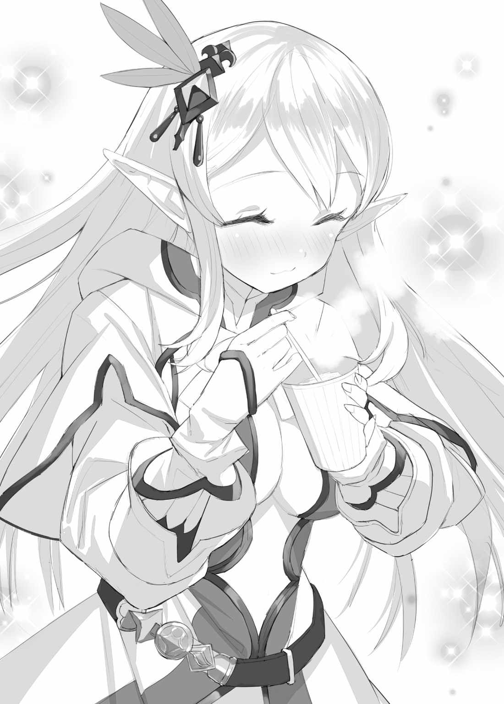
俺 は馬車からカップラーメンを持ってくると、兵士たちに振る舞 い続けた。
「うむ。妾は満足じゃ！」
上品に口をハンカチで拭 ったリアン王女の横にはカップラーメンの空容器が三つ重なっていた。
「お、終わった」
全てのカップラーメンを作り終えた俺は座り込む。
「あ、ゆ、勇者様、すみません」
慌 てて謝 るエリューシカの周りにはカップラーメンの空容器が五つ散乱していた。
「うぅー、まつり、もうお腹いっぱい」
そして、まつりと兵士たちも酒 瓶 やカップラーメンの空容器を手に満足そうにしていた。
まつりめ。さりげなく兵士たちに交ざってカップラーメン食べやがって。
「秋海よ」
やがて、リアン王女が俺に向き直る。
「お湯だけであれほど見事な料理を作ることができるとは。あんな魔法は見たことも聞いたこともない。天晴 れじゃ」
いや、１００円のカップラーメンなんだけどな。
「お主は紛 れもなく異世界から来たりし勇者じゃ。この者を勇者であるとリアン・ビークアイデン・フォン・ルーフが認める。お主たちもそう思うじゃろう!? 」
リアン王女の言葉に兵士たちから賛同の声が上がる。
「あ、ありがとうございます！」
リアン王女の一言に俺は頭を下げて礼を言う。腕が疲 れるまでカップラーメンにお湯を注いだ甲 斐 があるというものだ。
「よかったね、あーにぃ！ あーにぃはまつりが育てたんだよー」
まつりが胸を張る。
「え、そうなんですか。さすがはまつり様！」
「逆だろ！」
思わず俺はまつりにツッコミを入れる。
「妾はお主たちに懸 けておる。頼 んじゃぞ」
「はい！ お任せ下さい！」
リアン王女の前でエリューシカは頭を下げる。
正直、魔 王 と戦いたくないんだけどな。
「それとエリューシカたちは後で妾の自室に来てくれ」
ここで言えばいいのに、何の用だろうか。
「はい、かしこまりました」
「では、下がれ」
リアン王女が立ち去り、謁見は終わりを告げた。
謁見の間から出るとエリューシカは俺たちに向き直る。
「勇者様、それではリアン王女の部屋に参りましょう」
「え、王女様の部屋が見られるの!? やったー！ シンデレラ城の奥 って見てみたかったんだー。奥に行けば、徳 川 の十五代の将軍が合体して出てくるよねー」
まつりが両手を挙げて喜ぶ。
「え、シンデレラ城なんだからシンデレラ出てこいよ」
思わず『将軍合体！ ゴー！ トクガワ！』と叫 んで、合体する徳川の十五代の将軍を想像してしまった。
「す、すみません、そういったものは出てきません」
「いや、出てこなくて当然だから！」
エリューシカに案内されて、城の奥に進む。その途 中 では二人の兵士が槍 を持って立っていた。
「エリューシカ様、リアン王女様が既 に自室でお待ちになっております。どうぞ、お通りください」
兵士たちが道を空ける。
「わかりました」
そこから更 に先を進むと、角の生えた馬のようなものが描 かれた白いドアを発見する。
「リアン王女様、宮 廷 魔 法 使 いのエリューシカです」
「うむ。入れ」
「失礼します」
俺たちはリアン王女の自室に入室する。中は二十畳 くらいの洋室だった。
全体に白を基調とし、凝 った細工が施 された天 蓋 にカーテンが付いたクイーンサイズのベッドや、宝石がちりばめられたタンス、化 粧 台 などが置かれていた。
色で性格を判断するならば、白が好きな人は真 面 目 な性格をしている。ここまで白ばかりだと時には自分の心を押 し殺 してしまうほど真面目なのかもしれない。
......ちょっと考えすぎかもな。
「エリー、久しぶりじゃのー」
リアン王女は謁見の間にいたときに比べてフレンドリーに話しかけてきた。
エリー？ ああ、そうか。エリューシカの愛 称 か。
どうやら公の場以外では愛称で呼んでいるらしい。
「はい、久しぶりです、リアン様」
「エリー。さっきはすまなかったのぉ。妾はそなたを信じておったが、国王派がどうあっても足を引っ張りたいみたいでのぉ。強 引 に勇者だと認めて、いらぬ不和を引き起こすわけにはいかなかったのじゃ」
「魔王軍の猛 攻 が激しい中、城の中でまで争 うわけにはいきません。正しい判断だと思います。それよりもお父様の具合は大丈夫ですか？」
「どうせ仮 病 じゃ。平時にあれほど取り巻いていた官 僚 たちも、父上が寝 込 んだことをいいことに皆 、逃 げ出してしまった。残ったのは妾 と護衛の兵士たちぐらいじゃ。だから、魔王に攻められる前に魔法を取り入れるべきというエリーの意見をもっとよく聞くべきだったのじゃ！」
「この国はあの事件以来、魔法にあまりいい印象がありませんから。それなのに、私を宮廷魔法使いとして雇 ってくれただけでも感謝しています」
「いや、父上は魔法というよりも妹を恐れておった。でなければ、いくら妾でもエリーを宮廷魔法使いに出来なかったじゃろう」
リアン王女が腹立たしいというように力強い口調で言う。
エリューシカとリアン王女の会話から察するところ、どうやら二人は王女と部下という関係だけではないようだ。
「......二人は知り合いなのか？」
二人の会話についていけず、思わず俺は口を挟 む。
「あ、ごめんなさい、勇者様。つい......。えっと、リアン様とは子供のころからの付き合いでして、私が魔法使いになったときにこの国に宮廷魔法使いとして呼んで下さったのです」
エリューシカの家も貴族らしいから個人的な付き合いもあったのだろう。それにしても、幼 馴 染 みだったなんて。随 分 と年 齢 に差があるような気がするが。
「何か失礼なことを考えておるかもしれぬが、こう見えても妾は十八歳 じゃぞ」
俺の視線に不 穏 なものを感じたリアン王女が半 眼 で告げる。
え、そうなのか。てっきり二十代後半くらいだと思ってた。
「全く失礼な勇者じゃ。それよりもエリー、お主はどのように召 喚 を成功させたのじゃ？」
一瞬だけ俺を睨むが、すぐに視線をエリューシカに移して笑顔を見せる。
「はい、それはですね。最初に楔の腕輪を......」
エリューシカはリアン王女に初めから丁 寧 に説明する。
楔の腕輪を使って異世界から俺たちを召喚したときの話、ベルゼバブを倒したときの話などだ。
エリューシカの説明は主観を存分に含 んでおり、俺という存在がかなり美化されていた。思わず、俺は気 恥 ずかしさから顔を背 ける。
エリューシカとリアン王女は楽しそうに会話をしている。まるで姉妹のようだ。
「まるでまつりとあーにぃみたいに仲がいいのねー。あーにぃもまつりのことなでなでしていいよー」
それを見たまつりはわざわざ俺の視線に割り込むように回り込み、頭を差し出す。
「はいはい」
俺は苦笑しながらまつりの頭を撫 でる。
「えへへー。兄ハイスコア更 新 だよ」
気持ち良さそうに頬を緩 ませる。
「リアン王女様！ お取り込み中のところ、申し訳ありません！」
「何事じゃ！」
唐 突 にドアの外から聞こえてきた男の声に王女が応答する。
「たった今、城の上空に飛来したモンスターが文 を落としていきました！ リアン王女様宛 のようです！」
兵士が大きな声を上げる。
「なんじゃと！ わかった！ 入れ！」
青ざめた顔の兵士は震 える手で王女に丸まった羊皮紙を差し出す。
リアン王女はソファーから立ち上がると羊皮紙を受け取り、文を広げる。
俺には意味のわからない文字だが、王女やエリューシカは一目見たとたん顔色を変える。
「『......二日後、国境沿いの村に一 斉 攻 撃 をしかける』か。......まずいのぉ。村を見捨てるわけにもいかぬ。部隊を編成してモンスターの討 伐 に向かえ！」
それってダイソー・ドがある村も危ないんじゃないか!?
「は！」
リアン王女の指示に兵士が敬礼して退室する。
「エリー、急いでくれ。移動手段のほうはすでに城門で準備が整っているはずじゃ！」
「二日ですか。今日、王都を出れば明日までにはポルカの村に着きますからなんとか間に合いそうですね」
なんか俺がダイソー・ドをすんなりと引 き抜 けることが前提になっている。
でも、魔王軍に遭 遇 しないのは助かる。
エリューシカが立ち上がり、王女に向かって一礼する。
「では、リアン様、私たちはこれで失礼します」
「うむ。頼んじゃぞ」
俺とまつりもエリューシカに倣 って一礼して王女の部屋から退室する。
「あのさ、エリューシカ。ちょっといいか」
先頭に立ち通路を足早に急ぐエリューシカに俺は駆 け寄 って声をかける。
「どうしましたか？ 勇者様」
「さっきリアン王女と話していたあの事件ってなんだ？」
俺はエリューシカを見つめて問う。
「あの事件ですか。昔、リアン様の妹様が魔法の暴走事故で亡 くなったらしいです。それ以来、この国の王様は魔法を恐れてしまい、一部を除き魔法使いと関係を絶ってしまいました」
エリューシカは俯きながら答える。
そうか。だから、魔法使いがエリューシカしかいないのか。それにしても、リアン王女に妹がいて亡くなってしまっていたのか。余計なことを聞いてしまったな。
城門の前に向かうと、そこには二メートルくらいの白い馬と、手 綱 で繋 がれた八人以上は乗れそうなほど大きな馬車があった。
これがリアン王女の用意してくれた快適な移動手段というやつだろうか。
白い馬をよく見れば、頭頂部に三十センチくらいの角が生えている。
「その馬はユニコーンといって、人が飼い慣らすことが出来た数少ないモンスターです。角から神聖な魔力を発することで凶 暴 なモンスターを遠ざけるため、非常に人気です。ユニコーンを出 してくれたということは王女様もかなり期待しているみたいです」
「ユ、ユニコーン。それってあの乙 女 が好きな？」
確か頭に一本の角が生えた神話の馬だ。非常に強くて獰 猛 だが、乙女には弱いという話を聞いたことがある。
「はい。正確には清らかな処女が好きなんですけど」
ところどころ元の世界の神話が混じっているよな。元の世界と何か関係があるのかもしれない。
「え、ユニコーンって清らかな処女が好きなの？ へー、奇 遇 だよね。うちの常連のおじさんも清らかな処女が好きだって言っていたよ」
それ、明らかに好きの方向性が違 うだろ。
まつりが何かに気づいたように顔を強 ばらせる。
「......もしかして、ユニコーンとおじさんは同種族!? 」
「一 緒 にするな！」
馬車の後ろは帳 のような布で覆 われており、その中に長方形の部屋が広がっていた。百七十五センチほどの俺がジャンプできるくらい天 井 が高く、最初に乗ってきた馬車の二倍以上の広さがある。
バスケットボールくらいの革 袋 が中央に置かれていた。中を開くとそこには大量の１万ゴラン硬 貨 が入っていた。
どうやら、ボールペンやカップラーメンの代金らしい。
「なんだか、この馬車、動物の臭 いがするね」
「言われてみれば、ちょっと獣 くさいな」
「あとで馬車の中にバニラエッセンスふりかけるね」
「いい匂いかもしれないけど、甘 ったるくて気持ち悪くなるからやめてくれ！ 普 通 に消 臭 剤 使ってくれ！」
常にお菓 子 の匂いがする馬車なんて嫌だ。
「それにしても、この馬車はすごく大きいな」
「そうだね。これなら、いっぱい商品を持って行けるね」
「え、まつりも行くのか？ もしかしたら、モンスターに出 遭 ったりするかもしれないから、ここに残ったほうがいい」
「ええー！ まつりも行くよー。だって、あーにぃだけじゃ商品を売ったりするのは大変でしょ」
「いや、物を売りに行くんじゃなくて、剣 を取りに行くんだけど」
「なら、まつりを連れて行かないとー。まつりがいることで成功する確率は99 ・８パーセントまで上がるよー」
１００円の老眼鏡を取り出して装着したまつりは、それをくいっと上げる。
「なんでキャラ変わったんだよ！ というか、それ失敗するフラグだろ！」
「あ、今の一言で70 パーセントまで下がったよ！」
下がりすぎだろ。
「良い子にするからー。役に立つからー。連れて行ってー」
うーん、街にいるほうが安全であることは間 違 いないんだけどなぁ。でも、見知らぬ土地――というか、世界でまつりと離 れるのも不安だ。
「しょうがないな」
「わーい！」
「あ、そうだ。夜に花火もやろうよ！ 色々な花火が最近、入 荷 したんだ！」
まつりが一足早く馬車に乗り込む。一体、何をしに行くつもりなのだろうか。
「私が御 者 をいたします。こう見えても、ユニコーン競技は得意なんですよ」
エリューシカがユニコーンに乗って手綱を取る。ユニコーン競技がどういうものかわからないが、扱 うのは慣れているのだろう。
「じゃあ、頼 む」
俺はまつりの後に続いて馬車に乗り込む。
「はい。任せて下さい！」
エリューシカは元気よく返事をする。
「まずは店に戻って旅の支 度 をさせてくれ」
「わかりました！ はっ！」
エリューシカが鞭 を振 るうと馬車は勢いよく突き進 む。
一時間ほどかけて郊 外 の１００ に戻る。俺たちは馬車から降りると、店の前で警備をしていたバンクの部下が迎 えてくれた。
「お疲れ様 です。これから勇者様とポルカ村へ行き、その後、魔王を討伐しに向かいます」
エリューシカが敬礼するとバンクの部下も敬礼を返す。
「は！ 了 解 しました！ 引き続き警備任務に就 きます！」
「さぁ、勇者様、まつり様、準備をお願いします。その間に私も旅の準備するために自宅に戻ります」
「わかった」
「気をつけてねー」
エリューシカは俺たちから離れて街に戻る。
俺とまつりは店内に入り、旅に必要だと思うものを探す。
数日分のミネラルウォーターと食料、マッチ、歯ブラシや石 鹸 などの生活用品、アルミホイルや包丁などの調理器具、懐 中 電灯を取って馬車に運ぶ。
「まつり、ハンマーとかノミがあるのって工具とかの棚 だよな？」
「うん、そうだよ。あ、まつりが持ってきてあげるからちょっと待ってて」
そう言ってまつりは店の奥に向かう。
「お待たせ。日曜大工に必要なものは全部入れてきたよ」
しばらくして工具箱を握ったまつりが戻ってくる。
どうやらまつりは俺が日曜大工をすると勘 違 いしたようだ。
確かにハンマーとノミを使うことといえば日曜大工だからな。
まつりは手に抱 えたサンダルやらおもちゃやらを馬車に入れる。
......本当に売れるのか？
一抱えもある段ボール箱を四個ほど馬車に積む。これだけ積んでも馬車には数人寝られるスペースがある。
それほどの長旅じゃないからな。これくらいでいいか。
旅の準備を終えると同時にエリューシカが店を覗 き込む。
「勇者様、ただいま戻 りました」
エリューシカは革っぽい素材で出来たショルダーバッグを肩 にかけていた。どうやら、そこに旅に必要なものを入れてきたようだ。
「おかえり、エリューシカ。こちらの準備は大 丈 夫 だ」
「では、行きましょう。ポルカの村へ」
俺たちはエリューシカの言葉に頷 く。
タイムリミットまで後二日か。
この場所はとても退 屈 よ。
古びたお城。顔すら合わせない使用人。代 わり映 えしない風景。
どれも退屈。
でも、このお城に秘密の場所があるってわかったの。
そこには沢 山 の魔 法 やモンスター資料があったわ。
このお城、ずぅっと昔は魔法とモンスターの研究をしていたみたい。
これで魔法のことがわかるわ。
お姉様に会いたい。
きっと明日には来てくれるわ。
今度はもっとすごい魔法を見せるの。
そうしたら、褒 めてくれるわ。
でも、どんな魔法がいいのかしら。
ヴァーミアン暦 ２５５２年・羊の月・３日。
＊
ポルカの村に続く街 道 を馬車で進んでいく。やがて、街道の道 幅 は狭 くなり、いつの間にか森に入っていた。日は暮れ始めて、徐 々 に暗 闇 へとその姿を変えていく。
夜の森を進むのは無理だというエリューシカの意見で、これ以上暗くなる前に俺たちは小川が流れる近くで野宿することになった。
生 い茂 った木々で月明かりが遮 られる。それは夜中でも外灯やどこかの家に電気がついている都会とは全く違う、吸い込 まれるような闇だった。
馬車のすぐ傍 ではエリューシカが枯 れ木 を一カ所に集めていた。俺はライターを使って丸めた紙に火をつけて枯れ木に投げ込む。
しばらく座 って待っているとやがて枯れ木に引火して燃え上がる。
「まさか野宿することになるなんてな」
焚 き火 なんて初めての経験だ。
「申し訳ありません、勇者様。夜になる前に村に着くと思っていたのですが」
「別に責めているわけじゃないよ。これもいい経験だから。でも、こんなところで野宿してモンスターに襲 われないかな？」
「大丈夫だと思います。ユニコーンがいるのでモンスターは近寄って来られないはずです」
「そういえば、まつりはどこまで枯れ木を集めに行ったんだ。近くで集めろって言ったのに」
その直後、まつりが後ろ手に何かを隠 して戻ってくる。
「どうしたんだよ」
「この子、見て。どうも捨てられてたみたいなの」
そう言って、まつりがアメーバ状の青い生き物を俺に突き出す。それはまつりの手を逃 れようとうねうねと動く。
「明らかにモンスターだ！ 捨てられていたっていうよりも野生だからそれ！」
「スライムですね。非常に低い攻 撃 力 しか持たないモンスターですので、あまり危険はありません」
「ね！ ね！ この子、飼おうよ！ とっても悲しそうな目をしているんだよ！」
まつりに抱 きしめられたスライムはキシャーという音を立てて威 嚇 する。
どこに目があるんだよ！
「お願い！ 捨てないで！ この子が大切なの！」
まつりがスライムを胸 元 で強く抱きしめる。すると、服がジュウという音を立てて溶 けていく。
「服が溶けてる！ 大 丈 夫 か!? まつり！」
「きゃぁ！ 都合良く服だけ溶ける粘 液 がー！ あーにぃのポルノ系男子！」
まつりが俺に背を向ける。
「いいから捨ててきなさい！」
さすがにモンスターなんか飼えるか！
「うぅ、ごめんね。エメラルドスプラッシュ......」
もっとマシな名前をつけてやれよ。
まつりが片 方 の腕 で胸を隠しながら悲しそうにスライムを手から離す。
しかし、スライムはそこから動かない、やがて、スライムは自らの体の中から手のひらくらいの大きさをした赤い石を取り出してまつりに差し出す。
「あれは......自らの魔 力 石 を取り出して捧 げる従属のポーズです！ すごい、よほど好かれているようですね」
「......愛が重すぎる」
いつの間に好かれたんだ。さっきのまつりの姿に感動でもしたのかな。
「いいんだよ、飼い主のところに戻って」
「だから、野生だって！」
スライムは名 残 惜 しそうにしていたが、やがて森に帰っていった。
「元気でね、エメラルドスプラッシュマウンテン」
なんでパワーアップしているんだよ。
「それじゃあ、ちょっと着 替 えてくるね」
まつりが悲しみに暮れながら馬車に入る。
ブラウスを替えて戻ってきたまつりの手には短い筒 状 の手持ち花火が握 られていた。
「あーにぃ、花火持ってきたからやろうよ！」
その表情は先ほどと打って変わって楽しそうだ。
そういえば、新しい花火が入荷したとか言っていたな。
「えー、夜と言ったら、花火だよね。夏だし」
まつりはライターを使って花火に火をつける。それだけできらきらとした火の粉がバチバチと音を立てて花のように広がる。
「勇者様！ 詠 唱 もしてないのに火が！ そ、それはどんな魔法なんですか!? 」
まつりが手に持った花火を見てエリューシカは驚 きの声を上げる。
「あ、これは花火というやつで、火花と音を楽しむ観 賞 用の道具みたいなものかな」
「か、観賞用......。こ、攻 撃 魔 法 ではないのですね」
呆 然 とエリューシカが呟 く。
そのとき、ギィという音が上空から聞こえた。
「な、なんだ!? 」
見上げると、そこには花火に照らされた三メートルくらいのコウモリが旋 回 していた。
「モンスター！ ユニコーンの近くに戻らないと！」
慌てる俺とは対照的にエリューシカとまつりは落ち着いていた。
「大丈夫です。あれはカマソッソというモンスターで、見た目に反してユニコーンの魔 除 けに反応しないほど弱くて臆 病 なんです。どうやら、火花に驚いたみたいですね」
「モンスターって花火に驚くのか」
「あのような煌 びやかな火の粉はこの世界には存在しませんから。おそらく、大 抵 のモンスターは怯 むでしょう」
「すごい大きなコウモリだったねー。犬用のペットフードを持ってきたから食べるかな。やっぱり鳥用のペットフードじゃないと駄 目 かな」
「なんでペットフードまで持ってきているんだよ」
「だって迷子の犬とかいるかもしれないよー」
「こんなところにいる迷子の犬......それって野犬じゃん！」
「えー」
俺の言葉にまつりは納 得 いかないのか、不満そうに唇 を尖 らせる。
「それにしても、きれいですね。これも勇者様の店のものですか？」
エリューシカは花火を見て感動していた。
「そうだよ。花火っていうものだよ」
やがて、花火が燃 え尽きる。俺は花火にペットボトルの水をかけてゴミ箱に入れる。
「よーし、じゃあ、もう一個やろうよー」
まつりが馬車に戻って花火を持ってこようとする。
「いや、もういいから！ 続きはまた今度な」
俺はそれを止める。
「えー、でも、暇 になっちゃうよー」
「それなら、勇者様とまつり様にお願いがあるんですが」
「どうかした？」
「え、なになに？」
エリューシカの頼み事 に俺とまつりが視線を移す。
「殺 虫 剤 を街の人たちに売ったとき、全然お役に立てなかったので、よろしければ、１００円ショップのお仕事を学びたいのですが」
「そっかー。じゃあ、まつりが接客を教えてあげるね！」
「ありがとうございます」
エリューシカは立ち上がり、まつりに向かって頭を下げる。
「エリューシカは店員じゃないんだからやらなくてもいいんだぞ」
「いいえ！ 私も勇者様の仲間なのですから、お役に立ちたいのです！」
エリューシカは強い瞳 でまつりに訴 える。殺虫剤のオークションの時にミスをしたことを悔 やんでいるのだろう。
「うん！ わかったよ！ あーにぃはそこで焚き火の番をしててよー」
エリューシカの意気込みに、まつりがドンッと胸を叩 く。
俺よりも接客が上 手 いまつりが教えたほうが確実なのだが、何か不安だな。
「じゃあ、こっちに来て。『１００ ！』の店員として色々なことを教えるね」
「は、はい！ 頑 張 ります！」
エリューシカとまつりは馬車の後ろから帳をかき分けて中に入る。
馬車の近くで俺は焚き火に折った枯れ木を投げ入れる。
「それじゃあ、最初にお客様が来たときはいらっしゃいませーって言ってね」
「は、はい」
馬車の中から二人の会話が聞こえてくる。やがて、二人の声は小さくなり、聞こえなくなる。
不安になった俺は馬車に顔を近づけて聞き耳を立てる。
やましい気持ちはない。ただ二人が純 粋 に心配なのだ。
「じゃあ、今、言ったとおりにまつりがお客様になるから、本当のお客様がいるつもりで頑張ってね！」
再びまつりの声が聞こえてくる。
「はい！ 頑張ります！ い、いらっしゃいませ」
「えっと、アイス一つ。温めてください」
「は、はい」
「おい！ アイス溶けるだろ！」
思わず立ち上がり、俺 は馬車に向かってツッコミを入れる。
「す、すみません、勇者様！」
「あーにぃ、乙女の会話を聞いたら駄目だよー。今の会話は実際の人物や建物と一 切 関係ないフィクションクレーム対策だよー」
馬車の中からまつりが反論する。
「対策じゃないだろ！ ちゃんと真面目にやってくれよ！」
「まつりはいつでも真面目だよ！ エリューシカちゃんを立派な『１００ ！』の店員にするんだから！」
「まつり様......！」
エリューシカの感 極 まった声が聞こえる。
「エリューシカちゃん！ ひしっ！」
効果音を自分の口で言っている。なんだか寸劇でもやっているかのような雰 囲 気 だ。
とても指導しているようには見えない。だが、あんなまつりの下でなぜか多くの優 秀 な後 輩 が育っていくから不思議だ。
ため息を吐 きながら俺は小さくなった焚き火に枯れ木をくべると、それは燃料を得て大きく膨 れ上 がった。
そのとき、遠くからガサガサと草木を掻 き分 けるような音が聞こえてきた。
な、なんの音だ。まさか、モンスター!?
俺は思わず立ち上がって身構える。その音は段々と俺たちのほうに近づいてくる。
ぐぉぉぉぉ！ というモンスターの遠 吠 えとずしんずしんという足音まで聞こえてきた。
近くの茂みが激しく揺 れ動 く。冷 や汗 が背中を流れて場に緊 張 が奔 る。
――来る！
瞬 間 、黒い何かが飛び出してきた。
「はぁ、はぁ......！」
それは薄 汚 れた黒い外 套 を羽織った人だった。
あ、なんだ。人間じゃないか。
その人物は俺に気づいて足を止める。よく見ると、それは赤い短 髪 の少女だった。
少女のその大きな赤い瞳は恐 怖 で染まっていた。暗闇に映 える白い陶 器 のような肌 には暗い森を走っていたときに出来ただろう擦 り傷 が多く見られる。
「だ、大丈夫か？」
俺は怯 えている少女を刺 激 しないように両手を上げて問いかける。少女は俺の顔を黙 って見つめると、安 堵 したように地面に倒 れ込む。
「お、おい！」
慌 てて少女に駆け寄る。少女からは妙 に甘ったるい独特の臭いがした。
「も、モンスターが......」
少女は顔を上げてそれだけ言うと目を閉じる。一 瞬 、死んだかと思って慌てたが、口に手を当てると息はある。それに胸は規則正しく上下に動いている。どうやら気絶しただけのようだ。
「エリューシカ！」
俺は慌てて馬車に駆け寄り、帳を開ける。
「今、茂みから人が出てきて――あ」
馬車の中では懐中電灯が天井にかけられて中を照らしていた。その下ではエリューシカとまつりが、眩 しい素 肌 を晒 したパンツ一枚だけの全 裸 に近い状態で立っている。
リアン王女まではいかないが、それでも二人とも十分に実った果実は魅 惑 的 だ。
......俺っていつのまに透 視 能力が使えるようになったんだっけ？
「きゃあああ！」
慌ててエリューシカはしゃがみ込み、俺から肌を隠そうとする。
「ご、ごめん！」
慌てて俺は帳を下ろし馬車に背を向ける。
「あーにぃ！ いきなり開けたら駄目だよ！」
まつりは怒 っているような声 色 で馬車の中から注意する。
二人とも着替える途 中 だったのか、「１００ ！」でバイトに支給されるエプロンを手にしている。まつりはあのスライムに服を溶かされたから予備の服に着替えようとしていたみたいだ。エリューシカまで着替えようとしたのは、まつりが「１００ ！」のユニフォームを着てみるかとでも言ったからだろう。
「ち、違う。わざとじゃないんだ！ その、そこの茂みから、怪 我 人 が出てきたんだ。それでエリューシカに治 療 を頼もうと思って......」
俺は馬車の外から弁解する。顔が熱くなっている。
「怪我人ですか？ わ、わかりました！ すぐに行きます！」
エリューシカが緊 迫 感に包まれた声で返事をする。
少し待つと、「１００ ！」のユニフォームを着たエリューシカが慌てて出てくる。
「お、お待たせしました。怪我人はどこですか？」
エリューシカは若 干 、顔が赤い。その顔を見ていると、俺もさっきのことが思い出されて気まずくなる。
「あ、ああ、こっちだ！」
煩 悩 を振り払 い、俺は先頭に立って、少女の元に向かう。近づくにつれて先ほどの臭いが鼻を突 く。
「この臭いは......まずいです！」
エリューシカが焦 ったような声を出す。振り返 ると、エリューシカの表情は険しい。
「臭い？ ああ、確かに変わった臭いがするけど」
「これは非常に強い臭いでモンスターを引き寄せるんです！ ユニコーンの魔除けがあっても、このまま放置しておけば、興奮したモンスターたちが襲ってきます！」
「げ！ そ、そうなのか!? 」
それはまずい！ ベルゼバブを倒したときみたいにいつも上手くいくとは限らない。
「とりあえず、外套は燃やしましょう」
エリューシカは少女を焚き火の前に寝 かせると、外套をはぎ取り、焚き火の中に放 り込む。
すると、外套の下には豊満な胸と濃 紺 のワンピースに白いフリルが付いたエプロン――所 謂 、メイド服を着ていた。この服も外套と同じく凄 まじい異 臭 を放っていた。
「勇者様！ この子、お腹 を怪 我 しています！」
少女のエプロンをつけたお腹を見れば、血が滲 み出 ていた。
「その前にこの臭いをなんとかしないと。この子の服を全 て着替えさせたらどうだ？」
決してやましい気持ちはない。
「いえ、これはおそらく身体 自体にも臭いがついています。なんとか臭いを取らないと......」
そのとき、少女が出てきた茂みの奥 からぐぉぉぉぉ！ というモンスターの鳴き声が聞こえてきた。
「早 速 、引き寄せられているのか!? 」
やがて、森の中から緑色の体 躯 に、細く長い前足に備わった鋭 い二対の鎌 、羽を携 えて大きく膨らんだ後ろ足を持つ、人間の背 丈 の二倍ほどはあるカマキリがその姿を現す。その背後からは複数の獣のような唸 り声 が聞こえた。
「ま、まずい！」
俺は咄 嗟 にそのあたりにあった木の棒を持って構える。
しかし、その巨 大 カマキリのモンスターに対 抗 するようにユニコーンが嘶 く。すると、巨大カマキリは踵 を返して去って行く。
「び、びっくりした」
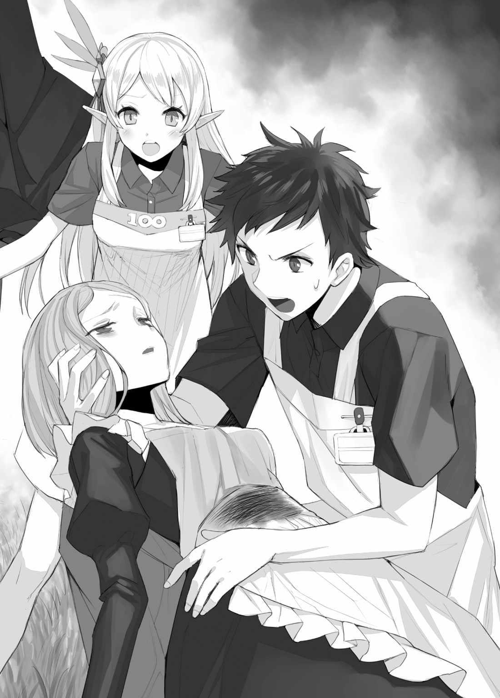
「そうですね。ユニコーンのおかげで助かりましたが、いつまで保 つかわかりません」
どうする......。臭いを消すなんて、そんなもの......。
「そ、そうだ！」
俺は慌てて馬車の中に戻る。
「あーにぃ、傷薬や包帯を用意したよ。怪我人に使ってー」
馬車の中では予備の制服に着 替 え終わったまつりが絆 創 膏 、ガーゼと包帯を用意していた。
「助かる！ あと消臭剤をくれ！」
「いいよー。トイレ用？ 衣服用？」
「とにかく強力なやつをくれ！」
「じゃあ、両方を渡 しておくね」
まつりが馬車の中に積まれた段ボール箱からトイレ用置き型消臭剤と霧 吹 き型の衣服用消臭剤、それに救急箱を渡してくれる。
「ありがとう！ まつり！」
その両方を受け取る。
「あーにぃ、まつりも行くよ」
「ああ、頼む！」
俺とまつりは馬車を出てエリューシカと少女の元に向かう。
「これで大丈夫かもしれない！ エリューシカ！ これの消 臭 効果を高めるために補助魔法をかけてくれ！」
「消臭効果......、わかりました！ 目覚め る力 」
エリューシカはトイレ用置き型消臭剤と霧吹き型の衣服用消臭剤に補助魔法をかける。
「よし、これで！」
俺は霧吹き型の消臭剤を少女に向けて噴 射 する。更 にトイレ用置き型消臭剤の封 を切って少女の周りに置く。すると、すぐに臭いが消えていくのと同時に茂みからモンスターの声が消えていく。
何とか上手くいったか？
「やったね、あーにぃ」
「す、すごいです！ 勇者様！」
エリューシカが手を叩いて俺を賞賛する。
「た、たまたまだって。それよりも、この子に薬草を......」
「いえ、勇者様。それはやめたほうがいいです。薬草は人が本来持つ治 癒 力 を無 理 矢 理 高めるものです。体力を消 耗 している状態で使った場合、最悪死ぬことも」
困ったな。別の方法で傷を治す方法を考えないと......。
「......そうだ。ガーゼと包帯があった」
単純に傷を治すというわけではないが、止血くらいはできるだろう。
「エリューシカ、少女の傷を見せてくれ」
頷いたエリューシカは少女の服をめくって傷を露 出 させる。白い肌に五センチくらいの一文字の切り傷が刻まれている。思ったよりも傷は浅いが。出血が止まらない。
救急箱から取り出したガーゼを少女の傷口にいくつか添 えて上から包帯を巻く。
「これの止血の効果を高めたいんだけど、補助魔法の効果時間はそんなに長くないだろ。どうしようか？」
「補助魔法は対象の大きさや強化する効果によって持続時間は異なります。止血程度でしたら、かなり長い時間効果は保つと思います」
「よかった、それなら、これに補助魔法をかけてくれ」
「わかりました、勇者様。――目覚め る力 」
エリューシカはガーゼや包帯に杖 を当てて魔法を使う。
補助魔法がかったガーゼや包帯から淡 い光が発せられて少女の傷から血が止まる。それを確 認 したエリューシカはめくっていた服を戻す。
傷の痛みに歪 んでいた少女の表情が安らかなものになり、深い眠 りに落ちていた。
「これで安心だ。明日の朝には起きるだろう」
「今日は色々とありましたから、勇者様もおつかれでしょう。そろそろお休みになられたらいかがでしょうか？」
エリューシカの提案に頷く。
確かに言われてみれば、かなり体がダルい。
「そうだな。そろそろ寝ようか。でも、念のため周りを警 戒 して罠 を仕 掛 けるか。ユニコーンがいるけど、用心するに越 したことはないからな」
俺は立ち上がり、馬車に戻る。
俺は段ボール箱を開けて、中から三十メートルくらいの長さのビニール紐 と鈴 を取り出す。俺はそれらを手にして馬車から降りる。
「みんなは先に馬車で寝ていてくれ」
「いえ、私もお手伝いします」
「じゃあ、まつりは先には寝るねー」
意 気 揚 々 と立ち上がるエリューシカとは対 照 的 にまつりは眠たそうだ。今日だけで色々なことが起きたから疲 れたのだろう。
「それじゃあ、エリューシカ、行こう」
「はい！」
俺たちは馬車から大体、三十メートルくらい離れる。
「この紐に鈴をつけてくれないか？」
エリューシカにビニール紐と鈴を渡す。
「わかりました」
エリューシカはビニール紐を鈴に通していく。俺は鈴が通ったビニール紐を持ち、木から木へと括 り付 けて張 り巡 らせる。十分ほどで、何者かが近づいてくれば鈴が鳴る簡易的な防犯装置が出来上がる。
「なるほど。これでモンスターを探知するんですね」
「ああ、これでもないよりはマシだからね。手伝ってくれてありがとう、エリューシカ。じゃあ、馬車に戻って休もうか」
「はい、勇者様」
俺たちは揃 って馬車に戻る。見れば、ユニコーンはとっくに座り込んで眠っていた。
腕 時 計 を見れば九時を回るところだった。元の世界にいた頃 はこんな時間に寝るなんて考えられなかったな。
「あーにぃ、戻ったの？」
そこにまつりが馬車から顔を覗かせて声をかけてきた。
「ああ、まだ起きてたのか」
「えへへー、ちょっと来てー」
「なんだよ」
「いいからー」
俺はまつりに促 されて馬車の中に戻る。そこには折りたたまれた段ボールが何枚も敷 き詰 められており、その上で少女やまつりが横になっていた。
「じゃーん、いい寝 床 でしょー。さすがに布 団 とまではいかないけど、そこそこ柔 らかいよー」
得意げにまつりが胸を張る。確かに段ボールは持ち運びも便利で保温性も高い。
「ほらほら、一 緒 に寝ようよー」
横になったまつりが自身の横にあるスペースをぽんぽんと叩く。どうやら、そこに寝ろと言っているようだ。
「そういうわけにもいかないだろ。外で焚き火の番をしてるから」
「ユニコーンがいますから、火の番はしなくても大丈夫ですよ。それに私たちだけ馬車の中で寝るなんてできません」
「そうだよー。あーにぃだって誇 り高 い現代っ子なんだから、屋根がないところで寝るなんて無理だよー」
「いや、でも、俺は男でまつりたちは女だろ。一緒に寝るなんて無理だって」
「大丈夫だよ。女の子を襲うなんてあーにぃには無理だよ」
確かに襲わないけど。
「いや、でもな......」
「心配なら、指切りして私たちを襲わないって約束しよー」
まつりが指を差しだしてくる。
「ユビキリ、とはなんでしょうか？」
「契 約 みたいなものだよー」
エリューシカの問いにまつりが答える。まつりは俺の小指を取り、自らの小指と絡 ませる。
「指切りげんまん♪ 嘘 ついたら、マジ許せん♪ 鼻パーンチ♪」
「リアルで怖 い！」
普 通 にまつりはやってきそうだ。
「はい。これでいいよー。ほら、早く寝ようよー」
まつりがとんとんと自分の隣 を叩く。どうやら、そこに寝て欲 しいようだ。
順番的にはまつり、俺、エリューシカ、少女の順番になるが......。
「いやいや、俺はもっと離 れた場所で寝るよ」
「えー」
不満そうなまつりの声と安堵したようなエリューシカの空気を感じる。
俺はまつりやエリューシカたちから少し離れた場所で横になる。
それを見たまつりは懐中電灯のスイッチを消す。馬車の中は一気に暗闇に包まれた。
「おやすみ、あーにぃ」
「おやすみなさい、勇者様」
エリューシカとまつりはそのまま目を閉じる。
「お、おやすみ」
俺も目を閉じる。
すぐにエリューシカと少女の寝 息 が聞こえてくる。
......そんな簡単に眠れるわけがない。
「あーにぃ、起きてる？」
暗闇の中からまつりの声が聞こえた。
「ん、どうした」
「えへへー。なんか眠れないんだー。旅行先だからかな」
異世界に召 喚 されたことが旅行!?
「あーにぃ、眠くなるまで手を握ってくれる？」
「いいよ」
まつりも本音では不安なのかもしれない。
まつりの気配が近づく。
「やった。また兄ハイスコア更 新 だよ！ あと10 ポイントでまつりが耳かきしてあげるね。もしくは特製プリン作ってあげるよー」
「......あ、ああ、ありがとう」
10 ポイントって何をすれば10 ポイントなんだ。
「不満そうー。もー、しょうがないなぁ。じゃあ、両方ということで特製プリンを耳かきで食べさせてあげる！」
「合わせるな！ それなら普通にプリンを食べさせてくれ！」
「あはは。うんっ」
まつりが目の前に手を差し出す。俺はその手を握る。柔らかくて小さい手だった。
思えば、幼い頃はこうしてまつりの手を握って一緒に眠ったものだ。
「あーにぃ......あのね」
いつ以来だろうか......。
「あーにぃ？ ......にぃ」
でも、なんだか落ち着く......。
瞼 が重く、意識もぼやけてくる。そのまま、まつりの声をＢＧＭにしながら眠りに落ちた。
「......様......勇者様......！」
闇から声が聞こえる。
「ん......うぅ......」
目を開けると、すぐ間近にはエリューシカの顔があり、いつものローブを着ていた。どうやら、「１００ ！」のユニフォームから着替えたらしい。
「おはようございます、勇者様」
「お、おはよう」
俺は体を起こして大きく伸 びをする。見 渡 せば、少女とまつりはまだ眠っていた。
俺も着替えくらい持ってくればよかったかな。
まつりは店に予備の服を置いているらしいが、俺はそんなの置いていない。
あとで服を消臭しておくか。
「最初にまつり様に声をおかけしたんですが、よほど疲れているみたいで」
「じゃあ、俺が起こすよ」
目を閉じたまま動かないまつりを見つめる。
「うー。むにゃむにゃ。あーにぃったら、駄目だよ。証明写真の上にＷＡＮＴＥＤって書くのは......」
......勝手に賞金首にしないでくれ。
本当に寝てる？
あれから俺はすぐに寝たが、もしかして、まつりはあまり眠れなかったのか？
「むにゃむにゃ。もう時効だから話すけど、昨日、あーにぃのプリン食べたのまつりなの」
「時効早すぎ！」
あのプリン大事にとっておいたのに！
「おーい、まつり」
俺はまつりの肩 を揺すって声をかける。
「ん。うぅん？」
まつりが眠たげな目を擦 りながら、よろよろと起き上がる。
「おはよー、あーにぃ」
「ああ、おはよう」
最後はあの少女だな。
結構、出血が酷 かったからな。もしかして、今日も起きないかも。
そう思っていたが、少女は僅 かに身じろぎすると、瞼 をピクピクと動かし、目を開けた。
「勇者様！ 女の子が目を覚ました！」
少女は俺とまつり、エリューシカをじっと見つめている。どうやら、まだ頭が混乱しているようでどこかぼんやりした瞳だ。
「......ここは？ あなたたちはだれ？」
少女が短い言葉で問う。
「ここは王都ルーフから山を一つ越えた森の中です。私はルーフの魔 法 使 いエリューシカ・サイードです。こちらが勇者アキウミ様と妹のマツリ様です。王都に来たモンスターを殲 滅 させるくらいすごいんですよ！」
エリューシカが俺を指さして胸を張り、自 慢 げに答える。
モンスターを殲滅させたというほどじゃないけどなぁ。またエリューシカは過大評価して......。
「......勇者」
少女がぽつりと呟くと、目を見開く。
「あなたは勇者なの!? ゆ、勇者さん！ お願――っ！」
少女は身を起こすが、傷が痛むのか再び蹲 る。
「落ち着いてくれ。話の前に傷を治さないと。エリューシカ、頼 む」
「それよりも村を――」
「傷を治すのが先です。少しいいですか？」
エリューシカがバッグから葉っぱを取り出 して少女の服を捲 ると傷口に当てる。
「――目覚め る力 」
エリューシカが杖を葉っぱに近づけ、ぱっくりと真 紅 に開いた傷を治していく。
「これで大 丈 夫 です」
「お願い！ 勇者さん！ 私たちの村を助けてっ！」
傷が治るや否 や、身を起こした少女が俺の服を掴 み、必死で懇 願 してくる。
「お、落ち着いてください。どうしたんですか」
「村が......。私の村がモンスターに襲 われちゃったの！」
「村......この辺りにはポルカ村しかありませんが――まさか！」
「ええ、そう。ポルカよ。村のみんなと逃 げだしたんだけど。でも、私だけはぐれちゃって。そしたら、モンスターに見つかって変な液体をかけられちゃったの」
ポルカの村はダイソー・ドがある村のはずだ。
「ポルカの村にモンスターって......！ まさかダイソー・ドを狙 っているのか!? 」
あれがないと魔 王 を倒せないじゃないか！
「ダイソー・ドって、あの岩から抜 けない剣 のことよね。あんな使えない剣なんか狙わないと思うわ。でも、どうして、あのダイソー・ドのことを聞くの？」
「え、そ、それはもちろんダイソー・ドを抜きに――」
「ま、まさか、ダイソー・ドを抜けるの!? それにはルーフ王室からの許可が必要よ！」
俺が言い終わる前に少女が言葉を被 せて詰め寄 る。
「許可は貰 っています！ 勇者様はダイソー・ドを抜くために来たんです！」
少女の言葉にエリューシカはバッグから巻物のような書状を取り出して広げる。どうやら、俺たちと別れたときに書状を受け取っていたようだ。
「いやいや！ まだ抜けるなんて決まってないから！」
「え、あなたは勇者なんでしょ？ 剣が抜けないの？」
「そんなことありません！ そうですよね、勇者様」
エリューシカが断言して俺に顔を向ける。その瞳は期待に輝 いていた。
「......そうだな。ここまで来たんだ。やるしかないか」
俺は覚 悟 を決めて頷 く。
「よかった。私は出張メイドをしているピカナっていうの」
「出張メイド？」
「出張メイドとは、人手が足りない貴族の家やお金持ちの家などに短期間派 遣 される日 雇 いのメイドのことです」
俺の疑問にエリューシカが答える。
「よろしくね」
少女が手を差し出す。よく見れば、少女の手は荒 れており、首筋はうっすらと日に焼けている。外で洗 濯 などの作業が多いせいだ。彼 女 は本当にメイドなのだろう。
「ああ、よろしく」
俺はその手を握 る。
「それじゃあ、早く村に行きましょう！」
「そうですね！」
エリューシカとピカナが勢いよく立ち上がる。
そのとき、二人のお腹がぐぅーと鳴 り響 く。
「......その前にご飯にしようか」
「わーい。朝はやっぱり焼きそばパンだよね」
まつりは段ボール箱を開けて中から焼きそばパンを取り出す。
「いただきまーす」
まつりは焼きそばパンの封を開けて齧 り付く。
「エリューシカとピカナもよかったら食べてくれ」
俺は段ボール箱から焼きそばパンを二つ取り出してエリューシカとピカナに渡す。
「ヤキソバパン......ですか」
「変わったパンね。なにを挟 んでいるの？」
エリューシカとピカナはそれを興味深そうに見つめる。
「焼きそばっていう炒 めた麺 を挟んだパンだ。よかったら、食べるか？」
俺は段ボール箱からさらに二つの焼きそばパンを取り出す。
「頂きます！」
エリューシカは即 座 に返答して俺から焼きそばパンを受け取る。
「え......、いいの。ありがとうね、勇者さん」
ピカナは一瞬、戸 惑 ったが、エリューシカの嬉 しそうな顔を見て安全だと判断したのか素 直 に受け取ってくれた。
エリューシカはまつりと同じように封を開けて焼きそばパンの匂 いを嗅 ぐ。
「ダイナミックな香 りの麺と極 上 のパンで描 かれた一枚のキャンバス」
ほぅ、とエリューシカは悩 ましげに吐 息 を吐く。
エリューシカは待ちわびたというような至福の表情で焼きそばパンを一口食べる。
「んんぅぅ！」
一瞬、エリューシカが全裸で焼きそばパンの具になっているところを想像してしまうくらい官能的な表情だった。
「まるでオーケストラの演奏を聴 いているような重奏感！ たとえるならば、グリーン楽曲団による『春の喜び』！ 何でも味わっちゃいたくなります！」
エリューシカが焼きそばパンにかぶりつく。
「あ。ほんとに美 味 しい」
エリューシカとは反対にピカナの感想はあっさりしたものだった。
「俺も食べようかな」
俺が段ボール箱に手を伸ばした時――。
「待ってください、勇者様。その、実は私、勇者様の朝ご飯をご用意してきました。よ、よろしければ、その」
エリューシカは恥 ずかしそうに顔を赤く染める。
「え、いいのか？」
「は、はい。ちょっと待っていてください」
エリューシカは近くにあったバッグを手に取り、中から大きめの葉っぱに包まれた拳 大 のものを取り出す。
「こちらをどうぞ」
差し出されたそれを手にして、葉っぱを開く。中身は白い種のようなものが集合したおにぎりのようなものだった。
「それはエルフの村に伝わるハッパロイという食べ物です」
「へー。じゃあ、いただきます」
俺はハッパロイを一口食べる。パサパサしており、味はしない。見た目はおにぎりだが、中身は乾 パンみたいなものだ。
正直、まずい。
「それ、誰 が作ったと思いますか？」
「え、まさか」
エリューシカの手料理――。
「ハッパロイ一筋五十年の種付けオークが作ったものなんですよ」
じゃなかった！
「そ、そうなんだ。ところで種付けオークってなんだ？ 言葉の響き最悪なんだけど」
「ある種をオークの体液に漬 けて発 酵 させたものがハッパロイになります。この種を植えるオークをエルフは種付けオークと呼んでいます」
種付けオーク......。
一気に食欲が減退した。
朝食を食べ終えた俺 たちは再び山道を突き進 んだ。ポルカ村に近づくにつれて森はますます深くなっていき、道の状態は悪くなる一方だった。
どうやらポルカ村はかなり田舎 らしい。
「勇者様、村が見えました」
三時間ほど揺られていると、御 者 をしていたエリューシカが俺を呼ぶ。
俺は馬車の前面から顔を出す。森を抜けた先は大きく開けており、そこにはログハウスのような煙 突 付きの木造家屋がいくつか見えた。しかし、それらは玄 関 や壁 の一部が、酷いものは建物全体が完全に焼 けて破 壊 されており、無事なものはひとつとしてない。
村と森の明確な境目がなく、この辺りがポルカの村なのだろう。人口はおそらく五百人もいないだろう。王都ルーフと比べるまでもない田舎だ。
「この場所がポルカの村なんだけど......酷いわ」
ピカナは破壊された村を見て呆 然 と呟 く。
「まさか魔王軍がここまで侵攻しているなんて。でも、破壊されている建物は多いけど、人 影 は全く見当たらないな」
「......本当だわ。みんな、無事だといいけど」
村人がいないことに安堵したピカナは目を凝 らして村の遠方を見つめる。すると、奥からうっすらと煙 が立ち上っていることに気づく。
「あの煙が立っている場所は？」
俺はピカナに問う。
「あそこはダイソー・ドが突き刺 さった岩の近くにある集会場よ」
あの場所にモンスターがいるかもしれないな。
「モンスターに見つからないように慎 重 に行こう」
「でしたら、馬車で行くと目立ってモンスターに見つかってしまうので、ここに馬車を駐 めて準備しましょう」
「そうだな」
エリューシカの言葉に俺は同意する。
馬車を村の入り口近くに駐めると、俺は必要になりそうな道具を取り出してリュックに詰め込 む。
剣を抜くのは長丁場になるかもしれないから、ミネラルウォーターや食料を人数分持っていこう。あとはダイソー・ドを抜くための日曜大工用品ぐらいだな。
「おい！ お前ら！」
野太い声が馬車の外から聞こえてきた。
荷物を担 いだ俺が馬車から出ると、そこには泥 と土で汚 れた地味な服を着た十数人の人々が鍬 や農作業用の鎌を構えていた。
さ、山 賊 か!? ......いや、それにしては装備が貧相だ。
「だ、だれだ？」
「どうしたの？ 勇者さん」
俺の後ろからピカナが現れると、人々の先頭に立っていた中年男性の言葉が止まる。
「ピ、ピカナ！ 無事だったのか！」
「みんな！」
馬車から降りたピカナが人々と抱 き合 う。
「あーにぃ、どうかしたの？」
「勇者様、......その人たちは？」
そこにエリューシカとまつりが顔を出す。
「この人たちはポルカ村の人たちよ。みんな、この人は宮 廷 魔 法 使 いのエリューシカさん。それと私を助けてくれた勇者さんに妹のまつりさんよ」
「勇者？ お前さんが？」
村人が俺を見て訝 しげな顔をする。
「勇者さんはダイソー・ドを抜いてモンスターを退治してくれるの。......あれ、村長さんたちは？」
「村長たちとは途 中 ではぐれてしまっただ。年寄りも多いから、もしかすると、まだ村に残っているかもしれねー」
「大変！ なら、急がないと！」
ピカナが先頭に立ち、歩を進める。俺とエリューシカ、まつりはその後に続く。しかし、村の人たちはついてこない。
「どうしたの？」
ピカナの問いに村人たちは一 斉 に顔を背 ける。
「い、いや、また村に戻 るのは......」
「勇者が本物とも限らねぇし」
他の村人たちを村人たちは案じてはいるが、モンスターが恐 ろしいらしく、村に戻るのには消極的だ。
「村長さんたちが心配じゃないの!? 」
ピカナが憤 る。それに対して村人たちは沈 黙 したままだ。
「待ってください、ピカナさん。私と勇者様だけではこの人数は庇 いきれません」
二手に分かれるしかないか。
俺は勇者だと思われているから村に行かなければならない。エリューシカは補助魔法が使える。ピカナは村の案内に必 須 だ。そうなると――。
いやいや、さすがにまつりだけ残していけないよな。
「じゃあ、私、ここに残るよー。馬車の商品が心配だもん」
「え、でも、モンスターもいるのに、大 丈 夫 か？」
「まつり、危なくなったら一 か八 かで覇 王 雷 神 拳 使うよー」
「それ一か八かで使えるような技 とは思えないから！」
習得に五十年以上かかりそうだ。
「でも、ユニコーンがいるから安全じゃない？」
「いえ、強力なモンスターが相手だとさすがのユニコーンも追 い払 うことができません」
「困ったな......」
強力なモンスターが相手だとさすがにユニコーンの力が足りないか。
「......そうだ。エリューシカの魔法でユニコーンの能力を強化できないか？」
「それはできると思います。でも、どれほど保つかわかりません。おそらく、この程度の効果なら二時間くらいは保つと思いますが」
なら、効果が切れるまでに帰ってこないと。
「二時間だけでもないよりはマシだ。エリューシカ、頼む」
「はい。――目覚め る力 」
エリューシカは杖をユニコーンの角に向けて魔法を発動させる。
「これで大丈夫です」
「じゃあ、まつりたちはここに残ってくれ。俺とピカナとエリューシカで剣を抜きに行こう」
「ええー」
まつりが不満そうに唇 を尖 らせる。
「我 慢 してくれよ。今度、駅前の喫 茶 店 でパフェを奢 るからさ」
まつりを危険な目にあわせたくないからな。
「わかったよー」
渋 々 とまつりが納 得 する。
「後は昨日と同じように罠を張っておくか」
回収しておいた罠を取り出して、馬車から半径三十メートルほどのところに張り巡らせる。
「......もしも、音が鳴ったらユニコーンのそばを絶対に離れないでください」
「わ、わがった」
エリューシカの言葉に村人が頷く。
「じゃあ、行こうか」
リュックを背 負 って俺はエリューシカとピカナに声をかける。まつりのことは気に掛 かるが、村人やユニコーンがいるからきっと大丈夫だろう。
「はい、勇者様」
「ええ、わかったわ」
エリューシカとピカナが頷く。
「気をつけてねー」
「ピカナ、すまねぇな」
申し訳なさそうに村人たちが頭を下げる。
まつりたちに見送られて俺たちは村の中に入る。
「村を襲ったモンスターってどんなモンスターなんだ？」
「それは......馬よりも大きくて、でも、見た目は黒い犬みたいで......。とても凶 暴 で怖かったわ。たった一匹 だけなのに、誰も手が出せなかったの」
そのときのことを思い出したのだろう。ピカナが震 えを抑 えるように自らの体を抱きしめる。
「馬よりも大きい凶暴な犬か......」
「それはおそらく、ヘルハウンドというモンスターですね」
ヘルハウンド......シャーロック・ホームズシリーズの『バスカヴィル家の犬』という本のモデルにもなったことで有名だったな。
確か、黒い犬の妖 精 だった気がする。妖精といっても可愛 らしいものではなく、不 吉 の象 徴 とされていて人を襲って殺したりもする凶 悪 なものらしい。
「そのモンスターって強いのか？」
俺はエリューシカに問う。
「ベルゼバブよりも強く、たった一匹で五百人の兵士に匹 敵 するとまで言われています。ルーフ王国の中でも最強クラスのモンスターだと思います」
「ベ、ベルゼバブよりも強いのか......」
そんなモンスターと戦って勝てるのか。
「でも、おかしいですね。ヘルハウンドは確か封 印 されていたはずですが」
「魔王が封印を解いたんじゃないか？」
「あり得ます。ベルゼバブの封印が解けたなら、ヘルハウンドの封印も解けるはずです」
そんなに強力なモンスターをどうしてこんな村に派遣したんだ。
もしかして――。
「それほど強力なモンスターなら、魔王は何かの役目を命じていたりするんじゃないか？」
「......そうかもしれません！ ヘルハウンドを倒 せば、きっと魔王に繋 がるヒントがあります！」
倒すとまでは言ってないけどな。
エリューシカはヘルハウンドを倒す気満々だ。
「ヘルハウンドは聖なる力に弱いと聞きます。たとえば、霊 山 などで清められた湧 き水 ......つまり、聖水などが有効です」
エリューシカが顔を上げて答える。
「ピカナ、村に聖水はないのか？」
俺の問いにピカナは肩をすくめる。
「まさか。聖水なんて普 段 は必要ないもの」
さすがにそんなの都合よく手に入らないよな。
「もう少しで着くわ」
ピカナの言うとおり、しばらく歩いていると村の建物が途 切 れてテニスコートぐらいの広場が姿を見せる。
「あれが......聖 剣 ダイソー・ドよ」
広場の中心には俺の身長ほどもある大きな岩があり、その岩の頂点に突 き刺さった剣をピカナは指さす。
竜 が象 られた黒 塗 りの長い柄 は見る者の目を引く。しかし、刀身は岩に埋 まりほとんど見えない。なんだか、伝説の武器っぽい雰 囲 気 を感じる。
「よかった。モンスターはいないみたいだ」
てっきりこの辺りにいると思ったんだけどな。
「では、今のうちに！ 勇者様！ 剣を抜いて下さい！」
「村を救って！ 勇者さん！」
......いやいや、そんな簡単に抜けるわけないだろ。
と、言いたかったが、エリューシカとピカナの真 剣 な眼 差 しに否定することができず、俺は渋々、岩の脇 に設置されていた石の階段を上る。
とりあえず、抜いてみるか。もしかしたら本当に抜けるかもしれない。
俺はダイソー・ドの柄を手にして岩から抜こうと力を入れる。
「ふぬぬぬぬ！」
しかし、抜けない。
そこまで都合よくいくわけがないか。俺はただの１００円ショップの店員なんだからな。
「そ、そんな......」
ピカナが絶望に満ちた表情で呟く。
「ゆ、勇者様、だ、大丈夫です！ 次こそは絶対に抜けます！」
「あ、ああ」
エリューシカの言葉に曖 昧 に頷く。
そうは言うが、困ったな。これは抜けそうにない。
ダイソー・ドをじっと見つめる。
うーん。ダイソー・ドに魔法が掛かっているのかどうかは素人 の俺には全然わからないな。
俺は魔法が使えないから、別のアプローチを試 してみよう。
剣の前に立ち、背負っていたリュックから工具箱を取り出す。
ペンチ、レンチ、ハンマー、ノミなど......。中には日曜大工に必要な物が一式揃 っていた。全 て１００円だが、品質は普通に売っている商品と比べて劣 っているわけではない。
まずはノミを岩に突き立 てて上からハンマーでノミを叩 き、岩を削 ろうとする。少しでも削れたら、周りの岩を削って取り出すことができるかもしれない。
「ふんっ！」
しかし、勢いよくハンマーでノミを叩いても、音が響くばかりで、岩はひっかく程度の傷しかつかない。
岩と剣の隙 間 をよく見てみる。すると、剣は抜けないように何か透 明 なもので固められているようだ。
「勇者様」
そのとき、エリューシカが何かに気づいたように振 り返 る。
「どうしたんだ？」
俺が聞いてもエリューシカは村を険しい顔で見つめたままだ。
「何か......来ます」
エリューシカが杖 を握りしめて足を広げる。
「......え!? まさか、モ、モンスター!? 」
ピカナが後ずさりする。
くそ！ まだ始めたばかりなのに！
そのとき、風もないのに広場の奥 にある茂 みががさがさと不自然に揺 れた。
全員に緊 張 が走る。そこから現れたのは――。
「ピカナ!? ピカナか！」
村の入り口で出会った村人たちと同じ服装で、同じように鍬や鉈 を持っている十数人の人々。その中の中年男性が前に出てピカナを見ると声を上げる。
「そ、村長！」
ピカナもまたその中年男性を見て顔が喜色に染まる。
「よかった！ 無事だったんだな！ 途中でいなくなったから心配したぞ！」
「心配かけてごめんなさい。でも、危ないところをこちらの勇者さんに助けてもらったの」
どうやら、ポルカの村の住民らしく、口々にピカナに向かって安 堵 の声を上げる。
人でよかった。モンスターだったら、どうやって戦おうかと思っていたところだ。
俺とエリューシカも気の緩 みから笑 みがこぼれる。
「さっき村の入り口でドエルのおじさんたちを見たわ」
「あっちも無事だったか。モンスターが襲ってきたときにはぐれたから捜していたところだったんだ」
「ほんごつえがった。んだば、これがけか？」
腰 が曲がり、杖をついた白 髪 の老人がじろじろと俺たちを見ながら、何か妙 な呪 文 を唱えた！
「ええ、翁 様。この人は勇者なのよ。ダイソー・ドを抜いてモンスターを退治してくれるの」
老人の呪文にピカナは事もなく答えて俺を紹 介 する。
な、何を言っているんだ？
「なぁ、エリューシカ。どうやら、翻 訳 の調子が悪いみたいなんだけど」
俺は腕 輪 をエリューシカに見せる。
「い、いえ、故障ではありません。楔 の腕輪は地方の方言までは対応していませんから、妙な言葉に聞こえるだけだと思います」
エリューシカが困ったように笑いながら答える。
「ほ、方言なのか。変わっているな。というか、さっきからすごい見られているんだけど」
村翁は俺をじっと見つめて、やがてため息を吐 く。
「だば、けが勇者だば、なんばらべっちゃ」
村翁は再び呪文のような言葉を放つ。
......わ、わからん。どういう意味だ？ しかし、態度からするとあまり良くは思われていないようだが。
途 方 に暮れた俺はピカナを見つめる。
「翁様は勇者さんのことを信じていないみたいなのよ！」
ピカナが眉 を上げて怒 る。
「翁様、勇者さんはすごいのよ。誰も見たことがない魔法を使っていたの。勇者さんなら、間 違 いなく剣が抜けるわ」
ピカナが大きな胸を張って断言する。
え、えええ!?
「もちろんです！ この通り、王室が認めた書状もあります！ それに私も宮廷魔法使いの名にかけて誓 います。勇者様は必ずこの剣を抜き、ヘルハウンドを倒してくれます」
エリューシカはバッグから書状を取り出して村人たちの前に広げる。
か、勝手にそんなこと言われても困る！
「しかしのぉ、そのような若い者が勇者と言われてものぉ」
「確かに見たところ強そうでもないのぉ」
村人たちは俺をじろじろ見て難色を示す。
「だば、け」
村翁が俺に向かって何かを呟き、顎 でダイソー・ドを示す。
「翁様はダイソー・ドを抜けたら勇者として認める、だって」
ピカナが翻訳してくれる。
「......今の一言にそんなに意味があったのか？」
どう聞いても、そんなに意味がこもっていたとは思えない。
「この地方の方言は主に『け』だけで大体通じるわ」
「便利すぎないか!? 」
「ここまで方言がすごいのはお年寄りくらいだけどね」
ピカナは恥ずかしそうに笑う。
それ方言ってレベルじゃないだろ。
「とにかく、勇者っていうなら、その剣を抜いて助けくだせぇ。モンスターに殺されたくねぇだ」
村長の言葉に村の人々が賛同する。
「何を言っているの、みんな。勇者さんは本物よ。私を助けてくれたんだもの。お願い、勇者さん、村を守って！」
ピカナが俺の手を取って懇願する。
どうしよう。やっぱり抜けませんでしたって言えば許してくれるか？
「大丈夫です！ 勇者様なら、きっと剣を抜けます」
きらきらした瞳 でエリューシカは俺を見つめる。
ぐ、こ、こんなこと言われたら。
「あ、ああ、もちろんさ」
俺は引きつった顔で頷き、親指を立てる。
こう言うしかないだろ......。
「本当に抜けるんだべか」
「うーん、この村を捨てて王都に行くべか？」
「そんな、ここは先祖代々の土地だべ」
俺の言葉を聞いた村人たちは訝しげな声を上げる。
とりあえず、もう一度、剣を調べよう。
そもそも剣と岩はどうやってくっついているんだ？
この岩と剣の隙間に入っている透明な物体をどうにかしたほうがいいかもしれない。
あれ。これ......どこかで見たことがある。そうか。これ接 着 剤 に似ているんだ。
工具箱を漁 る。すると、接着剤の剥 がし液が見つかる。
さすがに異世界に接着剤があるはずはないが、それでも、試すだけ試してみよう。
俺はそれを取り出して、慎重に剥がし液を透明な物体にかける。それは空いた隙間にすっと入り込んでいった。すると、ほんの僅 かに剣が動いた気がした。
い、今、動いた!? これならいけるかも！
剥がし液が浸 透 するまで、岩の上に座 って待つ。
大体二、三分くらい待てばいいか。......なんだか少し喉 が渇 いたな。
俺はリュックからペットボトルのミネラルウォーターを取り出して口をつける。
「勇者様、それはなんですか？」
「ああ、これはただの水だよ。ちょっと喉が渇いたからさ」
「ねぇ、勇者さん、水を飲んでないで早く剣を抜いてよ」
水を飲んで動かない俺にピカナは声を掛ける。
「いや、剥がし液が浸透するまで待っているんだ。ピカナも飲む？」
俺はピカナにミネラルウォーターを差し出す。
「そ、そうなんだ。あ、ありがと」
よくわかっていないような返答をしたピカナはミネラルウォーターを受け取り、口をつける。
「おいおい！ はがしえきの浸透？ そんなのよくわからねぇべ！ 早く抜いてけろ！」
言葉の意味がわからなかった村人が俺に野 次 を投げる。
「あ、いや、だから、それは」
俺は弁解しようとするが。
「待ってください。勇者様には何か考えがあるんです。だから、もう少し待ってください。お願いします！」
その前にエリューシカが俺の前に立ち、村人からかばう。
「う、わ、わかったべ」
エリューシカの必死の懇願に村人は気 圧 されるように頷く。
参ったな。これで抜 けなかったら、モンスターじゃなくて村人にやられそうだ。
「......そろそろいいかな。ふん！」
俺はダイソー・ドの柄を両手で握る。
「頼 むから抜けてくれ！」
力 一 杯 剣 を引 き抜こうとするが、ビクともしない。しかし、力を入れ続けると徐 々 に剣はゆっくりと持ち上がり、刀身が姿を現し始めた。
「おおおおお！」
村人たちは目を見開いて驚 く。俺を信じていたピカナですら、その光景が信じられないというように両手を合わせて固まっていた。さっきまでの不安そうな顔を誤 魔 化 すように、唯 一人エリューシカのみが当然というような顔をしていた。
俺は更 に力を込めて岩から剣を一気に引き抜く。
「よっしゃぁ！ ぬ、抜けたぁぁぁぁぁぁ！」
ダイソー・ドはバスタードソードと同じくらいの長さをした両 刃 の剣だった。
一見すると、切れ味はかなり良さそうに見える。それに全体的にかなり軽い。前に一度、居合いを習っていた体育の先生が模造刀を持ってきてくれたが、結構重く、両手でなければまともに扱 えないほどだったことを思い出す。それを考えれば、このダイソー・ドは片手で振り回 せるくらいだ。まるでおもちゃのようだ。
「どうです！ これが勇者様の証 です！ すごいでしょう！」
なぜかエリューシカがどや顔で自分のことのように自 慢 する。
「すごいわ これが勇者さんの力なのね！」
ピカナは両手を叩いて驚く。
「こんな勇者見たことがない！」
「最後まで目が離 せませんでした！」
「勇者様サイコー！」
村人たちもそれに呼応して映画を見た後のコメントのような雄 叫 びを上げる。
「お、落ち着いてくれ」
そのとき、再び広場の奥の茂みが揺れる。まだ誰か村人がいるのだろうか。
そう思っていたが――。
「ぐるるるる」
茂みの中から出てきたのは村人ではなかった。
現れたのは黒い犬。しかし、それは俺が知っている犬よりも遙 かに大きい。
「あれがヘルハウンドです！」
エリューシカが叫 ぶ。
ヘルハウンドは二つの赤い眼 を輝 かせて、ぐるるると獰 猛 な唸 り声 を上げた。
「う、うわ！ あいつが来たぞ！」
村人の一人が叫ぶ。すると、波のように混乱が広がり、村人は蜘 蛛 の子を散らすように逃 げ出 す。
「だば、け！」
村翁が杖を振りかざして老人とは思えない声を上げる。
「翁様は勇者さんの降臨を予測してモンスターが襲 ってきたと言ってるわ！」
ピカナが村翁の言葉を通訳してくれる。
いやいや、明らかにみんなで騒 ぎすぎたのが原因だろ。あれだけ大きな声を出してれば普 通 は気づくって。
「勇者様！ ダイソー・ドを使ってヘルハウンドを倒してください！」
「そ、そうだよな！ これなら――！」
俺はダイソー・ドを握 りしめる。すると、不思議と勇気が湧 いてくる気がした。
これならいける！
ダイソー・ドを持った俺を敵と認 識 したヘルハウンドは牙 を剥 いて吠 える。
俺は岩から颯 爽 と下りる。それだけで村人たちが逃げるのをやめて歓 声 を上げる。
「行くぞ！」
俺はダイソー・ドを振りかざしてヘルハウンドに突 進 する。
「うおおおぉぉ!! 」
渾 身 の力で振り下ろす。が、それはヘルハウンドの牙によってあっさりと受け止められてしまった。
「この！ 放せ！」
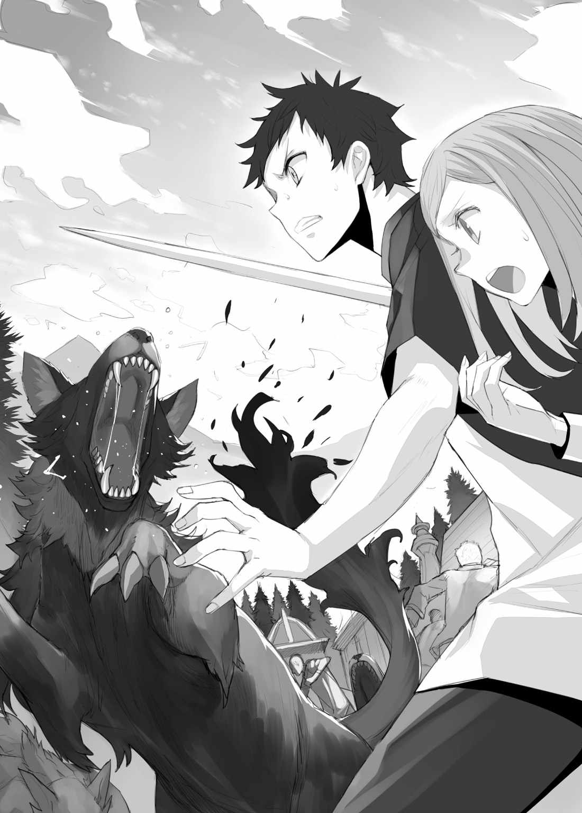
ヘルハウンドを引きはがそうと振り回すが、全く離れない。
逆にすごい力で剣をもぎ取られてしまった。
「くそ！ 全然効果がないじゃないか！ 本当に伝説の剣なのかよ！」
思わず本音が出てしまった。そんな俺をあざ笑うようにヘルハウンドは無造作に剣を投げ捨てる。
「そんな――」
エリューシカの顔が青ざめる。
「うわあああああ！」
「だから、言ったんだ！ 勇者なんて信じられないって！」
俺の言葉を聞いて村人たちは村翁を抱 えて一斉に逃げ出す。
ヘルハウンドは再び牙を剥いて襲いかかってくる。
「うわ！」
俺は咄 嗟 に身を横に投げ出すが躱 しきれず、リュックやその中に入っていたペットボトルが切 り裂 かれて水が飛び散ってしまった。
すると、なぜかヘルハウンドは飛び散った物を見て、怯 えたように下がる。
な、なんだ？ なんで下がったんだ？
距 離 を取ったヘルハウンドは俺に向かって大きく口を開ける。すると、口の中に黒い光が収束して、やがてバレーボールくらいの大きさをした黒い光の玉になる。
まずい！
迫 る身の危険に体が硬 直 してしまった。
「みなさん、目を閉じてください！ ――暁の白光 ！」
咄嗟に俺は目を閉じる。すると、瞼 の奥からでもわかるほど、白く輝く光が放たれた。驚いたヘルハウンドは僅かに硬直する。
どうやら、目 眩 ましの魔法のようだ。
「勇者様！ 避 けてください！」
エリューシカの声で俺はヘルハウンドの前から体を投げ出して躱す。
すぐ後ろをヘルハウンドが放った黒 弾 が通り過ぎる。黒弾は射線上の先にあった木々をなぎ倒して森の奥に消えていく。
と、とんでもない威 力 だ。
「ゆ、勇者さん！」
「ピ、ピカナ！ 逃げなかったのか！」
「だって、勇者さんがモンスターを退治してくれるのよね！ 早く私を助けてくれたみたいな魔法を使ってよ！」
村人たちの中で唯 一 逃 げなかったピカナが聞く。
「そんなのないって！」
俺は１００円ショップの店員だぞ。毎回毎回、都合良くいくわけがない。でも、ここで引き下がるわけにもいかない。なんとかしないと！
......何か弱点みたいなものがあるはずだ。よく考えろ。
そういえば、どうしてヘルハウンドは怯 んだんだ？ 聖水に弱いと聞いてはいるが、リュックに入っていたのはただのミネラルウォーターのはずだ。
俺はリュックからミネラルウォーターを取り出して観察する。
富 士 の美 味 しい水と書かれた普通のものだ。
別に変なものは入っていないような気が――。
ん？ 富士？ 富士ってことはあの富士山だよな......。確かにあの山は昔から聖なる霊 峰 と呼ばれている。
俺 が思考を巡 らせていると、ヘルハウンドが再び口を開けて、黒い光を集め始める。
うわ！ や、やばい！
ヘルハウンドの口にある黒弾は一 抱 えほどもある巨 大 な玉になっていた。
げ！ くそ！ いちかばちかだ！
俺は封 を開けたペットボトルをヘルハウンドに投げる。中に入っていた水はヘルハウンドにぶちまけられる。
すると、ヘルハウンドは苦 悶 に満ちた鳴き声を上げてその場に崩 れ落 ちる。
効いた！ まさか富士の美味しい水が聖水としての効力を持つなんて。
俺はもう一本、ペットボトルを取り出す。
「エリューシカ！ この聖水の効力を上げてくれ！」
「え、でも、それはただの水では？」
駆 け寄 ってきたエリューシカは俺が差し出したミネラルウォーターを見て戸 惑 いの声を上げる。
「いいから、これに例の補助魔法をかけてくれ！」
「は、はい！ ――目覚め る力 ！」
エリューシカがペットボトルに補助魔法をかける。
「もう一発！」
俺はペットボトルを再びヘルハウンドに投げる。
ペットボトルの水を浴びたヘルハウンドは一 際 、大きな断 末 魔 の叫びを上げる。そのまま体が砂のように崩れていき、体を構成していた粒 子 は風に流されて消えていく。しばらく待っていると拳 くらいの大きさをした魔 力 石 が残った。
......た、倒した？
「すごいです！ 勇者様！」
エリューシカが駆け寄ってくる。
「勇者様の持っていた水が聖水だったなんて。気づきませんでした！ さすがは勇者様ですね！」
エリューシカは素 直 に感心してくれる。
「勇者さん！ すごいわ。でも、これってさっき私たちが飲んだものじゃ......せ、聖水を飲んでたの!? 」
ピカナが焦 り出す。
「聖水を人が飲んでも害はありません」
「よ、よかった」
エリューシカの説明にピカナはホッと安堵する。
「あんな安い水でなんとかなるもんだな」
俺の安い水という言葉に反応したピカナが驚く。
「や、安いの!? 嘘 よ！ 聖水は買えば、10 万ゴラン以上はするのに!? 」
なるほど。こっちの世界では聖水ってそんなに高いんだな。
「よかったら、案内してくれたお礼に一つあげようか？」
「え、え、ええ!? い、いいの？」
ピカナは大きな声を上げる。
「ああ、これくらいならいいよ」
リュックから俺はペットボトルを取り出してピカナに渡 す。
「あ、ありがとう」
ピカナはそれを大事に抱えて、俺にお礼を言う。
「よかったら、エリューシカも――って、何をしているんだ」
エリューシカはヘルハウンドの魔力石の前に移動する。
「今から念読魔法を使います」
そう言ってショルダーバッグから白い粉を取り出したエリューシカは、魔力石となったヘルハウンドに振りかける。
「――未来と過去 」
そして、エリューシカは杖をかざして呪文を唱える。すると、白い粉は発光し始める。
「な、なんだ、これ」
「この白い粉は、物体に残った人の残留思念を取り込 んで人形になるんです。ベルゼバブのようなランクが低いモンスターでは反応が鈍 いですが、これほど魔力が強いモンスターならば、きっと読み取れるはずです」
「つまりは魔 王 のことがわかるかもしれないんだな」
サイコメトリーみたいなものか。
「そういうことです。白い粉が人形を形作るまで少し時間がかかります。もう少し待っていて下さい」
俺は腕 時 計 を見る。
一時間も経 っていない。これなら、ゆっくり戻 っても大 丈 夫 だな。
「それにしても、あのヘルハウンドは強かったな。あれより強いモンスターっているのか？」
「モンスターにはランクがあって、個人でも対処できるモンスターは四級、十数人で対処するモンスターは三級、ギルドで対処するモンスターは二級、軍で対処するモンスターは一級、災害クラスは特級というようにクラス分けされています。ベルゼバブはギルドで対処できるモンスターなので三級。ヘルハウンドは二級ですね」
「特級クラスなんていうのもいるのか。そのモンスターってどれくらい強いんだ？」
「そうですね。特級クラスのモンスターは世界を破 滅 させることすらできるといいます。代表的なのは、かつて世界を滅 亡 寸前まで追 い詰 めたロード・ドラゴン・ジークフリートでしょうか」
世界を滅亡寸前まで追い込むなんて。
「ドラゴン・ジークフリートの強さは身に纏 う鱗 の頑 丈 さだという伝承があります。私たちの世界にある武器や魔 法 では、傷一つ付かなかったらしいです。ですが、伝説の英 雄 ダイナソーが何らかの方法で倒したそうです」
ジークフリートってどこかで聞いたことがあるな。そうだ、確かドイツの神話かなにかでドラゴンを退治した英雄だったはずだ。
ジークフリートは魔力のこもった竜 の血を浴びて無敵になった。しかし、背中に葉っぱが一枚貼 り付 いていて血を浴びられず、この場所が弱点となり死んだ。そんな伝承だったはずだ。
「一説では異世界の漂 流 物 を使ったとか、見たことがない魔法を使ったとか言われています。聖剣ダイソー・ドがまさにその武器だと言われていたのですが......」
エリューシカは、ヘルハウンドに弾 き飛 ばされ、そのまま地面に打ち捨てられていたダイソー・ドを悲しそうに拾いあげる。
「すごい！ さすがは勇者様だー」
そこに安全を確 認 した村人たちが現れ、俺たちに言葉を投げかける。
露 骨 なくらい態度が変わるなぁ。
「んだば、勇者っつーことをみとめにゃらない」
村翁が前に出て震えた声で言葉を紡 ぐ。相変わらず、酷 くなまっていて聞き取りにくい。
「......なんて言ったんだ？」
「勇者さんは翁様に勇者として認められたのよ。本当にすごいわ」
通訳したピカナが興奮した様子で答える。
「当然です！ 勇者様はとっても強くて優 しいんですから！」
エリューシカがもはや恒 例 のように自慢げに胸を張る。
「ええ、エリューシカさんの言う通りね」
「いや、俺は別に、そんな」
俺は照 れ隠 しに頬 を掻 く。
「宴 じゃああああ！」
村人たちは今までの鬱 憤 を晴らすように盛大に騒ぎ出す。それを見て、俺とピカナは互 いに困ったような笑みを交わす。
「ところで、ピカナよぉ。それは何なんだ？」
ピカナが持っていたペットボトルを見て村人の一人が疑問の声を上げる。
「これは聖水よ。勇者さんにもらったの」
「なに!? 聖水!? 勇者様、俺にもください！」
「お、俺にも！」
ピカナの言葉に反応した村人たちが一 斉 に俺の元に集まってくる。
「あ、いや、これはピカナが案内してくれたお礼に渡したもので......。えっと、村の入り口にある馬車にまだ沢 山 あるので、そこに行けばさっきピカナが言った他の人たちや俺の妹がいますから――」
「うおおお！ 馬車だ！」
「馬車に急げ！」
俺が言い終わる前に村人たちは一斉に駆け出す。
「ごめんね。村長たちったら、ちゃんとお礼も言わないで」
最後に残ったピカナが謝罪する。
「ああ、いいよ。ヘルハウンドを倒せたのは偶 然 みたいなものだし、そもそもお礼を言ってもらうために倒したわけじゃないからな」
俺の言葉を聞いて、ピカナはますます目を輝かせる。どうやら、謙 遜 しているものだと思われているようだ。
「魔王に勝てる武器があると聞いたからここまで来たのに。まさか剣が役に立たないなんて」
「でも、勇者さんは聖水とか持っているじゃない。そういうすごいアイテムでなんとかならないの？」
「あれは聖水じゃなくて１００円ショップで売っているただの水なんだ」
「ただの水？ １００円ショップの水は聖水と同じ効果があるんですか？」
「そうみたいだ。俺の世界ではこんなの普通の水なんだけどなぁ」
エリューシカの問いに俺は答える。
「え、俺の世界？ 勇者さんって別の世界から来たの？」
「あれ、言ってなかったっけ？ 俺は別の世界から召 喚 されたんだ」
「すごいわ。異世界の人なんて初めて見たわ。私たちと見た目は全然変わらないのね。ねぇ、勇者様の世界ってどんな世界なの？」
「どんな......と言われても」
よくよく考えたら、こんなことを聞かれたのは初めてだ。
「うーん。まず、魔 法 はないな」
魔法はないという言葉にエリューシカは驚く。
「え！ そうなんですか!? 」
「へぇー」
それとは対 照 的 にピカナは全く動じていない。
「ピカナ様、驚かないんですか？ 魔法がないんですよ」
「私の周りには魔法使いなんていないから、あまり実感ないわ」
この国自体、魔法使いが少ないみたいだから一 般 人 の感覚はそんなものか。
「他に私たちの世界とは違 うところはないの？」
「あとは......モンスターがいないから平和だな」
平和という単語にエリューシカとピカナは顔を見合わせる。
「モンスターがいない世界なんて想像できないわ」
「そうですね。でも、争いがないのは平和で良い世界ですね」
全く争いがないというわけではないが、この世界に比べれば安定した治安だ。
「そうだな。早く元の世界に戻りたいな」
俺が言った直後、エリューシカが何か考え込む。
「どうしたんだ？ エリューシカ」
「すみません、勇者様」
突 然 、エリューシカが深々と頭を下げて俺に謝罪をする。
「え......？ エリューシカが謝 るようなことしたっけ？」
「平和な世界にいる勇者様を無 理 矢 理 召喚してしまって本当に申し訳ありません」
エリューシカは自身の不 甲 斐 なさを恥 じているのだろう。
「それにモンスターと戦っているときだって勇者様に任せきりで......。もっと私が強かったらよかったのですが。お役に立てず申し訳ありません」
泣きそうな顔のエリューシカを見て、心が痛くなる。
「エリューシカ」
俺はエリューシカの名を呼ぶ。責められると感じたエリューシカがびくりと震 える。
「はい」
俺はエリューシカに微笑 む。
「確かに最初はなんて世界だとか思ったよ。でも、エリューシカが攻 撃 魔法を使えないのに俺よりも先にモンスターに立ち向かう姿を見て、俺も勇気がわいてきたんだ」
今までだって１００円ショップの物でなんとかなってきたんだ。俺だって剣がなくても魔王と戦ってやる。
半信半疑というようにエリューシカが俺を見つめる。
「それに、ヘルハウンドを倒 すときだってエリューシカが弱点を教えてくれたから倒せたんだ」
「ほ、本当ですか？」
俺の励 ましを受けてエリューシカが顔を上げる。
「ああ、本当本当！ エリューシカの魔法だってすごいじゃないか！ 俺はあんなの絶対にできないよ」
「やだ......。勇者様ったら」
笑 顔 になっていくエリューシカを見てつい調子に乗ってしまった。エリューシカは頬を真っ赤に染めていた。
「わかりました！ もっと私、頑 張 ります！」
エリューシカが杖を強く握りしめて決意を示す。
「まずはもっと接客を頑張らないといけません。呪文を唱えている最中にもいらっしゃいませを言った方がいいですよね！」
「呪文の最中にいらっしゃいませって......」
まつりの影 響 で言い出したんだな。
確かに勉強熱心だが......。
呪文を唱えつつ、いらっしゃいませを入れるエリューシカを想像する。
扉 に繋 がりし永久の旅人。いらっしゃいませ。
楔の石を聖 櫃 として。魔力の群体を生 贄 に。いらっしゃいませ。
漆 黒 の星々を越 えて。三千の世界を越えて。異 界 鎖 よ聞き届けたまえ。いらっしゃいませ。
エリューシカ・サイードの名において――いらっしゃいませ。
激しく何か招いているな！ 永久の旅人とか三千の世界を越えて来る客ってどんなやつだよ。
「それはやめたほうがいいんじゃないかな！」
よくわからんものを召喚しそうだ。
「そうですか......」
エリューシカがしょんぼりとした顔で俯 く。
「......接客だって自分なりのペースで学んでいけばいいさ。俺だって、まつりだって、最初は失敗することもあったよ」
「え、勇者様やまつり様が？」
エリューシカが意外だというように目を見開いて驚く。
「ああ、お釣 りを間違えたり、商品を過って潰 してしちゃったりしてさ」
「そうね。初めての頃 はそんな失敗ばかりよね。私も最初の頃は失敗しちゃったわ」
俺の体験談に同じような経験をしたピカナも語る。
「そうなのですか。勇者様やピカナ様がそんな失敗をするなんて」
エリューシカは俺たちの失敗談に驚いた表情を見せる。
「そんなもんだよ。だから、エリューシカ、気にするなよ」
「はい。わかりました。ありがとうございます。やっぱり勇者様はお優しいですね」
安 堵 した俺を温かな眼 差 しで見つめて、エリューシカが微笑む。
「......う」
「そ、それよりもヘルハウンドの調査結果はどうなったんだ？」
ついエリューシカの微笑みに見 惚 れてしまった俺は誤魔化すように話題を変える。
「あ、そうでした。えっと......」
ヘルハウンドが残した魔力石とその傍 らに出来上がっていたムンクの叫びみたいな手のひらサイズの白い人形をエリューシカは抱 き上 げる。
「どうやら、まだかかるようです。でも、人形は完成しています。後は魔力が完全に馴 染 むのを待つだけです。まつり様が気になるので馬車に戻りましょうか」
「そうだな」
ここで待つ必要がないなら村の入り口に戻ろう。
俺たちは村の入り口に向かって歩き出す。
入り口に着く頃には太陽は真上に来ていた。
「あそこよ、勇者さん。でも、あの声はなにかしら」
馬車の前にたどり着くと、合流した村人たちが集まっていた。村人たちが聖水をただ取りに来ただけにしては騒がしい。
俺が戸惑っていると――。
「どういうことだべ！」
「なんだべさ、これは！」
村人たちの大きな声が聞こえてくる。
まさか、まつりに何かあったのか!?
「まつり！」
俺は叫びながら慌 てて駆け寄るが――。
「はい、それはですね。ここを開けるとなんとメロンパン入れになっていますー」
馬車の前で露 店 を開いていたまつりは、手に取った１００円のポリ容器を得意げに開けていた。
「うぉおおおおお！」
それを見た村人たちは驚きの声を上げる。
「今なら１０００ゴラン！ 二個セットなら１８００ゴラン！ 安いよー！」
適応してるよ。
「買った！」
「長い間貯 めていたへそくりで、わしも二個セット買うぞ！」
熱 狂 した村人たちがまつりに詰め寄る。
「はいはーい。他にもリアン王女様も買ったペンもあるよー」
「まつり！ 何やってんだよ！」
「あ、あーにぃ、おかえりー。あのね、この人たち、聖水が欲 しいんだって。さすがにそんなの置いてないよー」
俺たちを見てまつりは暢 気 な声を出す。
そういえば、まつりは聖水が富士の美味しい水だってことを知らなかったな。
「富士の美味しい水のことだ。10 万ゴランの聖水と同じ効果があるみたいなんだよ」
「え、あれが聖水なの？ なら、クリスタ・ルカイザーは......皇 帝 水 ？」
「なんだそれ！」
どうやら、まつりは聖水の代わりに別のものを村人たちに売っていたというところだろう。
「聖水は特別に１万ゴランだよ！」
「買った！」
「俺もだ！」
すると、それを聞いた村人たちが一斉に目の色を変える。
「早くそのメロンパン入れを売ってくれ！」
「待ってくれ！ 最初のペンとかいうものが先だ！」
「いや！ それよりもカップラーメンとかいうのを買ったぞ！」
「あーにぃ、エリューシカちゃん、手伝って。ほら、エリューシカちゃんは商品の受 け渡しをお願い。あーにぃはペンとカップラーメン、メロンパン入れ、あとは富士の美味しい水を持ってきて！」
まつりが的確に指示を出す。
「あ、ああ」
「はい！ 頑張ります！」
俺よりも元気よくエリューシカが応 える。俺はさっそく馬車の中に入り、段ボール箱に入っているポリ容器、富士の美味しい水、ペン、カップラーメンを持ってくる。
食料や飲料は念のため、余分に持ってきていたのが幸いした。
馬車の前で段ボール箱を使った簡易的な販 売 所 を作り、そこに商品を並べる。
そういえば。
俺はふと思い立ち、再び馬車の中を探す。
「お、あったあった」
俺は馬車の隅 に投げ込まれていた自分のエプロン、「１００ ！」と力強く書かれたそれを身につけ、後ろできゅっと結ぶ。
「仕事のときはこれがなくっちゃな」
そうつぶやき、俺はまつりたちがいる販売所へと向かう。
「はーい。じゃあ、『１００ ！』異世界店の開店だよー」
同時に沢山の村人が押 し寄せる。
「はーい。メロンパン入れは１０００ゴランだよー。どうぞー」
「ありがとうございました！」
エリューシカが最後の男性客に愛 嬌 たっぷりの笑顔を振 りまいて頭を下げる。すると、男性客の頬が緩 む。
「これで最後みたいだな」
見れば、村人たちはみんな満足そうにペットボトルの水を眺 めている。
「エリューシカちゃん！ 元気が良かったね！ でも、まつりたちの世界では男は狼 だって聞くから気をつけてね」
「え、勇者様の世界にも狼男みたいな魔 物 がいるんですか!? 」
「肉食系女子とかユニコーン系男子とかいるよ」
「それは魔物ですね！」
エリューシカとまつりの掛 け合 いに思わず俺は脱 力 する。
「でも、元の世界ですか......。まつり様も勇者様も元の世界に戻るんですよね」
エリューシカは寂 しそうに呟 く。
「その前に魔王を倒さないと戻れないけどな」
「そ、そうですよね！ まずは魔王を倒しましょう！」
暗くなりそうな雰 囲 気 を打ち破るようにエリューシカは強く宣言する。
「そうだねー。みんなでがんばろー」
まつりの言葉に賛同するようにユニコーンが嘶 く。
「ほら、ユニコーン君もがんばれーって言っているよ」
「すごいです、まつり様。ユニコーンは滅 多 に懐 かないはずなのですが」
「暇 だったからさっきご飯あげたんだよ。そうしたら、すっごく懐いてくれるようになったんだよー」
ユニコーンの餌 ってなんだ？
「ユニコーン君」
まつりが手を叩 く。すると、ユニコーンは応 援 するように小 粋 なステップを踏 む。
「ほら、ダンスもできるようになったんだよ」
「す、すごいですね」
エリューシカが唖 然 とした表情で呟く。
「頑張ればインスタントのコーヒーくらいは作れるよ」
「ユニコーンすごいことになってるな！」
「いずれは動物タレントとして積極的に攻 めていくよ」
「どこに攻めるつもりだ！」
まつりは以前から、動物とかに好かれていたからな。まさかユニコーンまで懐くとは思わなかったけど。
「あひゃひゃひゃひゃ！」
突然、誰 かの笑い声が聞こえた。
「な、なんだ!? 」
「変な声だったね」
声の出所を探して俺とまつりは辺りを見回す。
「これは、まさか！」
エリューシカがいきなり馬車の中に入る。
「勇者様！ まつり様！ 来て下さい！」
中からエリューシカの緊 迫 した声が響 く。
慌てて俺とまつりは中に入る。
「残留思念が読み取れたようです！」
エリューシカに抱きかかえられたムンク人形は何かを伝えようと口を開く。
「死死死死死死！」
ムンク人形は頭を左右に振りながら、呪 詛 をまき散らす。
怖っ！
「なんだか呪 いみたいだね。高いところから落ちる夢を見てビクッとなる呪いとかかけられたらどうしよう」
「そんなに軽い呪いじゃないだろ。友達の家に行ったら、『蛍 の光』が常に流されるレベルの呪いじゃないか」
「その呪いも軽いよー」
「そうかな」
結構、きついと思うんだけどな。
「死死死死死死！」
それを見たムンク人形は目を見開いて俺とまつりを威 嚇 する。
「うあああ！」
「きゃああ！」
俺とまつりは咄嗟に人形から離 れる。
「この人形の言葉は楔 の腕 輪 の翻 訳 機能についていない精霊語ですから、勇者様とまつり様には意味不明な言葉に聞こえてしまっているのですね」
呪詛を吐 く人形を恐れる俺とまつりにエリューシカが説明してくれる。
「そ、そうなのか」
納 得 した俺たちを見て、エリューシカは人形に向き直り、真 摯 に言葉を受け止める。
「なるほど。では、ヘルハウンドは勇者様がここに来ると予測してピカナの村を襲 ったようです。あとは......」
エリューシカの言葉は止まり、徐 々 に瞳 が驚 きで見開かれる。
「勇者様、詳しくは読み取れませんでしたが、どうやら魔王はリアン様に強い感情があるようです。リアン様に宛 てた文 に『二日後に国境沿いの村を襲う』と書かれていました。それは囮 です。兵士たちを討 伐 に向かわせて王都の守りが手薄になったその隙 に侵 入 するつもりです」
「つまり、村を襲うモンスターは全 て陽動か！」
「まだ何か言っています、勇者様。......え!? ま、まずいです、勇者様！」
エリューシカが狼 狽 する。
「魔王軍がルーフ王国に攻め込むと聞きつけて、近 隣 のデュアルテイル国とエルゴ国が援軍に来るという情報を魔王は掴 んだようです！」
「え、それは助かるんじゃないか？」
「デュアルテイル国とエルゴ国の本当の目的は、救援に乗じた侵略です。デュアルテイル国は近年、武力に力を入れており、新兵器を開発したという噂 もあります。エルゴ国はルーフ王国と同盟を結んでいますが、新しい国王になってからルーフ王国に対して強気な姿勢を取っており、同盟国という扱いをしていません。魔王はこれを機に何らかの魔法でデュアルテイル国とエルゴ国に自分の力を示して侵略の足がかりにするつもりかもしれません！ いますぐ王都に戻りましょう！」
エリューシカが慌てて提案する。
「そ、そんな！ 王都が攻められるなんて......」
状 況 を把 握 していないピカナは信じられないというように困 惑 する。
「わかった！ ほら、まつりも早く馬車に乗り込んでくれ！」
「わかったよ」
俺の言葉にまつりが馬車に乗り込み、俺とエリューシカも後に続こうとする。
「あ、あの！ 勇者さん！ エリューシカさん！」
そこにピカナが呼び止める。ピカナは真 っ直 ぐに俺とエリューシカを見つめる。
「その、村を救ってくれてありがとうございました！」
ピカナはペットボトルを大事そうに抱 えたまま、深く頭を下げる。
「ああ！」
俺は手を上げてそれに応える。
「お気を付けて！」
「ありがとう！」
ダイソー・ドが役に立たなくても魔王を倒さないと。
俺たちは急いで馬車に乗り込む。
「ガンバレよ！」
村人たちの声援を背にユニコーンが勢いよく走り出 した。
神 力 石 。
とても強力なモンスターが死んだときに生まれた石ですごく強い魔力を持っているみたい。
それが欲しいわ。
決めた。最初はそれを奪 うわ。
それがあればいくらでも魔法が使えるわ。
あの魔法だって使える。
それならきっとお姉様も喜んで下さるわ。お祖母 様の入れ歯に賭 けて、ね。
待っているのにはもう飽 きたわ。
さぁ、色々と忙 しくなるわ。
ヴァーミアン暦 ２５５８年・獅 子 の月・12 日。
＊
王都ルーフへ向かう街 道 を馬車が疾 駆 する。ポルカの村に向かうときよりも速いペースだ。
「うぅ、すごく気持ち悪いよ」
非常に激しい揺れの中でまつりが青ざめた顔で呟く。こればかりはまつりと同意見だ。
どうやら、エリューシカはポルカの村に向かうときは俺 たちを気 遣 って速度を制限してくれていたみたいだ。
「大 丈 夫 か？ まつり」
気を遣って俺はまつりの背中を撫 でる。
「こうなったら......」
まつりが脇 を締 めて両手で握 り拳 を作り、内 股 でやや膝 を落とした姿勢を保つ。
「そ、それはまつりのポーズ!? なぜ、今そんな萌 えポーズを!? 」
「この技 の本当の名前は三戦。本来、足場が不安定な船上での戦いのために作られた技なんだよー！」
「何と戦っているんだ！ まつり！」
「......う、足が疲 れてきたよー」
へたりとまつりが座 り込む。
まだ三十秒も経ってないだろ！
「まつり、ここからは戦場になるから、馬車の中に隠れていてくれ」
「大丈夫！ まつりも戦うよ！」
戦う力が無いまつりを戦場に上げるわけにはいかない。
「いいから、馬車の中にいてくれ。留守番だって大事な役目だろ？」
「えー、もうわかったよ」
不満そうなまつりを説き伏 せる。
「まつり様を危険な目に遭 わせたくないんですね、勇者様」
それを聞いていたエリューシカが声をかける。
「下手に動いて怪 我 をすれば困るからな」
王都ルーフは今、危険な状態だ。まつりを守ってやれないかもしれない。
程なく道の先に王都ルーフが見えてきた。遠くから見えるそこは無数の黒い煙 が立ち上っていた。
「くそ！ 魔 王 軍 はもう王都まで！」
リアン王女や街の人は無事だろうか。
よく見れば、王都の近くにある草原ではルーフ王国とは別の軍隊が待機していた。
王都が疲 弊 するのを待ってから攻め入るつもりか。
......一刻の猶 予 もない！
「エリューシカ、急ごう！」
「......わかりました！」
エリューシカが手 綱 を強く握る。強い意志を感じたのか、それだけでユニコーンの足はより速くより力強くなった。
夕方近くに王都ルーフにたどり着き、広場で足を止める。馬車から顔を出して見 渡 せば、そこは既 に戦場だった。
イソギンチャクのようなモンスターや人間大の蜘 蛛 どもを相手に、兵士たちが至るところで戦いを繰 り広げていた。その中には殺 虫 剤 を持ってベルゼバブと戦っている兵士もいた。
目立つ建物は破 壊 されており、どこからか大きな爆 発 音 まで聞こえる。
「勇者様！ 加勢しましょう！」
「そうだな！」
俺とエリューシカは馬車から降りる。
とはいえ、俺が出来ることは限られている。ベルゼバブなら殺虫剤で倒せるが、他のモンスターにまで殺虫剤が効くとは限らない。
兵士たちの援護くらいは出来ればいいんだけど。
「着いたの？ あーにぃ」
まつりが馬車から顔を出す。
「うわぁ、すごいね。今の時間ってパレードなの？」
モンスターと兵士の戦いを見てまつりは目を輝 かせる。
「こんな地 獄 みたいなパレード嫌 だ！」
暢気なまつりにツッコミを入れる。
いや、待てよ。パレード......。それだ！
俺はまつりに向き直る。
「まつり、花火を出してくれ！」
「え、なんで？」
「パレードをするんだ！」
「そっか。わかったよー」
まつりは馬車からロケット花火やネズミ花火を取り出して俺に渡 す。まつりがルーフの街から出る前に持ってきた物だ。
受け取った俺は花火をモンスターに向けて点火する。
パン！ パンパン！
放たれた花火に驚いたモンスターたちの動きが止まる。
「今だ！」
エリューシカに魔 法 をかけてもらった殺虫剤を手にして俺は馬車から飛び出る。
「行くぞぉぉぉぉ！」
兵士たちは俺の掛け声に反応して雄 叫 びを上げながら、目の前にいた無防備のモンスターたちに斬 りかかる。
俺は殺虫剤を噴 射 して近くにいたベルゼバブを倒す。兵士たちも次々とモンスターを倒していく。
倒し終えた兵士たちがそれぞれの武器を空に掲 げて勝ち鬨 を上げる。
野宿したときにモンスターが逃 げたから上手くいくとは思っていた。
「あんたは確か、異世界の勇者じゃないか!? 」
兵士たちが一 斉 に駆 け寄 ってくる。よく見るとほとんどの者が負傷している。右 腕 に包帯を巻いている者、体に無数の裂傷があり血を流す者など、みな様々な怪我を負っていた。
「状況はどうなっているんですか？」
「ルーフ王国軍は国境沿いの村や町を襲ったモンスターの討伐に出 払 ってしまったため、現在、少数の残存兵力で魔王軍と交戦中であります！」
エリューシカの問いに熊 の兵士が直立不動で答える。その鎧 や表情は見覚えがある。
「バンクさん！ 無事だったんですね！」
気づいたエリューシカが声をかける。
「当然であります！」
バンクが安心させるようににやりと鋭 い犬歯を見せて笑 みを作る。他の兵士に比べると傷は少なく元気そうだ。
「しかし、魔王軍の奇 襲 のせいで防戦一方です。まだ死者が出ていないのが幸いであります。それに王都の近くにはデュアルテイル国やエルゴ国の軍が集結しつつあります。まさに八方ふさがりですな」
ヘルハウンドから得られた情報のままだ。
「失礼します！ バンク隊長」
そこに猫 の獣 人 が俺の前に出る。
「先ほど物見役から、黒いフードをかぶった者が小型の飛 竜 に乗って空からルーフ城のほうに向かっていくのを見たという報告がありました。追おうとしたのですが、思った以上の敵の猛 攻 に足止めを食ってしまいました」
猫の兵士の報告にエリューシカはハッと顔を上げる。
「もしかして、その怪 しい人 影 というのは」
「魔王か!? 」
エリューシカの言葉を俺は引き継 ぐ。
まずいな。城まで攻められたらルーフは陥 落 したようなものだ。
城に急がないと！
そのとき、どこからともなくモンスターがわらわらと集まってくる。
「勇者殿 、ここは我々に任せて城に行ってください！」
「いや、でも！ この数を相手にするのは......！」
「大丈夫。この程度の数なら我々でなんとかしてみせますぞ！ がははは！」
バンクが大声で笑いながら親指を立てる。
くそ。このまま行ってしまって大丈夫なんだろうか。......そうだ！
「良かったら、これを使ってくれ」
俺はバンクに余ったネズミ花火とロケット花火を渡す。
「これは何ですかな？」
「さっきモンスターを怯 ませた花火というやつで、ここに火をつければ使えるはずだ」
俺はロケット花火とネズミ花火の導火線を指さす。
「火をつけるのはこれを使ってください。このボタンを押すと火が出ます」
更 にライターも手 渡 す。
「でも、直接的な攻 撃 力 はないから、あくまでも怯ませる程度なんだ。それでも良かったら使ってくれ」
「こんな貴重な魔法道具を！ さすが勇者様、感服しました！」
バンクが感 極 まったように俺の肩 をバシバシと叩く。
「いや、大した物じゃないから構わないよ」
「なんと！ これほどの物が大した物ではないとは......。勇者様の世界はすごいんですなぁ」
バンクがしきりに感心する。
「みんな！ 勇者様がこの戦 に勝つための魔法道具を下さったぞ！」
バンクの叫 びは兵士の士気を高めるのに十分だった。
「うおおおおおおおお！」
誰もが剣 を掲げて雄叫びを上げる。この士気なら、魔王軍のモンスターにも持ちこたえることができるかもしれない。
「勇者様、ありがとうであります。どうかこの国をよろしく頼 みますぞ」
「ああ」
俺は期待に応えるように強く頷 く。それを見てバンクは満足そうに笑みを深くする。
俺たちは馬車に乗り、ルーフの街の中を疾走する。道路には矢傷などの戦 闘 の爪 痕 があり、何 匹 かモンスターも襲ってきたが、ユニコーンの力と花火で逃げ去っていく。
そのお陰 で馬車は止まることなく、戦闘地帯の街を抜 けて城門の前にたどり着く。
俺はモンスター退治に役に立ちそうなものをリュックに入れて馬車から降りる。そのとき、城の中から大きな爆発音が聞こえてきた。見上げれば、城の窓から煙が出ている。
「あ、あの場所は謁 見 の間です！ 勇者様！」
まずい！ このままだとリアン王女たちが！
「エリューシカ！ ユニコーンに魔法をかけてくれ！」
「わ、わかりました！ ――目覚め る力 」
エリューシカはユニコーンに魔法をかける。
「まつりはユニコーンとここにいてくれ！」
「ええぇー、またー？」
「まつりには重要な任務がある。ここでモンスターの足止めをしていて欲しいんだ」
「重要な......任務！ わかったよ！」
重要な任務という言葉に釣られて、まつりは勢いよく頷く。
危険な魔王のところにまつりを連れて行くわけにはいかない。
「ユニコーン、まつりを頼んだぞ」
すると、ユニコーンが任せろと言わんばかりに嘶く。それだけで近づいてこようとするモンスターが再び遠ざかる。
「あーにぃ、いってらっしゃい。頑張ってねー」
まつりの応援を背に城内に入り、入り組んだ通路を駆け抜ける。
道中、何匹かのベルゼバブを倒 して、俺たちはようやく謁見の間に繋 がる扉 の前までたどり着く。その扉の前には多くの兵士たちが倒れていた。
さっきの爆発はここで起きたのか。
「勇者様！ 兵士たちが！」
「大丈夫か!? 」
俺は急いで兵士たちに駆け寄る。
「ぐふっ......。我々の......こと......はいい。それよりも......王女様を......」
「わかった。後のことは任せろ！」
倒れていた一人の兵士がそれを聞いて気絶する。
謁見の間に繋がる大きな扉に向き直る。扉からはプレッシャーを感じる。まるでこの先は地獄に繋がっているかのようだ。
この先に魔王がいるのか......？
そのとき、近くの窓から大きな叫び声 が聞こえた。
覗 き込 めば、外には真っ白に塗 られた西洋甲 冑 を身にまとった重歩兵や、ローブを羽織った魔 法 使 いなど、無数の軍隊が王都に入っていた。
一見するとモンスターの退治を手伝ってくれている味方のようだ。しかし、俺の目には互 いに牽 制 して城に向かって攻めているように見える。
「勇者様！ あれはデュアルテイル国やエルゴ国の軍です！ もうこんなところまで！」
「時間が無い！ 行こう！」
エリューシカと顔を見合わせてから俺は扉を開け放つ。
謁見の間にある玉座の前にはリアン王女――そして、それと対 峙 するかのように黒い外 套 の人物がいた。
あいつが兵士の報告にあったやつか。
よく見れば、その人物は虹 色 に光る宝石がはめ込まれた杖 を持っていた。
......あの杖、エリューシカが持っている杖と似たような杖だ。
もしも、あいつが魔王だとしたら、あいつも魔法使いか！
でも、俺が想像していた魔王とは全然違 う。思った以上に背が低い。俺よりも三十センチは下で体格も異常に華 奢 だ。あれではまるで――。
「リアン様！ ご無事ですか!? 」
「二人とも気をつけるのじゃ」
リアン王女の表情を見れば、異常なくらい緊 張 していた。
「――そやつが、魔王じゃ」
リアン王女は黒い外套を羽織った人物を指さす。
「そんな――。魔王だなんて酷 いわ」
黒い外套をその人物が脱ぎ捨てる。思った通り、そこには現れたのは一人の少女だった。
年 齢 は俺よりも下だろう。まだまだ子供らしい体形、美しく長い黒 髪 、幼さを残した顔はどこか小 悪 魔 を連想させる笑みを浮 かべている。
「兵士たちは倒したのはお前か？」
「ええ、感動の再会に邪 魔 だったから、ちょっと出て行ってもらったわ」
まるで悪 戯 が見つかった子供のような表情で少女が笑う。
感動の再会？ まるでリアン王女と知り合いのようだ。
「そういえば、あなた、見たことがない格好をしているわね、お兄さん。もしかして、あなたがベルゼバブの言っていた勇者様？」
うすうすと感じてはいたが、少女の言葉でそれは確信に変わった。
「王都を襲ったベルゼバブのことか？」
「ええ、そうよ。そこのお姉さんが新しい魔法をかけると聞いたからベルゼバブを放ったの」
「そんな魔王が......少女で......しかも、魔法使いだなんて！」
エリューシカの驚きももっともだ。俺も魔王と言ったら黒い外套を着て筋骨隆 々 の髑 髏 の仮面をかぶったような男を想像していた。
「びっくりするわよね。でも、誰かさんは知っていたはずよね」
少女がリアン王女に目を向ける。リアン王女は目をそらす。
「ど、どういうことですか？ リアン様」
やはり、敵の正体を隠 していたのか。
「......すまぬ」
リアン王女の悲痛な声が謁見の間に暗く静かに響き渡る。
「魔王とリアン王女は知り合いだってことだ。しかも、ただの知り合いじゃない。......もしかして、妹か？」
リアン王女の妹は亡 くなっていると聞いているが、そうとしか思えない。
「あら、すごいわ！ 正解よ！」
少女――いや、魔王が目を見開いて驚く。
「私、お姉様と似ていないのに、よく気づいたわね」
魔王がクスクスと笑う。
「え!? リアン様の妹!? 勇者様！ そんなはずありません！ エリザベス様は亡くなったはずです！」
「いいえ、本当よ。私は正真正 銘 のルーフ国第二王女エリザベス・ビークアイデン・フォン・ルーフよ。初めまして、サイード家のご令 嬢 様、お兄さん」
エリューシカの言葉に応えるように魔王が一礼する。
「魔王が王女......か。だとしたら、どうして王都を攻め入るんだ!? 」
俺は魔王に問いかける。
「魔王なんて他人行 儀 な呼び方よりも、気軽にリズと呼んでくれないかしら」
機 嫌 を損ねたら何をしてくるかわからない。ここは素 直 に従っておいたほうがよさそうだ。
「それじゃあ、リズ、どうしてなんだ」
リズと呼ばれて気を良くしたのか、彼 女 は笑みを浮かべる。
「素直な人って好きよ。そうね。話してあげてもいいわ。お姉様さえよければ、ね」
リズがリアン王女を見つめるが、何も言わず視線をそらす。
「......昔々、あるところに仲の良い姉妹がいました」
それを肯 定 と受け取ったのかリズは流 暢 に語り始める。
「姉はとても賢 くて強い方。妹はそれに負けないように精 一 杯 努力していました。そこで妹は気づきました。魔法を覚えれば、きっと姉はすごいと褒 めてくれるに違いないと。でも、魔法は失敗してしまい、姉に褒めてもらうことはできませんでした。姉や父は妹を僻 地 の塔 に幽 閉 して、事故で死んだと発表しました」
「そ、それはすまなかったのじゃ！ あのときは妾 の力が足りずに――」
「しぃー、お姉様。静かにして。今、とてもいいところなの」
リアン王女が口を挟 もうとするが、それをリズは唇 に人差し指を当てて制止する。
「妹は二度と姉のところに戻 ることができなくなりました。塔の中で妹は考えました。きっと私の魔法が凄 くないから閉じ込められたのだと。だから、妹は来る日も来る日も魔法の勉強をしていました。そして、ある日、ついに新魔法を編み出しました」
リズの手にはいつの間にか魔 力 石 が握られていた。
「――永遠の聖域 」
リズが呟き、杖を掲げる。すると、リズが持っていた魔力石が宙に浮かび、謁見の間を照らすほど発光する。
「な、なんだ!? 」
あまりの眩 さに俺は顔を背 ける。
光が収まり視線を元に戻すと、リズの隣 には巨 大 なハエが佇 んでいた。
こ、こいつはまさか！
「ベ、ベルゼバブ！」
俺は驚きの声を上げる。
「まさか、魔力石になったモンスターを再び蘇 らせて操るなんて魔法があるなんて！」
エリューシカも俺と同様に驚 愕 するが、エリューシカはベルゼバブよりもリズの魔法に驚いているようだった。
どうやらこの世界では、リズのモンスターを蘇らせて操る魔法はかなり珍 しい魔法らしい。
「......これほど強力な魔法があるなんて初めて知りました」
「でしょう。この魔法ならば、魔力石さえあれば兵隊をいくらでも作ることが出来るわ。国だって簡単に滅ぼせちゃう。現にここまで簡単に来られちゃったもの」
リズがベルゼバブの頭を撫でる。
嫌な予感がする。俺はリズに見つからないようにこっそり殺虫剤を取り出す。
予備で残しておいた殺虫剤。これさえあれば、ベルゼバブは怖くない。
「妹の魔法をもっと強くするためには神力石が必要でした。だから、新魔法を使って塔から出た妹が真っ先にしたのは神力石を奪うこと。新魔法を使えば、神力石を奪うなんて簡単だったわ」
リズは虹色の石――神力石の宿った杖を撫でる。
「でも、今度こそ大丈夫よ。一国を滅 ぼすぐらいの魔法を見せないとお姉様は喜んでくれないってわかっているんだから。この魔法は絶対にお姉様だってすごいって言ってくれるわ。――蛇 の抜け殻 に賭けて、ね」
リズが高々と杖を掲げる。
嫌な予感は更に膨 れあがり、背筋を冷 や汗 が伝う。
「だって、この魔法は世界を滅ぼす魔法だもの」
リズの言葉を理解した俺は一 瞬 で顔が青くなる。
やばい！
「エリューシカ！」
「はい！ 目覚め る力 ！」
エリューシカは俺が手にした殺虫剤を強化してくれる。同時に俺はリズに向かって駆け出す。
あの神力石さえ奪えば――！
「ベルゼバブ！」
そこにリズが呼んだベルゼバブが立ちはだかる。
「勇者様！ 危ない！ ――暁の白光 ！」
エリューシカは素 早 く魔力石を取り換 えて魔法を放つ。
俺は咄 嗟 に目を閉じる。
瞼 の上から当たる白く輝く光はベルゼバブを怯ませて、その動きを止める。
ベルゼバブの足が止まった。今だ！
俺はベルゼバブに近づき殺虫剤を吹きかける。すると、それは断 末 魔 の叫びを上げて体が崩 れ落ちていく。
「へぇ、やるじゃない。さすが噂の勇者様ね」
このままリズを止める！
そのままの勢いで駆け寄る。
「でも、もう遅 いわ」
リズの杖に手を伸 ばす。神力石に俺の手が触 れる直前、神力石が宙に浮かび、発光する。その光はベルゼバブの時よりも激しい輝きを放っている。
「――永遠の聖域 」
リズが呪 文 を唱える。同時に神力石の光は更に強く膨れあがり、体が重くなるような重圧を感じた。
間に合わなかったか！ くそ！
俺は近くにいたリアン王女に駆 け寄る。
「リアン王女！ こっちに！」
「う、うむ」
俺はリアン王女の手を取って、光の中心から離れて謁見の間の入り口に戻る。
やがて、謁見の間を半分占 拠 するほど大きな光の中から、何か禍 々 しいものが這 い出て玉座を踏 みつぶす。
プテラノドンのような羽の無い大きな翼 。
無数の牙 が生えたトカゲのような口。
分厚い鱗 で覆 われた黒い表皮。
天 井 に届きそうなほど巨大な異形。
それは翼の生えた恐 竜 ――物語に出てくるような黒いドラゴンだった。
「そ、そんな、あれは！」
エリューシカが驚愕する。
「で、でかい......」
ドラゴンを前にして現実感が失われた俺は呆 然 と呟 く。
「あ、あの黒いドラゴンは、ま、まさか、特級のモンスター！ ロード・ドラゴン・ジークフリート!? 」
エリューシカが怯 えを隠すように杖を強く握りしめる。
「なんということを......。下手をすれば世界が滅びてしまうのじゃぞ」
リアン王女もドラゴンを見て震 えている。
エリューシカやリアン王女の気持ちもわかる。
ドラゴンの圧 倒 的 な威圧感に、見ているだけでも手が震えてくる。
「これが私のとっておきよ。ねぇ、お姉様。どうかしら」
リズは胸を張り、不敵な笑みを見せる。
「リズ、もうやめるのじゃ！」
褒めてもらえるかと思っていたのであろう、リアン王女の言葉にリズは残念そうな表情で見つめる。
「そう、まだこれじゃあ、駄 目 なのね」
悲しそうにリズが呟く。
「ジークフリート！ あなたの力を見せつけてあげて！」
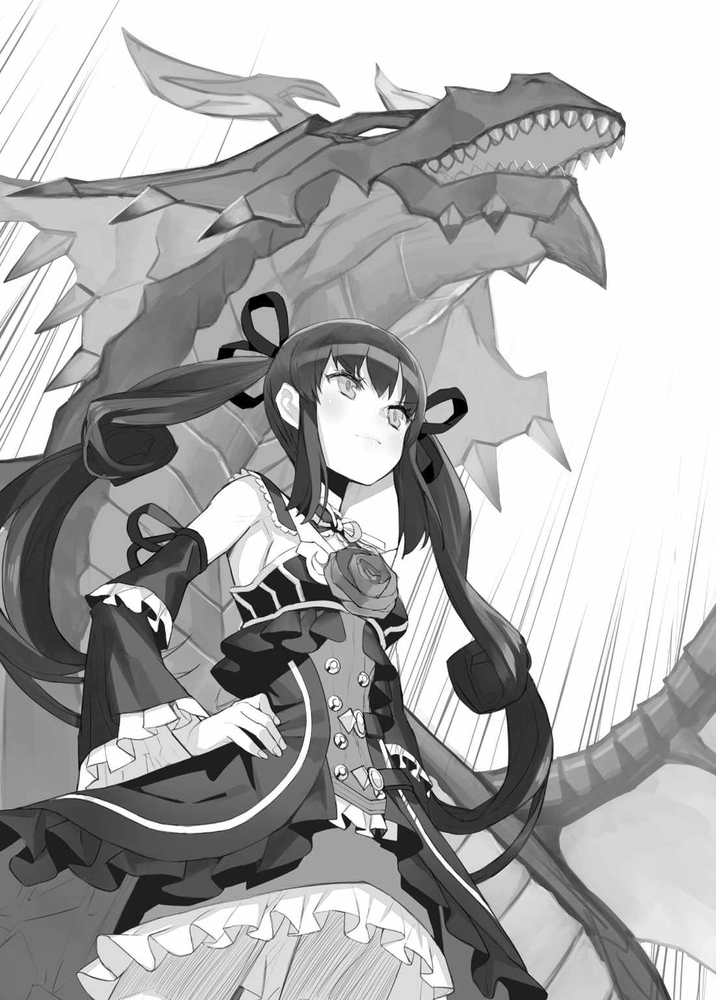
リズは気を取り直したように叫ぶ。その声に呼応するようにドラゴンが天に向かって吠 える。鼓 膜 が破れるほどの声量。俺たちは咄嗟に耳を塞 ぐ。
それだけで内 壁 にヒビが入る。
咆 哮 だけで......これか！
ドラゴンの口に赤い炎が収束する。その熱量で周囲の景色がゆらゆらと揺 らめいていた。
まずい！
「殺しちゃ駄目よ、ジークフリート」
すると、ドラゴンは俺たちではなく、壁に向かって炎の塊 をはき出した。
大砲のように射出された炎の塊は轟 音 と共に側面の壁や一部の天井を全 て吹き飛ばす。
顔を上げて見ると、炎の塊は壁を破 壊 しただけでは飽き足らず、街の近くにいたデュアルテイル国やエルゴ国の援 軍 を吹き飛ばす。
外から街の住民たちの悲鳴が聞こえた。どうやら壁がなくなってドラゴンが見えてしまったようだ。
あんなに強力だなんて。こんなのうちの商品でどうにかできるレベルじゃない。
再びドラゴンは息を吸い込む。
俺は恐 怖 から足が震える。
「ね。すごいでしょ。ほら、もう一発、やって！ ジークフリート！」
リズが子供のように無邪気にはしゃぐ。しかし、ドラゴンは撃った反動のせいか、唸 るだけでなかなか動かない。
「どうしたの？ ジークフリート」
リズがドラゴンに問うが、何も言わず動こうとしない。どうやら、連発できないようだ。
「エリューシカ！ 俺が食い止めるから、今のうちにリアン王女を連れて避 難 してくれ！」
俺はエリューシカに向かって叫ぶ。
「よい。妾もここに残る！」
しかし、リアン王女は頑 なに拒 否 する。
「でも、ここは危険だ」
「そうです、リアン様！」
俺とエリューシカの説得にリアン王女は首を振 る。
「逆 賊 に背を向けることはできぬ」
リアン王女がリズに厳しい視線を送る。
「お姉様!? 」
リズが信じられないといった表情でリアン王女を見つめる。
「勇者よ。リアン・ビークアイデン・フォン・ルーフが命ずる――逆賊を討て！」
「逆賊って......リアン様！ 駄目ですよ、そんなの！」
エリューシカがリアン王女に詰 め寄る。
「本気、ですか？」
俺はリアン王女を見つめて問いかける。リアン王女は僅 かに視線を逸 らし、毛先を指でいじる。
「ここまで来てしまったら、もう倒すしかないのじゃ！」
リアン王女が悲痛な表情で叫ぶ。
「わかりました。それならば、エリューシカとリアン王女は下がってください。二人がそこにいては戦いに集中できません」
「勇者様！ で、でも！」
「妾は一人でも大丈夫じゃ、エリー。お主も気にせず戦ってくれ」
リアン王女が後ろに下がる。
「お姉様！ どこに行くの!? 」
リアン王女は一 瞥 すると黙 って出口に向かう。
「勇者様、本当にリズ様を討つのですか？」
エリューシカが俺の袖 を引っ張って泣きそうな顔で訴 える。
「いや、討つんじゃない。止めるんだ」
俺の言葉を聞いてエリューシカが戸惑う。
「リアン王女は嘘 をつくとき、毛先を触 る癖 があるみたいなんだ。リアン王女はリズを止めたいと本心では思っているはずだ」
「そんなことにまで気づいていらっしゃったのですか」
エリューシカは感動したように瞳 を潤 ませて俺を見つめる。
「絶対にリズを止めよう」
「はい！」
とはいえ、リズが召 喚 したドラゴンは強力だ。勝つのは容易ではない。でも、どこかに弱点があるはずだ。
ドラゴンに向き直る。ロード・ドラゴン・ジークフリート。固い鱗で覆われた身体 が特 徴 らしい。今までのモンスターとは比べものにならないほど強力なモンスターだ。
元の世界のジークフリートは背中の葉っぱが一枚貼り付いた場所が弱点だった。
一 緒 にするのは危険だが、狙 うとしたらそこだろう。
よし！ ドラゴンが動かない今がチャンスだ！
「ジークフリート、さっきのじゃなくていいから、何か違うものをみせて！」
すぐに駆 け出 そうとしたが、リズがドラゴンに指示を出す。
しまった！ もう動けるのか！
それを聞いたドラゴンは大きく息を吸う。
「エリューシカ！」
慌 てて俺 たちは柱の陰に隠れる。同時にドラゴンは俺たちに向かって炎をはき出す。炎は赤い絨 毯 のように部屋全体に広がり、謁見の間を呑 み込んでいく。
先ほどよりは格段に威 力 が劣る。しかし、柱に隠れても肌 が焼けるような熱でじりじりと体力が奪 われていく。
「ふふ、いいわ。とてもいい攻 撃 よ、ジークフリート」
リズの興奮する声が聞こえる。
「くそ！ なんとか近づければ......」
あの炎をかいくぐることさえ出来たら。
何か使えるものはないだろうか。
持っている物はアルミホイル、ノミ、懐 中 電灯ぐらいしかない。
そうだ。アルミホイルなら燃えることはないだろう。補助魔法で強化すればいけるかもしれない。
「エリューシカ！ 魔法でこれの強度を強化してくれ！」
俺はアルミホイルを服に巻き付けて示す。エリューシカは持っていた杖をアルミホイルに向ける。
「は、はい。――目覚め る力 ！」
アルミホイルが光 り輝く。完全に輝きが消えた後で俺はそのアルミホイルに触れる。
柔 らかいが、引っ張っても破けない。これなら動き回れるだろう。
「勇者様、どうか、ご武運を」
エリューシカが祈るように呟く。俺はエリューシカを元気づけるように頷く。
俺はアルミホイルで体を隠しながら姿勢を低くして、柱から勢いよく飛び出る。
飛び出た途端、炎が俺を襲 う。
うわ！ し、死んだ
一瞬、肝 を冷やすが、炎はアルミホイルに完全に防がれる。しかし、熱自体は防げるわけじゃない。
やばい。熱くなってきた。これじゃあ、そんな長くはもたない！
俺は炎の中を突 き進 む。
「へー。そんな使い方があるのね」
リズが感心したような声を上げる。
「ジークフリート、あれをやって。すごい強力なやつで全てをなぎ払って」
リズがドラゴンに命令を出す。
思い当たるのは山を削 った炎の塊。
「勇者様！ 炎が止 みました！ 今です」
エリューシカの声に反応して、服から顔を覗かせると、炎を吐 くのをやめたドラゴンが大きく息を吸うのが見えた。この動作はさっきの炎 弾 の予備動作だ。
まずい、この距 離 だと間に合わない！ えっと、何か無いか!?
俺は咄嗟にエプロンのポケットをまさぐる。すると、何かが指に触れる。
殺虫剤と一緒に入っていたカエルのおもちゃだ。あとでしまおうと思い、ポケットに入れておいたものだ。
そういえば、こんなものもあったな......。くそ！ 一 か八 かだ！
俺はそのカエルのおもちゃをリズに投げる。
リズの髪にカエルのおもちゃがへばりつく。
「１００ ！」のカエルのおもちゃは結構精 巧 に出来ていて、本物と見間違うくらいだ。若 干 ヌメヌメして肌にピタッと張り付くそれは、生理的に嫌 悪 する人も多いだろう。
「――え!? きゃああああああ！」
今まで余 裕 そうだったリズの表情が初めて驚愕に変わる。
「いや！ 取って！ ジークフリート！ 早く取って！」
リズの命令を聞いてもどうやって取ったらいいかわからずドラゴンは困惑する。同時に収束していた炎は霧 散 する。
「きゃー！ きゃー！ 早く！」
その隙 にドラゴンに近づく。よく見ると背中の中央にある鱗が他の鱗よりも赤い。
あれか。
リズのほうに目をやる。まだ混乱しており、俺には気づいていない。リズの命令をドラゴンは待ってるため動けないようだ。
よし、今のうちだ。
俺は手のひらくらいの大きさをした固い鱗を掴 んでよじ登り、難無く背中の中央にたどり着く。
「もー！ これ、作り物だったのね！ 折 角 おめかししたのに！ 乱れちゃったわ！」
どうやら、カエルがおもちゃだと気づいたようだ。
その間に俺はリュックから「１００ ！」のノミとハンマーを取り出す。そのままノミを逆手に持ち、構えて鱗に当てる。
ジークフリートはこの世界の武器や魔 法 では傷一つ付かなかった。でも、ジークフリートを倒したダイナソーは異世界の漂 流 物 を使ったという説がある。このノミは俺たちの世界の物だ。これならいけるかもしれない！
上からノミを打ち込む。しかし、鱗を僅かに削っただけだった。
駄目だ。固すぎる。ここが弱点じゃなかったのか？ いや、この形状なら根元にノミを打ち込めば、剥 ぎ取ることができるかもしれない。
上からノミを打ち込み、鱗を一気に剥ぎ取った。
ギャオオオオオ！
ドラゴンの巨大な咆哮が響 く。鱗の内側にはピンク色の筋肉が見えた。
食 らえ！
俺はノミをドラゴンに深く突き刺 す。
しかし、決定打にはなっていないようだった。
ドラゴンは翼を大きく広げて立ち上がり、俺を振り落とそうと身をよじる。
俺はノミを深く突き刺して振り落とされないようにしがみつく。
まずい！ ここからどうすればいいんだ！
エリューシカのように魔法が使えるわけでもなく、爆弾を持ってきているわけでもない。
決定打が足りない！ 何か......何かないのか!?
「勇者様！ これを！」
その時、エリューシカが駆 け寄 り、何かを俺に向かって投げる。慌てて俺はそれをキャッチする。
「え、ダイソー・ド!? だ、だけど......」
それは、ポルカの村の戦いの後でエリューシカが拾っていた、聖 剣 ダイソー・ドだった。
「ジークフリートを倒せるのはこの剣しかありません！」
これ、役に立たなかったからなぁ。でも、ノミよりはマシか！
「あなた！ ジークフリートに何をしているの!? ジークフリート！ 振り落として！」
リズがドラゴンにしがみつく俺を見て命令を出す。
けど、もう遅い。
「うぉぉぉぉぉ！」
ドラゴンの鱗を剥 がした部位に目がけてダイソー・ドを突く。
すると、まるで力をかけることなく、すんなりと刃 がドラゴンの肉を切り裂いていく。
ドラゴンが断末魔の声を上げて苦しむ。
すると、ドラゴンの体から出た光の粒 子 がダイソー・ドに集まり始める。
なんだ、これは!?
「勇者様！ その光は魔力の粒子です！ 剣は魔力を吸っているようです！」
「そ、そんな効果があるなんて！」
このままいければ、ドラゴンだって倒せる！
そう思っていたが、ドラゴンは最後の抵抗をするように体を激しく揺さぶる。
「うわあああああ！」
その勢いで剣が抜けてしまう。
俺は剣と共に振り落とされて地面を転がる。
「勇者様！」
慌ててエリューシカが駆け寄ってくる。
「だ、大 丈 夫 だ、エリューシカ」
く！ まだそんな力が残っていたなんて！
俺は立ち上がってドラゴンに向き直る。
ドラゴンは俺を見 据 えると、大きく口を開ける。
も、もう駄目だ！
覚 悟 を決めたそのとき、ドラゴンは天に向かって苦しむように咆哮を上げた。
どうやら、剣の一 撃 で弱点を貫 いたらしい。ドラゴンの体はサラサラと砂のように崩 れていく。
「やった！ 倒した！」
俺は思わずガッツポーズを取って喜びの声を上げる。
「すごいわ。お兄さんは本当に勇者なのね」
リズがドラゴンに近づき、崩れていく中で残った神力石を取る。
「でもね。次も同じように倒せるかしら」
し、しまった！ 神力石を奪い取らないと何度だって蘇らせることができてしまう！
「――永遠の聖域 」
リズは再び呪文を唱える。同時に神力石の光は強く膨れあがる。
も、もう一度、あのドラゴンと戦うのか。
今度は俺を近づけるなんてことはさせないだろう。
「さぁ、復活よ。ジークフリート！」
ダイソー・ドを構えたそのとき――。
ぴきりと神力石にヒビが入った。
「え!? な、なにこれ......」
リズはわけがわからないといった戸 惑 いを見せる。
......これはリズの予測範囲外のことか？
「な、なんなんだ！ あれ!? 」
「危険です！ 勇者様！ 神力石が暴走を始めています！」
神力石は更 にヒビを増やして輝き始める。それに驚 いたリズの手から石がこぼれ落ちる。
「復活の魔法の効果に神力石は二度も耐 えられなくなったのだと思います！ このままでは魔力が暴走して、この街全部が吹き飛んでしまうかもしれません！」
「くそ！ 最悪だ！」
魔力の暴走、か。
「それなら、この剣 でなんとかなるかもしれない。ドラゴンに剣を刺したとき、魔力を吸い取っていたんだろう!? だったら、神力石の魔力も吸い取れるはずだ！」
「そ、そんな手が！」
「ああ！ だから、エリューシカは俺を信じて下がっていてくれ！」
本当は自信なんてないが考えてる暇 はない！
「わ、わかりました！」
エリューシカは俺から離 れていく。
神力石が更に輝きを増して熱を持ち始める。まるで太陽みたいだ。
ふと、目に付いたのは神力石の近くで呆然としているリズだった。
まずい。このままだとリズが巻き込まれる。
俺は咄嗟にリズの手を引いて後ろに隠す。
「いや！ やめて！ 触らないで！」
戸惑ったようなリズの声が背中から聞こえる。
直後、神力石から光の粒子が生まれる。
「な、なんだこれ！」
「それは高密度の魔力です！ 物質は全て魔力過多により崩 壊 してしまいます！」
光の粒子は周囲一帯の物を破壊しながら俺たちに向かって広がる。
もう迷っている暇はない！
「うぉおおおおおおおおお！」
俺はダイソー・ドを光に突きつける。すると、剣は光を吸収していく。
「ゆ、勇者様！」
「う、うそ！ 高密度の魔力を剣で受け止めている!? 」
徐 々 に光は小さくなっていきダイソー・ドに吸い込まれる。
な、なんとかなったか。
しかし、今度は俺たちの近くにある床 や壁から光がわき出てダイソー・ドに取り込 まれていく。光が抜 き取られた壁や床は色素がなくなり、細かい煙 のように消えていく。
「ゆ、勇者様！ 壁や床から魔力が奪われていきます！ どうやら、その剣は魔力を無差別に吸収し続けるものと思われます！」
魔力を無差別に吸収!? あの光は物に宿っている魔力ということか！ もしかして、これがダイソー・ドの災 厄 というやつか!?
「この世界、ヴァーミアンの物には基本的に魔力が含 まれています！ おそらくこのまま魔力を吸収されてしまえば、国どころか世界が大変なことになるかもしれません！」
くそ！ そんなこと言われても魔力を含まない物質なんてこの世界には......！
いや、待てよ。
俺がいた元の世界の物には魔力なんか含まれていないはずだ。
今、この場で剣に巻けるもの......今着てる服くらいか。
エリューシカたちのいる前で脱ぐのは恥ずかしいな。でも、そんな場合じゃないか！
急いで体に巻き付けていたアルミホイルを剥ぎ取って「１００ ！」のエプロンを外す。
「俺に任せてくれ！ 魔力を吸収し続けるなら、魔力なんてないこいつで！」
ダイソー・ドの刀身をエプロンで覆う。
「これでどうだ！」
それでもまだ周囲の床や壁から光が立ち上る。
「もっと服がないと！」
「ゆ、勇者様!? な、なにを！」
エリューシカが顔を赤くして狼 狽 する。
俺はポロシャツを脱いで上半身をむき出しにし、ダイソー・ドに巻き付ける。だが光は少し弱まった程度だ。
「くそっ、まだか」
俺はさらにズボンを脱ぎ、ダイソー・ドに巻き付ける。トランクス姿の俺の下半身が露 になる。すると、あたりに湧 き出していた光が薄くなり消えていく。
「な、なんとかなった......」
光が完全に消えたことを確かめ、安 堵 から俺は座 り込む。
「まさかダイソー・ドにあんな力があったなんて。おそらく一定以上の魔力に反応してダイソー・ドが起動する仕組みだったのでしょう。だから、ヘルハウンドのときは起動しなかった。そして、一度起動すると暴走して魔力を無限に取り込み――」
そこにエリューシカがやってきて説明してくれるが、下着姿の俺を見て言葉が途 中 で止まる。
「あ、あんまり見ないでくれるか」
女子に下着姿を見られると恥ずかしい。
「す、すみません！ 勇者様！」
慌ててエリューシカは視線を外すが、気になるらしく、ちらちらとこちらを見てくる。
「で、でも、ドラゴン・ジークフリートを倒 すなんて。信じられません」
「エリューシカのお陰 だよ。補助魔法がなければ、近づけなかった。ありがとう」
俺は素直にエリューシカを賞賛する。
「い、いえ、そ、そんな。私なんて。そんな」
エリューシカがわたわたと手を振って謙 遜 する。
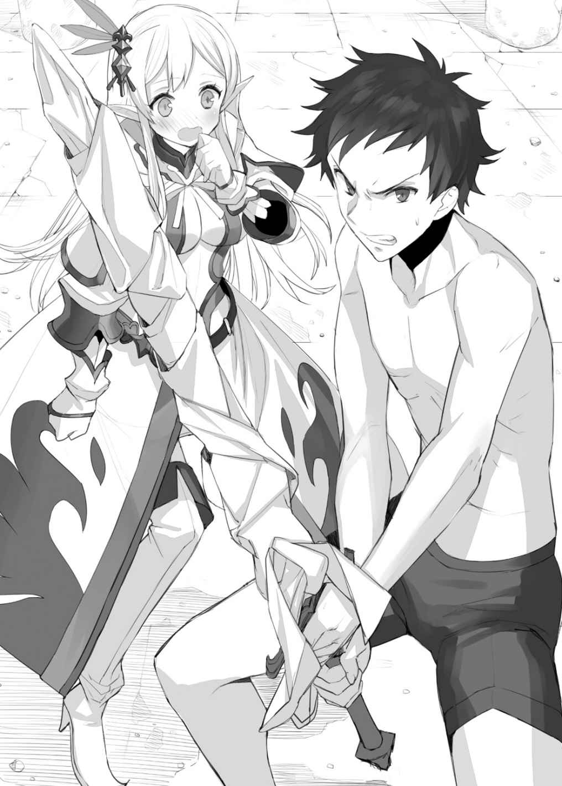
ドラゴンを倒せた最大の要因は、リズにドラゴンを扱 いきれなかったことにある。俺たちをいたぶろうとしていたのもあるだろうが、ドラゴン自身もリズの命令でしか動いていなかった。あれでドラゴンが自分の意思で俺たちを倒そうとしていたなら、結果は違っていただろう。
とにかくドラゴンは退治することができた。後は――。
「う、そ」
小さな呟きが聞こえてきた。
気づけばリズはドラゴンがいた場所を見て呆然と立ち尽 くしていた。
「降参しないか？ もうこれ以上、策はないだろ？」
俺の言葉にリズは振り向く。
「ばかああああ！ ばかばかぁぁぁ！」
リズはぽかぽかと俺の胸板を叩 く。
「うわあああああん！」
ぺたんと座り込み、リズは子供のように泣きわめく。
「え、え、え」
俺はリズの予想外の反応に戸惑う。
「ど、どうしましょうか!? 勇者様！ な、泣いちゃいましたよ！」
エリューシカが慌てるが、それは俺も同じだ。
「これでお姉様に褒めてもらえないじゃない！」
リズの言葉に俺は気づく。
リズはただ姉に認めてもらいたいだけなんだ。
そう思った瞬 間 、体の力が抜けた。
「どうして、そんなに褒めてもらいたいんだい？」
俺は片 膝 をつきながら、リズに視線を合わせる。
「だって。私、お姉様みたいにすごくないから嫌 われているの。悪 魔 の子とも言われたの。それで塔に閉じ込められたの。だから、思ったの。お姉様みたいにすごくないから駄目なんだと。悪魔の子なんかお姉様よりすごくないの。だから、もっとすごいものにならなきゃ認めてくれないの。だから、悪魔の子よりもすごい――魔 王 みたいなことをしたの」
まるで子供みたいな論理だ。よく考えれば、ずっと塔に閉じ込められていたもんな。この子の精神は幼いままで止まっているのかもしれない。
「リアン王女はリズを嫌っていないよ」
「嘘！ お姉様は私を倒すって」
「本当だ。リアン王女は心から望んで言ったことじゃない」
「どうしてわかるの？」
「どうしてと言われても......リアン王女の嘘の癖を見抜いちゃったんだよ。勇者だからな」
俺の言葉を聞いてリズはぽかんとする。
「私も勇者様と同じ意見です。リアン様とお会いしたときはリズ様のお話がいっぱい出てきましたよ。ですから、リズ様を嫌っていたなんてことありません！」
エリューシカが熱心に語る。
「そうなの？」
まるで憑 きものが落ちたような顔でリズが問いかける。
今までのリズは孤 独 を感じていた。リズが求めているのは自分の居場所だ。だから、自分の魔法がすごいということを見せつけて居場所を作りたかったのか。
「リズ、わざわざ魔法を使って褒 めてもらおうとしなくても、リアン王女なら話せばわかってくれるさ」
「そう、かな」
「ああ、俺が保証するよ」
俺はリズに頷 く。
「リアン王女もそう思うでしょ」
リアン王女に向かって語りかける。
「......むぅ。なんでわかったのじゃ」
ドラゴンが倒されたのを確 認 して部屋に入ってきていたリアン王女が顔を出す。
「心配だったんですよね。俺が本当にリズを倒してしまわないか」
「そうなの？ お姉様」
リズが首をかしげてリアン王女に問いかける。
「本当はあんなこと言いたくなかったのじゃ。だけど、父上がいない今、一時的とはいえ国を治めている者として責任を取らなければならなかったのじゃ。本当にすまなかったのじゃ」
「お姉様ぁ......」
リアン王女の言葉にリズが素 直 に喜ぶ。
「そもそもどうして、リズ様を幽閉したのですか？」
「これだけ強力な魔法が使えるリズを自国に置いておくと、他国との戦争の火種になるとでも思ったんじゃないか？」
エリューシカの問いかけに俺は答える。
「そうなのじゃ。全く器の小さい父上――いや、国王じゃ。他国にバレることを恐れた国王はリズを死んだことにして幽閉してしまったのじゃ」
リアン王女は俺の言葉に頷き、悔 しそうに唇 を噛 む。
「じゃから、妾 は魔法の有用性を認めてもらうためにエリューシカを呼び寄せたのじゃ」
それでリアン王女は魔法に対して積極的だったのか。
「なんとかリズを助け出せなかったんですか？」
「妾は父上に信用されていなかったからのぉ。場所を知ることができなかったのじゃ」
国王はリアン王女が妹を助けることを懸 念 していたのかもしれない。
「すまなかったのぉ。リズ。助けることができなくて」
リアン王女はリズの頭を撫 でる。
「お姉様、私こそ、ごめんなさい」
リズも素直に謝 る。
「よい、よいのじゃ......」
リアン王女が涙を流しながらリズを抱 きしめる。
「よかったですね、リアン様」
それを見たエリューシカももらい泣きしていた。リアン王女と長い付き合いのエリューシカだ。リアン王女の涙 に共感したのだろう。
「よかった。これで一件落着――」
何か忘れているような。
「そうだ！ デュアルテイル国やエルゴ国の兵たちは！」
俺とエリューシカはドラゴンが開けた穴に駆け寄り外を見る。
「どうやら、さっきのドラゴンの攻撃で撤 退 していったようです」
エリューシカの言うとおり、デュアルテイル国やエルゴ国の兵たちが慌てたように王都から出ていくのが見えた。
あとは神力石だけど......。
俺は神力石があった場所に足を運ぶが、欠片 すら見当たらない。
「やっぱりないか。はぁ......、もう帰れないのか」
俺は力が抜けて膝を突いてしまった。
「秋 海 、その......」
リアン王女が申し訳なさそうな顔でやってくる。
「此 度 の件、妾の妹がすまぬことをした！」
土下座するような勢いでリアン王女が頭を下げる。
「え、あ、頭を上げてください。不幸な事故だったんですから」
「代わりの神力石はなんとか手に入れてみせる！」
リアン王女が顔を上げて言い切る。
「え、神力石ってすごく高いんですよね？ い、いいんですか？」
俺は立ち上がってリアン王女に詰め寄る。
「うむ。国土を半分売り渡せばなんとかなる」
「それは駄目ですよ！ なんとか魔 力 石 で代用しましょう！」
俺は慌てて止める。
「リアン様、あとどれくらい魔力石は残っていますか？」
「勇者召喚などでかなり使ったからのぉ。およそコモンタイプが二百個くらいじゃ。お主らは国を救ってくれたのだから、国に残った魔力石は全部渡 すぞ」
「ありがとうございます。ですが、もうしわけないのですが、まだ魔力石が足りません。あと八百は欲 しいです」
「奪った魔力石なら、コモンタイプが三百個くらい基地に残っているわ」
そこにリズが会話に参加する。
「残りは五百個か。それならば、１０００万ゴランあれば他の場所から魔力石を買うこともできるのじゃが」
「......１０００万ゴランか。それくらい稼 いでたような」
「む、本当か。......お主ら、どれだけ稼いだのじゃ」
リアン王女が呆 れたように呟 く。
ほとんどまつりのお陰だけどな。
「リアン王女、お金を全て渡しますので、魔力石を買って頂けないでしょうか？」
「それくらいは造作もないことじゃ」
俺の提案にリアン王女は快 諾 する。
よっし、これで帰れるぞ！
「しかし、この件が調べられるとリズの力が知られてしまう可能性があるのぉ。どうしたものか」
リアン王女は困ったように呟く。
「それならば、リズの姿は誰 にも見られていないことですし、今回の事件は盗まれた神力石から復活したドラゴンが魔王だったということにすれば問題ないんじゃありませんか？」
「確かに父上や官 僚 には妾から説得できる。......自分の娘 がこのような騒 ぎを起こしたなど父上は公表したくないだろうしのぉ。むぅ。しかしのぉ」
それでも不満そうなリアン王女。
「このままでは事件の首 謀 者 としてリズは牢 獄 行き、最悪、死 刑 ですよ」
リアン王女を俺はたたみかけるように説得する。
妹のことを言われて図星を突かれたのか、リアン王女が戸惑い、沈 黙 する。
「勇者様......。やっぱり、そこまで考えていたんですね！」
エリューシカが手を叩いて喜ぶ。
「これしか方法がないからしょうがないさ」
折角、妹と会えたのにまた離ればなれになるのは悲しいと思ったからな。
「......全く。とんだ勇者じゃのぉ」
呆れた笑いをリアン王女は見せる。
「おーい。あーにぃ！」
そこにまつりの声が聞こえてきた。
振 り向 けば、謁 見 の間に入ってくるまつりの姿が見えた。
「あのね！ さっき、お城の壁 が崩れてそこからドラゴンが見えたの！」
どうやら、まつりは心配してやってきたようだ。
「あーにぃ、大丈夫だっ――あれ、何で裸になってるの？ お風呂のイメージトレーニング？」
「そんなわけあるか！ これは、そ、その必要だったからさ！」
「そうなんだ。風邪 引かないでねー」
まつりは俺の姿に深くツッコむこともなく、無事であることを確認するとホッとしたような表情を見せる。
そうだよな。やっぱり妹がいなくなってしまうのは嫌だよな。
それを見た俺も安堵してまつりの頭を撫でる。
「どうしたの？ あーにぃ」
「なんでもない」
「変なあーにぃ」
まつりがくすくす笑う。
「ひとまず一件落着じゃな」
リアン王女の言葉を聞いて終わったと実感した俺はやっと腰 を下ろすことができた。
＊
あれから三日経 った。
今回の件は、偶 然 ドラゴンが復活して魔王を名乗り、勇者である俺がドラゴンを倒して解決したことになった。
本当の事件の首謀者であるリズは、国王にリズを罪に問わないようにリアン王女が頼 み込んだ結果、罪に問われることはなかった。
どうやら、国王が国外に逃 げ、リアン王女が事件を解決に導いたことで強く出られず、リアン王女が押 し切ったようだ。
俺たちの帰る準備はリアン王女が城の修復よりも優先してくれたため、二、三日で整った。リアン王女は俺たちが帰るために必要な魔力石を、俺たちの全財産である１０００万ゴランを使ってあらゆるルートから買い集め、更にお城からもかき集めてくれた。
ダイソー・ドは「１００ ！」のタオルで包 んで城の宝物庫に封 印 されることになった。
そして、ついに帰る日がやってきた。
「１００ ！」を魔 法 陣 で囲い終えたエリューシカが俺たちに向き直る。
この場に俺とまつり、エリューシカだけしかいない。他の人々も是 非 、見送りしたいと言われたが、送 還 の際に何が起こるかわからないからという理由でエリューシカが断ったのだ。その代わり、前日、豪 勢 なパーティを開いてもらった。
「勇者様、準備が終わりました」
「そうか。それじゃあ、これでお別れだな」
この世界では色々と危険な目にもあったけど、それでも、もう来られないと思うと寂 しい気持ちになる。
「エリューシカちゃん！ またね！ 絶対にまた会おうね！ 約束だよ！」
まつりが涙目になりながらも、エリューシカに抱きつく。
「はい！ まつり様！ まつり様のことは絶対に忘れません！」
抱きつかれたエリューシカはまつりに負 けず劣 らず目に涙を浮 かべる。やがて、まつりは涙を見せたくないのか急いで店の中に入っていった。
「絶対！ 絶対だからね！ 約束だからね！」
最後に店の中からまつりの声が聞こえてきた。
「はい、まつり様......」
エリューシカは強く頷くと、まつりが入っていった店に頭を下げる。
「勇者様、この度は本当にありがとうございました」
「こっちこそ、ありがと。色々あったけど楽しかったよ」
俺 とエリューシカは見つめ合うが、徐々にエリューシカの表情が暗くなっていく。
「......お別れがこんなに辛 いなんて思いませんでした」
エリューシカは視線を外したまま呟く。
「......ごめん。また何かあったら、呼んでくれ。必ず駆けつけるから」
気休めの言葉に過ぎないが、それでも、エリューシカは顔を上げて笑 みを見せる。
「はい。お待ちしています、勇者様」
「......あのさ。もう魔王を倒したから、勇者の役目は終わっただろ。出来れば、名前で呼んで欲しいんだ」
「わかりました。勇者様......いえ、秋海様」
エリューシカは照れくさそうに俺の名前を呼ぶ。
「あの、私もエリューシカではなく、エリーと呼んで下さい。親しい方はそう呼んで下さいます」
「わかったよ。その、エ、エリー」
女の子の愛 称 を口にすることはなかったから、思った以上に照れくさい。
お互 いに照れ笑いを浮かべる。
「秋海様、またいつか......必ず......会いましょう」
エリーがそっと手を握 ってくる。
必ず駆けつけると言ったが、そう簡単に大量の魔力石や神力石は手に入らないだろう。また出会える確率は低い。エリューシカもそれをわかっているはずだ。
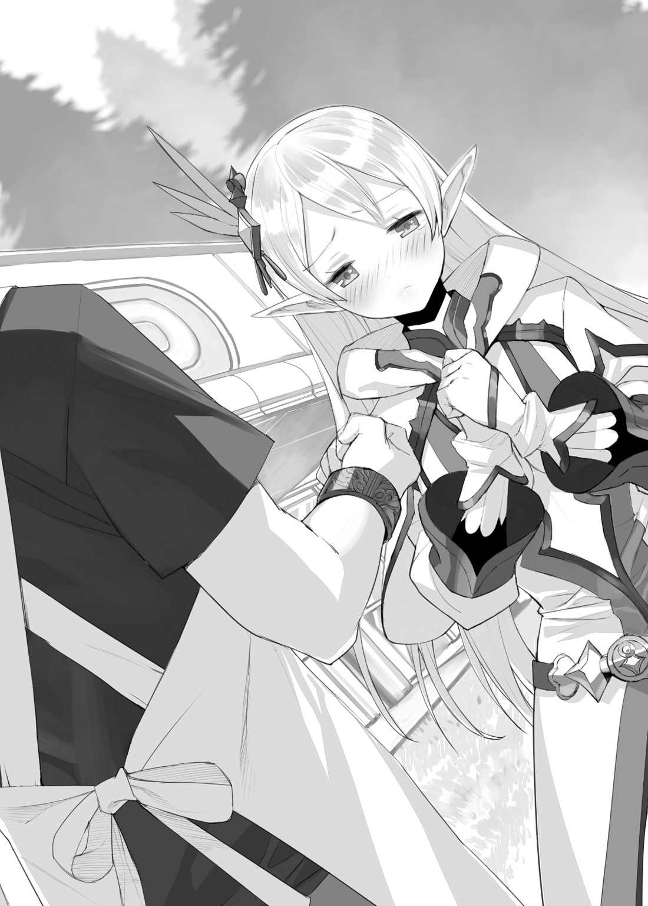
それでも、と。
「ああ、必ず......」
俺はその手を強く握りかえした。
再会を約束して。
「ありがとうございましたー！」
レジ前にいる俺の声が店内に木霊 する。時刻は夜九時を回ったところだ。先ほどまでは店内にお客さんがひっきりなしにやってきて忙 しかったが、今、ようやく最後のお客さんが帰って行った。
「ふぅ、やっと一息つけるな」
先ほどから休みもなくずっとレジ打ちをしていたせいで、疲 労 感 と倦 怠 感 が体に残っていた。
いつものバイト。いつもの日常。
俺たちは再び日常に戻 ってきた。
異世界では五日ほど過ごしたが、元の世界に戻ってみると数分しか経っていなかった。
どうやら、異世界に召 喚 されたときの台風はかなり酷 かったみたいで、この辺りでも納屋や古い家など何軒か倒 壊 したようだった。そのときに店が破損して商品が台風で飛んでいったということで両親は納 得 したようだ。
そのお陰で保険が下り、リニューアルして店は綺 麗 になった。
それでめでたしとなればよかったのだが、今度は俺とまつりだけでは手が足りないほど忙しくなってしまった。
「そうだね。今日も忙しかったねー」
棚 を掃 除 していた手を止めてまつりがニコニコと笑いながらやってくる。
「そうだな。でも、新人が入ったから大分、楽になった」
「ふふふ」
俺を見てまつりは微笑 む。
「まつり、なんで笑ってるんだ？」
「だって、前のあーにぃだったら、忙しいのが嫌 だからってとっくにアルカトラズの刑 務 所 まで逃げているよね」
「それ逃げているっていうか、捕まっているから！」
「でも、あーにぃ。なんか前よりも生き生きしているね」
確かに言われてみれば、前とは違って忙しくても頑 張 ろうという気持ちが強くなっている。
「ああ、色々と考えさせられたからな」
１００円の商品でも人々の役に立つことが出来る。
やろうと思えば、国を救うことだって出来る。
そう思ったら、「１００ ！」で世界だって変えられそうだ。
「ところで新人はどこに行ったんだ？」
「るなるなならトイレットペーパーの在庫が切れたから倉庫に取りに行ったよ。でも、遅 いな～。どうしたんだろうね」
まつりが言い終わった直後――。
「先 輩 ～」
倉庫のほうから助けを求めるような少女の声が聞こえてきた。
「今の声は......」
「るなるなだね」
俺とまつりは顔を見合わせる。
「俺が行ってくるからまつりはレジ番を頼 む」
「わかったよ」
俺はまつりを置いて倉庫に入る。中はリニューアル前と変わっていない。しかし、段ボール箱や大量のトイレットペーパーが崩れて山のように積まれていた。その中にかろうじて「１００ ！」のエプロンを着た少女の姿が埋 もれていた。
「大 丈 夫 か？」
俺は少女に手をさしのべる。
「にゃはは。ちょっと失敗しちゃった」
少女は俺の手を掴 む。
「よっと」
俺は力を入れて少女を引っ張り上げる。
現れたのは艶 のある黒 髪 をゆるくふわふわなツインテールにまとめあげた少女だった。僅 かに幼さを残している輪 郭 。だが、まつりよりも背が高く、体形も大人びている。
イマドキのギャル女子高生といった少女の名前は椿 るな。店のリニューアルに伴 って新しく入ったバイトだ。
どうやら、俺たちと同じ学校でまつりと同学年らしい。
「重いものは俺に任せてくれって言っただろ？」
「先輩優 しい～」
るなが俺の腕 に抱きつき、俺の顔を覗 き込む。
「あれ、先輩ってよく見ると化 粧 が似合いそうな顔しているね～」
「お、おいおい」
近くで見たるなの顔は薄 い化粧がされており、それが整った小顔を引き立たせていた。
「今度、化粧してもいいかな？ １００円のやつでも結構上 手 くできる自信あるよ～」
「男の俺が化粧しても気持ち悪くなるだけだろ」
「ええ～、そうかにゃ～」
まるで猫 のようにるなが体を俺の腕にこすりつける。
柔 らかい感覚に思わず体が強 ばる。
「あれれ～、先輩、緊 張 してるん？」
るながからかうような笑 みで俺を挑 発 する。
「う、いいから離れてくれ」
俺は慌 ててるなを引きはがす。
「にゃはは。ごめんねー。先輩ってうちにある妖 怪 スマホのスケコマさんぬいぐるみにそっくりだから、つい抱きついちゃうんだよねー」
「なんかあんまり嬉 しくない名前だな」
「にゃはは。結構、かわいいんだけどね」
ころころと笑うるなはまるで猫のようだ。
「さ～て、じゃあ、あんまりサボってたら、まつりんに怒 られちゃうから、段ボール箱を片付けたらトイレットぺーパーを持って行くね」
るなが散らばった段ボール箱を持ち上げる。
「あらら」
思った以上に段ボール箱が重いらしく、るなはよろよろと歩く。
咄 嗟 に俺はるなが持っていた段ボール箱の反対側を掴む。
「俺が段ボール箱を片付けるから先にトイレットペーパーを運んでくれ」
「えっ？ 先輩、レジに戻らなくていいの？」
「ああ、そろそろ人も少なくなってきたからな。まつり一人でも大 丈 夫 だろう」
「わかった。ありがとね、先輩」
るなが段ボール箱を俺に預けて離れる。
「今度、お礼にいいことしてあげるね」
るなが体を近づけて俺の耳元で囁 く。
「え!? 」
思わず俺は赤くなり聞き返す。
「あ、先輩、信じちゃったの？ にゃはは」
「お前なぁ」
我に返った俺は声を上げる。すると、るなは俺からパッと離れ、倉庫から逃げるように出て行ってしまった。
まつりとるなが一 緒 になると一気に店が騒がしくなりそうだな。
でも、どこか寂しい。
俺はあのときのことを懐 かしむように腕にはめられた楔 の腕 輪 を見つめる。
異世界から戻るときに楔の腕輪を外せると言われたが、あえてこのままにしてもらった。
これが俺とエリーを繋 ぐ楔だと思ったからだ。
これを外してしまうと、異世界のことが嘘 になるような気がした。
目を閉じれば、エリーの声が聞こえてくるようだ。
『扉 に繋がりし永久の旅人』
そうそう、こんな声だった。
『楔の石を聖 櫃 として。魔力の群体を生 贄 に。漆 黒 の星々を越 えて』
ほら、また聞こえた。
「まつり！ エリーの声 色 を真 似 てふざけるのやめてくれよ！」
倉庫の外にいるまつりに向かって叫 ぶ。
全く、まつりは。
折角、感傷に浸 っていたというのに。
『三千の世界を越 えて。異 界 鎖 よ聞き届けたまえ』
あれ。また聞こえる。
まつりの声にしては随 分 と――。
『エリューシカ・サイードの名において』
気がつけば、腕輪の文様が光っている。
いつか見た光景だ。
腕輪に刻まれた文字の光はやがて立体映像のように空中に魔法陣を描き、俺の周りを取り囲む。やがて、魔法陣は更 に広がり続けて、店内では収まりきれず、壁をすり抜けて外にはみ出るほど大きく広がる。
『繋がる世界 ！』
そして、視界は白色に包まれた。
お久しぶりです。宮元戦車です。
この度は『１００円ショップ店員が異世界トリップした結果。』を手にとって頂き、ありがとうございます。
前作から色々とありました。
「艦隊これくしょん‐艦これ‐」や、モバゲーの「アイドルマスター シンデレラガールズ」にハマったりしていました。
でも、なんとか戻ってこられたのは皆様のお陰だと思います。
それと最近、ツイッターを始めました。ほぼ艦これの話題しか呟いてませんが、お仕事情報なども書いてます。
全てＨＪ文庫編集部の皆様、Ｍ様やＮ様のお陰です。本当にありがとうございます。
そして、イラストを担当してくださったがおう様。素晴らしい挿絵をありがとうございます。
イラストを頂いたときには、「うひょーエロくて最高！ こんなことなら本編に『水着のエリューシカがおっぱいを金網に押しつけるシーン』とか『アメリカンポリススタイルのまつりが紫色のガムをくちゃくちゃして警棒をポンポンするシーン』とか入れるべきだった！」と後悔しました。
本当にありがとうございました。
この気持ちを歌にしようと思います。
聴いて下さい。
『～やさしいセカイ～』
作詞・宮元戦車
カワラナイなエブリディー。
ふと、ボクは携帯を取り出したよ。
朝見たときは１００パーセントだったのに残量は50 パーセント切ってたよ。
古くなったんだね。
使い捨てのレイディオみたいなものさ。
おもむろに画面を見たとき、君は微笑んでいた。
そんなに見つめないでおくれ。
どこにも行かないよ。ベイビー。
かわいい君。ボクだけの幻の嫁。
～～間奏～～
ＷＯＷ。スマホゲーに５万使ってしまったボクを激しく罵ってくれ！
あのお金使っちゃいけないお金だったの！
さぁ、バイトの始まり！
カーニバル！
ＯＨ！ 股間のパンツにドル札紙幣を差したボクは淫乱な娼婦のようにポールと踊（ダンス）っちまっうのさ！
炎！ 体！ 焼き尽くす！
鞭を持った女性に激しく臀部を叩かれながら叫ぶ！
「全てに感謝を！ 未来に光を！ 無垢な子供たちに未来を！」
右！ 左！ 右！ 左！
ありがとうざいます！ ありがとうございます！
以上です。前半はバイオリンとピアノのスローリーなジャズ。後半は犬笛とメトロノームの激しいロックをイメージしました。
それと前作で結ばれなかったヒロインは尼になりました。
※注意・作中における１００円ショップと商品は全て架空のものです。
宮元戦車
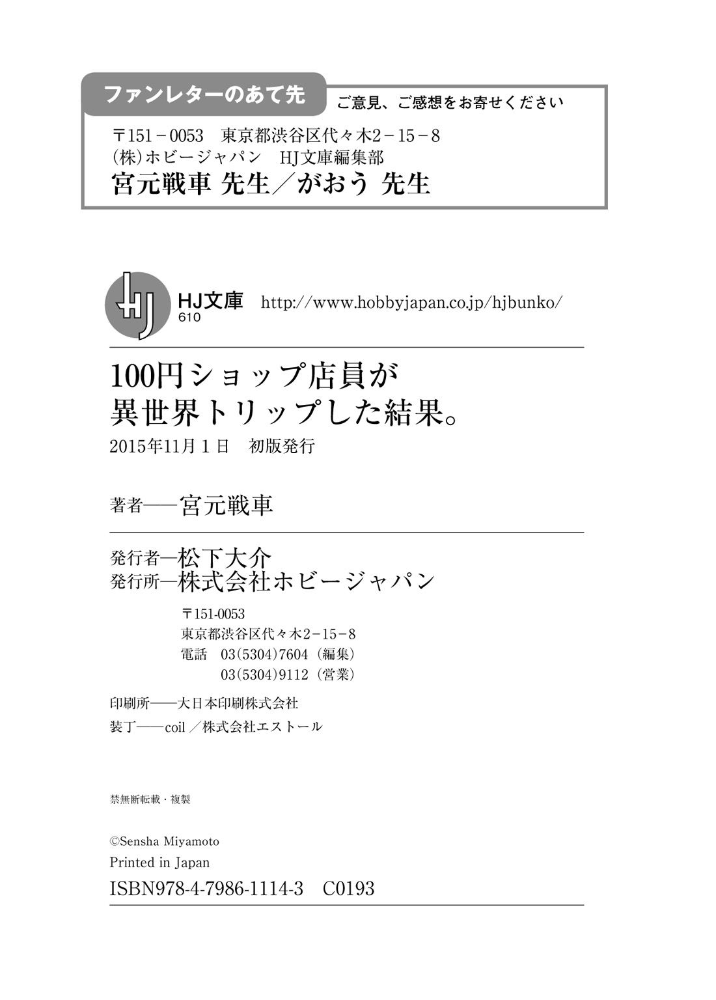